| デート・ア・ライブ アンコール <デート・ア・ライブ> (富士見ファンタジア文庫) | |
| 橘 公司 & つなこ | |
| Kadokawa / 富士見書房 (2013) | |
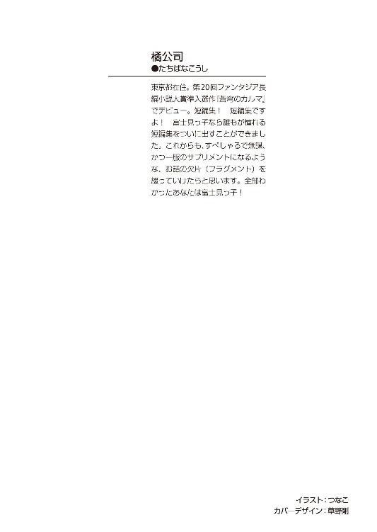
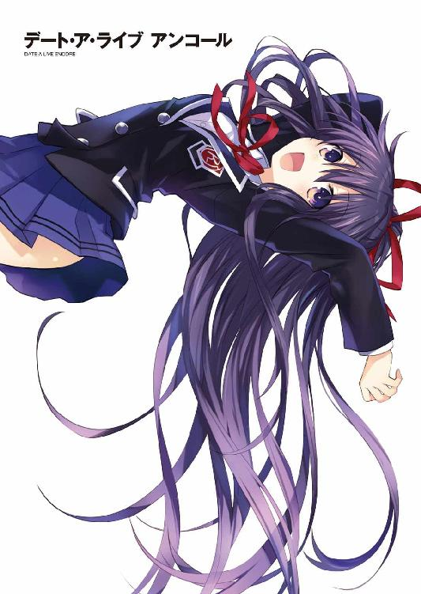
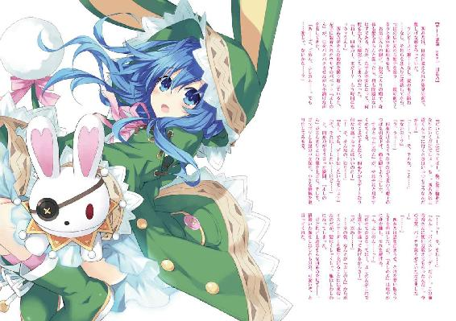
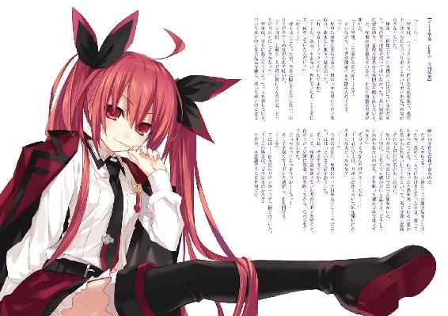
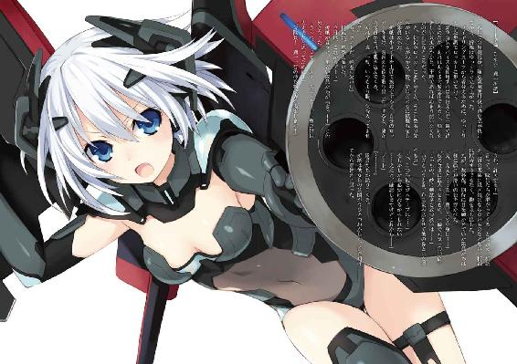
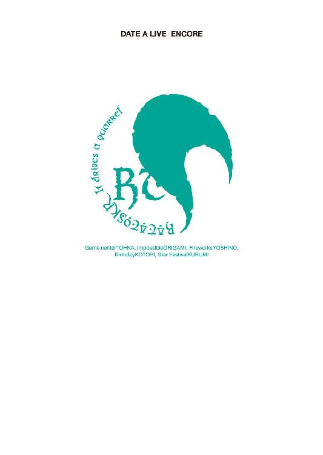
デート・ア・ライブ アンコール
橘 公司

富士見ファンタジア文庫
本作品の全部または一部を無断で複製、転載、配信、送信したり、ホームページ上に転載することを禁止します。また、本作品の内容を無断で改変、改ざん等を行うことも禁止します。
本作品購入時にご承諾いただいた規約により、有償・無償にかかわらず本作品を第三者に譲渡することはできません。
本作品を示すサムネイルなどのイメージ画像は、再ダウンロード時に予告なく変更される場合があります。
本作品は縦書きでレイアウトされています。
また、ご覧になるリーディングシステムにより、表示の差が認められることがあります。
口絵・本文イラスト つなこ
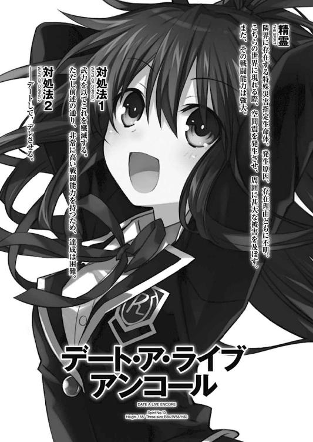
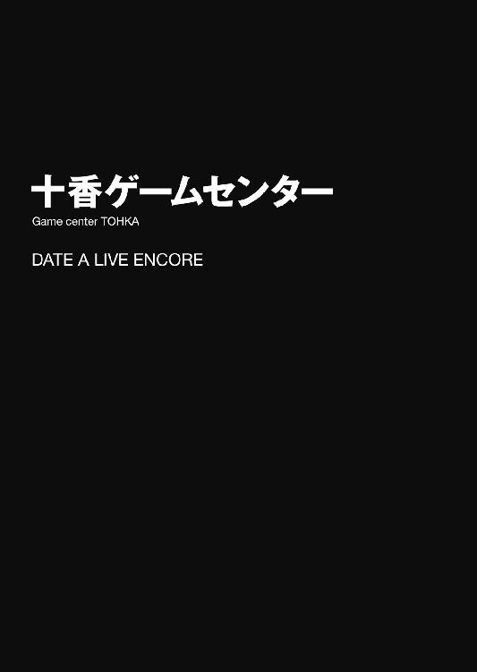
「鳶一折紙のォォ......あほたれぇぇぇッ‼」
──ひゅごッ‼
絶叫と同時、目にも留まらぬ速さで、拳がミットに吸い込まれた。
次の瞬間には、ミットが支柱ごと吹き飛び、前方の液晶画面を貫いて壁に突き刺さる。
一拍遅れて、ちぎれたコードからバチバチと火花が散り、壊れた画面からプスプスと煙が上がった。
「いぃ......ッ⁉」
まさかの事態に、後ろでその様子を見ていた五河士道は、眼球が飛び出さんばかりに目を見開いた。
天宮大通りにあるゲームセンターの一角。
ボクシンググローブとミットのついた筐体──いわゆる、パンチングマシンの前で。
「......ん、少しスッキリした」
夜刀神十香はふうと息を吐きながらそう言うと、貫通してしまった（！）グローブを外してその場にポイと捨てた。
細身の身体に煙る夜色の髪に、水晶の瞳。
世が世ならば国を傾かせたやもしれない美貌の少女である。
そんな少女のすぐ前で、壊れたパンチングマシンが、ファンファーレをエンドレスで流しているのだ。異様な光景という他ない。
周囲の客たちも皆、ポカンとしている。
「そ、そうか......そりゃ何よりだ」
と、士道が汗を垂らしながら言うと同時、後方からバタバタという足音が響いてきた。
「ちょ......ッ、お客様⁉ 何をしてらっしゃるんですか、困りますよ！」
ゲームセンターのスタッフと思しき男が、泡を食った様子で走り寄ってくる。
「ぬ？」
「あ......やべっ」
だが。
「......え？」
スタッフが、士道たちのもとにたどり着く寸前で足を止める。
理由は単純。彼の進行を妨げるように、身の丈二メートルを超えるであろう、黒服の大男が現れたからだ。
「な、なんですかあなたは......」
「失敬。少しあちらで話をしましょう」
「え、ちょっと......何？ いや......や、やめてぇぇぇぇぇぇっ⁉」
スタッフは、そんな悲鳴だけを残して大男に引きずられていってしまった。
「なんだ？ 今のは」
「......さ、さあてな」
十香の声にそう返すも......実は士道には、今の男に心当たりがあった。
予想通り──右耳に装着したインカムから、少女の声が響いてくる。
『──邪魔者はこっちで排除するわ。安心してデートを続けなさい。きっちり十香のストレスを発散させること』
「......あいよ」
十香に聞こえないように、返事をする。
なんとも奇妙な放課後デート風景。
発端は、少し前のことだった。
◇
「殿町、おまえケータイに何つけてんだ？」
帰りのホームルームも終わり、皆がぱらぱらと帰路につき始めたころ、帰り支度を整えた士道は、クラスメートの殿町弘人に怪訝そうな声を投げた。
「ん？ これか？」
殿町は、ワックスで逆立てられた髪をぽりぽりとかきながら、持っていた携帯電話を揺すってみせた。
それに合わせて、携帯の端っこにくくりつけられたオットセイのストラップが一緒に揺れる。
「可愛いだろ。虹オットセイのオットーレだ」
「そうか......猥褻物陳列罪にならないように注意しろよ」
「至極健全なキャラだっての！ なんで俺が持ってると猥褻物扱いになんだよ‼」
「ああ......すまん、つい」
士道が苦笑しながら謝ると、殿町は「ったく」と肩をすくめた。
「余ってっけど、一個いるか？ このシリーズ今人気らしくてよ。つけてっと女子のウケいいぞ？」
と、そう言って、制服のポケットから、台紙とビニール包装で簡単にパッケージングされたストラップを取り出してくる。
「あ？ 二つも買ったのか？」
「うんにゃ。ゲーセンの景品なんだよ。この前一気に二個取れたんだ」
「はー、すげえなそりゃ」
殿町が取り出したそれに目をやる。
......目が妙にリアルで、正直あまり可愛いとは思えなかった。
「......でもいいや。なんか気持ち悪いし」
「そうか？ 可愛いと思うんだけどなあ」
「あ、こっちの方が可愛いじゃねえか」
と、士道はストラップの台紙に印刷されていたシリーズ商品の中から、パンダのマスコットを指さした。
「あー、夢パンダのパンダローネだな。オットーレの友達で、玉乗りが得意らしい」
「いや、知らんけど。これなら欲しいかも」
「残念ながらそっちは持ってねえや。何回か挑戦したんだけど、配置が滅茶苦茶シビアでよ。店員もロクに対応してくんねえし」
「ふーん」
と、士道が返した、そのとき。
「──なんだとッ⁉」
突然、すぐ後ろからそんな叫びが聞こえてきて、士道は肩をビクッと震わせた。
「な、なんだ......？」
恐る恐る振り向くと、二人の女子生徒が口喧嘩していることがわかった。
「そ、そんなはずがあるか......ッ！ 貴様、適当なことを言うとタダでは済まさんぞ！」
「私は事実を言ったまで」
「うるさい！ 誰が信じるかっ！」
「うるさいのはあなた。少し静かにして」
「なんだとっ⁉」
「なに」
どちらも、一歩も譲らない。
片方は、十香。そしてもう片方は、まるで人形のように表情を変えないまま、淡々と言葉を紡ぐ少女──鳶一折紙だった。
成績優秀、スポーツも万能。士道のクラスが誇る完璧超人だ。
「ど、どうしたってんだ、いきなり......」
と、振り返ると、もうそこに殿町の姿はなくなっていた。
「あ、あのヤロウ......」
厄介事の匂いを感じ取って逃げたらしい。
士道ははぁと息を吐いた。
喧嘩の原因はわからないが、二人を放っておくこともできない。恐る恐る唇を動かす。
「お、おーい......」
「なんだ⁉」
「なに」
士道が声をかけると、十香と折紙が、まったく一緒のタイミングで視線を向けてきた。
一瞬怯むが、どうにか言葉を続ける。
「お、落ちつけって。何があったんだよ」
士道が問うと、十香と折紙は再び視線を交わらせた。
......なんかもう、それだけで空気がビリビリと震えるような迫力だった。
「──私は至極当然のことしか言っていない。夜刀神十香に理解力がないだけ」
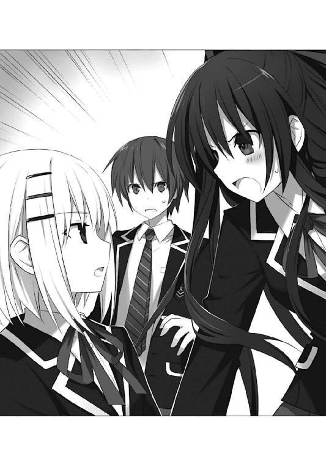
「なんだと⁉ 元はと言えば貴様が──」
「だから、落ちつけって。な？」
「......ふん」
士道が二人の間に入ってそう言うと、十香はプイと顔を背けて、自分の席に座り込んだ。
「............」
折紙はといえば、無言のまま教室を出ていってしまった。
「はぁ......一体なんだってんだ」
と──そこで士道は眉を動かした。
ポケットの中で、携帯電話が震えたのだ。
「......ん？」
画面に表示された名前は『五河琴里』。士道の妹だった。
士道は教室の隅に移動してから通話ボタンを押した。
「──もしもし。どうした、琴里」
『どうした、じゃないわよこのウスラハゲ』
「............」
通話ボタンを押すなり先制暴言。
士道は頰をぴくつかせた。
......なんだってまた琴里は、いきなり司令官モードになっているのだろう。
『──今、十香の機嫌メーターが一気にストップ安状態まで急下落したのだけれど』
「は......？」
士道が眉をひそめながら言うと、琴里が盛大なため息を吐いてからあとを続けてきた。
『気をつけてと言ったわよね。──力の大部分を封印されているとはいえ、彼女は精霊。「居る」だけで世界を殺すとさえ言われた災厄よ。精神状態が著しく不安定になると、封印されている力が逆流するおそれがあるわ』
「............っ」
琴里の言葉に、士道は唾液を飲み下した。
そう。
琴里の言うとおり、十香は人間ではない。
発生原因、存在理由、全てが謎に包まれた、『精霊』と呼ばれる存在なのだ。
今はある方法で力の大半を封じられ、琴里の所属する機関〈ラタトスク〉の監視下に置かれているのだが──その圧倒的な力を目の当たりにしたことのある士道としては、怖気をふるう事態であった。
『それで。いきなり精神状態が不安定になった理由を知りたいのだけれど。──士道、あなた一体どんな変態行為に及んだの？』
「俺が何かした前提で話進めんじゃねえよ」
『じゃあ何があったっていうの』
「ああ......鳶一とすげえ口喧嘩してた」
『鳶一っていうと、ＡＳＴの鳶一折紙？』
「ああ」
ＡＳＴ。対精霊部隊。
琴里たち〈ラタトスク〉と異なり、武力を以て精霊を排除することを目的とした、精霊専門の特殊部隊である。
鳶一折紙は、高校生にしてその実戦要員に数えられる才媛だった。
今は十香の力が封じられているため、表立って襲ってくることはないが──それでも仲はすこぶる悪い。
『ち、厄介なことをしてくれるわね。──まあ、起こってしまったことは仕方ないわ。士道、すぐに十香の機嫌を直してちょうだい』
「機嫌を......ねえ」
言いながら、士道は十香に視線をやった。
......周囲に負のオーラが漂っている。隣に観葉植物を置いたら一瞬で枯れそうだった。
「どうしろってんだよ......あれを」
『何言ってるのよこのフンコロガサレ。簡単なことじゃない。デートにでも誘っちゃいなさいよ。そうね......ストレス発散にゲームセンターなんてどう？──安心なさい。私たちがサポートしてあげる』
「な──」
『じゃ、準備しておくから、急ぎなさいよ』
士道が返事をするより早く、琴里は勝手に話を進めて電話を切ってしまった。
「............」
いろいろと言いたいことはあったが......こればかりは仕方ない。
士道は携帯電話をしまうと、大きく深呼吸をしてから十香の方に歩いていった。
「あ、あのだな、十香」
「......なんだ？」
十香が、不機嫌そうな声を返してくる。
一瞬怯むが......士道はどうにか踏みとどまって言葉を続けた。
「......っ、や、その......よかったら、なんだが。これからちょっと遊びにいかないか？」
「ぬ？」
士道がそう言った瞬間、十香の周りにわだかまっていた不穏な空気が、ふっと薄まった気がした。
「遊びに......つまり、シドーは私とデェトに行きたいといっているのか？」
十香が、士道の様子を窺うように、少し上目遣いになりながら問うてくる。
......いや、確かにその通りなのだが、改めて言われると、その、照れる。士道は頰をかきながら小さく首肯した。
「まあ......そうなるな」
士道がそう言うと、十香がパァッと顔を輝かせ、椅子から立ち上がった。
「おお......！ 行く、行くぞ」
「お、おう、そうか」
「それで、どこへ行くのだ？」
「ん......ゲームセンターなんてどうだ？」
「ゲェムセンター？」
十香が、不思議そうな顔をして首を傾げた。
「ええと......簡単に言うと、ゲームっていう楽しいものがいっぱいあるところだ」
「ほう。楽しいのか」
「ああ。パンチングマシンやモグラ叩きなんかもあるからな。スカッとして気持ちいいぞ」
「楽しいだけでなく気持ちいいのか！ 他には何があるのだ？」
「そうだな、格ゲーとかは慣れてないと難しいだろうけど......あ、音ゲーなんかは難易度低くすればいけるかもしれないな」
「音ゲー？」
「ああ。こう、音楽に合わせて、矢印の書いてあるパネルを足で踏んだり、太鼓型のコントローラーを棒で叩いたりするんだ。上手くいくと結構爽快なんだこれが」
「ほうほう！」
「他にもあれだ、機械を操作してお菓子を取るゲームなんてのもあるぞ」
「な......ッ⁉ お菓子までもらえるのか......⁉ それはもうさいきょーではないか！」
「ああ、最強だな」
「住めてしまうな！」
目を輝かせる十香に、士道は苦笑した。
「それはさすがにちょっとなあ......そもそも一八歳未満は夜一〇時以降入れないし」
「ぬ、そうなのか？」
「ああ、風営法だかなんだかでな。あ、これ覚えておけよ？ 琴里が用意してくれた十香の戸籍の年齢は一六歳だからな。ゲーセンに限らず、あんまり夜中は出歩かない方がいい」
「ん......覚えておく」
言って十香はむむうと腕組みした。少し、一気に情報を与えすぎたかもしれない。
と、十香の大仰なリアクションが気になったのか、二人のもとに、教室に残っていた女子のグループが寄ってきた。
「ねーねー、何の話してるの？」
「え？ ああ、ええと......」
問われて、士道は気まずげに頰をかいた。
と、士道が口ごもっていると、十香が代わりに口を開いた。
「あのだな、これからシドーに、いいところに連れて行ってもらうのだ！」
その言葉を聞いた女子たちは、ニヤニヤと士道の方に視線を送ってきた。
「なになに、見せつけてくれんじゃないのー」
「あーお熱いお熱い」
「五河くんもやるぅ」
「や......その」
......なんというか、困る。士道は頰を染めながら目を逸らした。
「ねえねえ十香ちゃん、いいところって、一体どこに行くの？」
と、女子の一人が十香に問う。
十香は「ぬ？」と目を丸くし、記憶を探るような仕草を見せてから唇を開いた。
「ん......なんといったかな。確かとても楽しくて......ああ、そうだ！ 一八歳未満は入ってはいけないところに行くのだ」
『え......ッ？』
十香の言葉に、女子たちが凍り付く。
「......ッ！ と、十香、違うだろ、それは夜一〇時以降の話で──」
「ぬ？ そうだったか？」
士道が慌てて訂正するも、女子たちはまるで聞いていなかった。
顔を見合わせ、ひそひそと会話を始める。
「一八歳未満立ち入り禁止のところって......」
「やっぱ、ご休憩のあるホテル......？」
「いや、もしかしたら夜のお店かも......」
「ごッ、誤解だ！」
士道は、声を張り上げて冤罪を主張した。
十香も、士道の様子に、自分が何かおかしなことを言ってしまったと思ったのか、士道をフォローするように言葉を継ぐ。
「皆が何を思っているのかはわからんが......違うぞ、シドーは、私を気持ちよくしようとしてくれているだけなのだ」
『な......っ』
「そうだ、足で踏んだり、棒で叩いたりすると、とても気持ちいいと言っていたぞ！」
『............』
女子生徒たちは、十香の手を引くと、士道から遠ざけるように自分たちの背に隠した。
「な、なんだ？ どうしたというのだ？」
十香が戸惑った様子で女子たちを見回すと、女子たちは眉をひそめながら目を伏せ、首を横に振った。
「大丈夫よ十香ちゃん。全部わかったから」
「事前に気づけてよかった......何も知らない無垢な十香ちゃんが、変態の餌食になるところだったわ」
「......この豚野郎！ 恥を知れっ！」
無論、最後の台詞は、士道に向けられたものだった。
「や、だから違うって！ 俺は──」
士道が弁明しようと口を開くと、女子たちは十香を守るように両手を広げた。
......もう、完全に女の敵扱いされている。
「違うぞ皆、シドーは悪い者ではない！」
少し慌てた様子で、十香が声を上げる。
「十香ちゃんはいい子ね......だからこそ、そこにつけ込む五河くんの罪は重いわ」
だが、女子は聞く耳を持とうとはしない。
十香はどうにか士道の疑いを晴らそうとしてか、むうとうなってからポンと手を打った。
「！ そうだ、シドーはな、私がそこについていったらお菓子をくれると言っていた！ どうだ？ とてもいい者だろう？」
『............』
女子たちはしばし無言になったあと、キッと士道に視線を向けてきた。
「......いや、その」
言葉にしなくともわかる。きっと彼女らの脳内には、士道が無垢な十香に「ふひ、ふひひ、お嬢ちゃん、僕と一緒に来れば美味しいお菓子をあげるよう？」と言っている映像が映し出されているのだろう。
と、そこで、士道の携帯電話が鳴った。──琴里だ。
「......あー、ちょっと失礼」
士道は女子たちに断りを入れ、電話に出た。
「......もしもし？」
『何してるの愚図。早くデートを始めなさい』
「ああ......ちょっと思わぬ妨害がな......」
『言い訳は聞きたくないわ。今から三分以内に学校を出ること』
「あ、ちょ──」
ぷつっ。つー、つー、つー。
問答無用で切られた。
「............」
司令官モードの琴里のことだ。三分以内に学校を出ねば、きっつーいペナルティが待っていることだろう。
「......十香！ 行くぞ！」
士道は携帯電話をしまって、叫びを上げた。
「おお！」
困り顔を作っていた十香が表情を明るくし、女子たちの間をすり抜けて士道のもとに戻ってきた。──無論、途中で自分の机から鞄を回収している。
士道はそれを確認すると、一目散に教室から逃げ出した。十香も、それを追ってくる。
「あ......ッ！ 十香ちゃん！」
「駄目よ騙されちゃ！ 戻って！」
「誰か！ 十香ちゃんが！ 十香ちゃんが汚されるぅぅぅッ！」
後方で何やら不穏な台詞が吐かれていたが、士道はどうにか気にしないようにして足を動かした。
そして──現在に至る。
士道と十香は、周りの客たちからの視線を浴びながら、ゆっくりとした足取りでゲームセンターの中を歩いていた。
注目を浴びてしまっている理由はわかりきっている。
そう、十香はパンチングマシンに始まり、モグラ叩きに腕相撲マシンなど、身体能力がモノを言うゲームを、ことごとくクリアしていたのだ。
無論、この場合の『クリア』とは、文字通りの消去を指す。注目を集めてしまうのも無理からぬことだった。
「うむ、面白いな、ゲェムとやらは！」
「そ、そうか......」
士道は、無邪気に笑う十香にそう言うと、力なく苦笑した。
小声で、インカムに声を発する。
「......おい琴里、ホントに大丈夫なんだろうな、これ」
『ええ。事後処理は〈ラタトスク〉に任せてもらって構わないわ。注目を集めてしまうのは上手くないけど──今は十香のストレス発散が最優先よ』
「ならいいけどよ......」
「シドー？」
「......ッ！ な、なんだ？」
急に十香に話しかけられて、士道はビクッと肩を震わせた。
十香はそんな士道を不思議そうに見てから、ゲームセンターの中をぐるりと見回した。
「次はどのゲェムで遊ぶのだ？」
「あ、ああ、何にするかな......」
と、士道があたりに目をやっていると、
『ん、ちょっと待ちなさい』
インカムから、再び琴里の声が響いてきた。
「──さて、次は何にしようかしらね」
天宮大通り上空一万五〇〇〇メートルに浮遊する空中艦〈フラクシナス〉の艦橋で。
五河琴里は椅子にふんぞり返りながら、口にくわえたチュッパチャプスの棒をぴこぴこと動かしていた。
長い髪をツインテールに括り、軍服のジャケットを肩がけにした、中学生くらいの少女である。
明らかにこの艦橋の中で最年少だというのに、彼女が座っているその席は──この〈フラクシナス〉の艦長席だった。
「──令音。十香の機嫌はどんな具合？」
琴里が問うと、艦橋下段でコンソールをいじっていた解析官・村雨令音が、目元の隈をこすりながら唇を開いた。
「......ん。もう良好といっても問題ないだろう。筐体は破壊されているものの、威力も段々と落ち着いてきている」
艦橋の中央スクリーンには今、十香の姿がバストアップで映し出されていた。
そしてその周囲には、『機嫌』や『好感度』をはじめとする各種パラメータが並び、テキストウインドウまで表示されている。
まるで、ギャルゲーの画面みたいだった。
「そう。それは何より」
「......ああ。ただ、一つ気になることが」
「なに？」
「......機嫌はよくなっているのだが、どうも不安感の数値が高くてね。何か心配事でもあるのかもしれないな」
「心配事、ね。──士道、何か心当たりは？」
琴里がマイクに向かってそう言うと、すぐに士道の声が返ってきた。
『いや、ちょっとわからんが......』
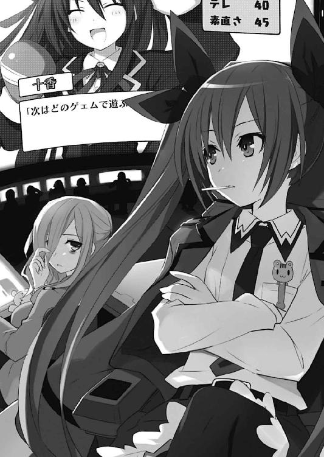
「そう。役立たず」
『............』
「まあいいわ。とりあえずもう少し遊ばせて様子を見ましょ」
と、琴里がそう言った瞬間、画面の中央に、新たなウインドウが表示された。
①クイズゲームを、二人で協力プレイ！
②相性診断ゲームで、二人の絆を再認識！
③プリクラで、思い出を残そう！
そんな選択肢が、画面上に並ぶ。
〈フラクシナス〉の人工知能が十香の精神状態を診断し、状況に即した行動パターンを提案してきたのである。
「──なるほどね。みんなはどう思う？」
琴里がそう言うと、五秒とかからぬうちに、手元の小型ディスプレイに、棒グラフのような画面が表示された。
艦橋にいるクルーが、素早く選択肢を選び、琴里の端末に送信してきたのである。
もっとも多いのは──③。
「ん、みんな私と同意見みたいね」
「①は論外ですね。問題が解けずへそを曲げてしまう可能性があります」
琴里の後方に控えていた副司令の男が、直立したまま声を発する。
「......②も悪くはないのだが、万が一、二人の相性が悪かったなら、気まずい空気が流れてしまいそうだしね。──その点、③は完璧だ。二人だけの記念品が手に入るのはもちろんのこと、写真を撮る際、カーテンで仕切られた密閉空間に二人きりになれるという付加要素までついている」
と、これは令音。
「ん、そうね。──士道、プリクラよ。一緒に可愛いの撮ってらっしゃい」
『......了解。でも俺、プリクラって操作がよくわからんのだが......』
「手順くらい機械に書いてあるでしょ。いいから行きなさい」
『......あいよ』
「──十香、あっちに行ってみないか？」
「ん、いいぞ」
〈ラタトスク〉の指示を受けた士道は、十香をプリクラのエリアに連れて行った。
「？ これはなんだ、シドー」
「ええと......まあ簡単に言うと、面白い写真が撮れる機械だ」
「な......っ」
士道が簡単にすぎる説明をすると、十香が頰を染めて目を見開いた。
「し、写真......だと？」
「ん？ どうした十香」
「......いや、写真というやつは、どうも苦手なのだが......」
「え、そうなのか？」
士道が聞き返すと、十香は顔を真っ赤にしてうなずいた。
「そっか。苦手なら別のにしよう」
「......むう」
しかし十香は、考え込むようにしばらくうなったあと、ためらいがちに唇を震わせた。
「......シドーは、私の写真が欲しいのか？」
「へ......？ や、そりゃあ、まあ......そうなる......のかな」
士道が曖昧に返事をすると、十香は心を落ち着けるように深呼吸をしてから、上目遣いに士道を見てきた。
「......今回だけ。特別だぞ」
「あ、ああ......」
何やらただならぬ雰囲気に気圧されながら士道がうなずくと、十香は『全身プリント』と書かれた大きな機械に入っていった。
と、士道もそれに従って入っていこうとしたのだが、
「......ッ、ち、ちょっと待てシドー。なぜ入ってくるのだ？」
そこで、十香に止められた。
「え？ 二人で入るものじゃないのか？」
「ば、馬鹿を言うな！ 少し待っていろ！」
言うと、十香はカーテンをピシャッと閉じてしまった。
「え、ええと......」
士道は、対応を問うようにインカムをコンコンと小突いた。
『好きにさせてあげなさい。十香の気が済んだら二人で撮ればいいわ』
「ま......それもそうか」
士道は小さくうなずくと、十香が入っていった機械に背を預けた。
......だが、そのまましばらく待っても何も反応がない。
「......なあ琴里、プリクラってこんなに時間がかかるもんなのか？」
『場合によるわ。最近の機種は撮り終わったあとに文字を書き込んだりエフェクトを施したりできるから、凝ったものを作ろうとしたらそれなりに時間はかかるわね』
「はー......すげえもんだな。......でも、十香はどこでそんなやり方覚えたんだ？」
『さあね。十香が写真を撮ったっていったら、〈ラタトスク〉で保護したときに撮ったデータ用のものくらいだと思うけれど......』
と、士道と琴里が会話を交わしていると、機械の外部についていた写真の取り出し口に、印刷を終えたプリントシールが出てきた。
「ん......？ 撮り終わったのか？」
士道は身をかがめてシールを手に取り──
「ぶ......ッ⁉」
顔を真っ赤にして息を詰まらせた。
『どうしたのよ、士道』
「ど、どうしたもこうしたも......ッ！」
士道は手にしたプリントシールを、即座に鞄に隠した。
なぜならそこには──一糸纏わぬ十香の姿が写っていたのだから。
「十香ぁッ！ おまえ一体何を──」
予想外の事態に混乱しながら、カーテンをバッと開ける。
そこで、士道は己の油断を呪った。
だって、つい今し方あんな写真が出てきたということは──
「──ッ⁉」
「な......ッ」
いつもより肌色成分八割増しな十香と目があって、士道は身を凍らせた。
服を着直そうとしていたところなのだろう、下着を穿き、少し前屈みになって黒いニーソックスを膝くらいまで上げている。
他には何も纏っていない。強いていうのなら、美しい闇色の髪くらいのものだった。
「こ、琴里......〈ラタトスク〉で撮ったデータ用写真って──」
『まあ、そりゃ基本全裸よ。──ああ、安心なさい。女性機関員だけでやってるから』
「そ、そういう問題じゃ──」
「し、閉めんか、馬鹿者......ッ！」
「げぶ......ッ！」
士道の顔面に、精霊の一撃が叩き込まれた。
◇
「............」
ゲームセンターの一角で。
折紙は、無言のままＵＦＯキャッチャーのボタンを操作していた。
中にある景品は、無論、士道が欲しいと言っていた、夢パンダのパンダローネストラップである。
色は全部で三種類。普通のパンダカラーとレッドカラー、白と黒の色が逆転したネガカラーだ。
──そう、今日の放課後、偶然士道と友人の会話が耳に入ってきたのだ。
あくまで偶然である。士道の後ろで聞き耳を立てていたり、それが原因で夜刀神十香と口喧嘩をしてしまったなどということはない。断じてない。
「............」
キャッチャーのアームが、ネガパンダローネの頭をかすめるも──落ちる。
しかし、折紙は表情をぴくりとも動かさないまま、次のコインを投入した。
と。
ゲームセンターの奥の方から、ドガッシャァァァァン！ という音が響いてくる。
「──な、なんだなんだ？」
「あ、パンチングマシンとか腕相撲マシンとか壊して回ってるカップルがいるらしいぞ」
「マジで？ 何、彼氏ボクサーとか？」
「いや、壊してるのは彼女の方らしい」
「はあ、なんだそりゃ？」
「............」
──なんともはた迷惑なカップルである。折紙は無言で操作を続けながら思った。
自分と五河士道ならば、きっとそんなことはするまい。
もっとこうすごく平和的に、オープンカフェでお茶とか飲んじゃうに違いない。
「............」
と、そこで、アームがネガパンダローネをがっしと摑む。
そのまま取り出し口の近くまでアームが移動するのだが──途中で、落下してしまった。
無念。しかし、かなり取りやすい位置にきてはいる。次には確実に取れるだろう。
と──次のコインを投入しようとして、指を止める。
手元にうずたかく積んでいたコインが、なくなってしまっていたのだ。
「............」
仕方なく、折紙は両替機に走っていった。
◇
「......すまん」
「いや......こっちこそ、悪かった」
服を着直した十香が申し訳なさそうに言ってくるのに、士道は腫れた頰をさすりながら返した。
「でも......まあ、覚えとけ。写真撮るときに服脱ぐ必要はねえから」
「......ん、覚えておく」
十香が、しょぼんとした様子でうなずく。
『あっはっは、まだ首がついてるだなんて、運が良かったわね士道』
と、耳に琴里の脳天気な声が響いてきた。
抗議代わりにインカムをコンコンと小突き、歩みを進めていく。
『──ま、十香の機嫌がそこまで回復したってことよ。目標は達したわね。あとは不安感の数値さえ何とかなれば言うことなしなのだけれど』
「......不安感、ねえ」
士道は十香に目を向け──首を傾げた。
「──ん？」
十香がいつの間にか、右手にあるＵＦＯキャッチャーに張り付いていたのである。
「十香？ どうした？」
「シドー、これはどうやって取るのだ？」
「ん......それはこのボタンを押してだな」
士道は簡単に操作を説明しながら、ＵＦＯキャッチャーの中に並んでいる景品をちらと見やった。
件のパンダローネストラップが、個別に包装されて散らばっている。
「──と、まあ、こんな感じだ」
「ふむ」
十香はそう言うと、財布から一〇〇円玉を取り出し、投入した。
そして今し方士道が教えたようにボタンを操作し、アームを動かす。
だが──かすりもしない。
「むう、難しいな」
「ま、こういうのは慣れないとな。......欲しいんなら取ってやろうか？」
士道が言うと、十香は首を横に振った。
「いや、それでは意味がないのだ。私にやらせてくれ」
「そっか。──ああ、じゃああれを狙ってみたらどうだ？ 一番取りやすそうだ」
「ぬ？」
士道の指の先を十香が追う。
そこには、白黒が逆転したパンダローネが、絶妙な角度で立っていた。ビニール包装の穴に上手くアームを引っかけることができれば、間違いなく取れるだろう。
「おお！」
十香は目を輝かせると、再度一〇〇円玉を投入した。
そしてボタンを操作し──アームが、ちょうどビニール包装の穴に引っかかる。
「おお、やったぞシドー！」
「ああ、上手い上手い。いい位置だったっつっても、よく二回目で取れたな」
「うむ、ではこれを──」
と、十香はそこで言葉を止めた。
アームが取り出し口の上まで戻ってきたにもかかわらず、景品が落ちて来なかったのだ。
「な、なんだこれは？」
「あー......取れなくなっちまってるな。ま、こういう場合は店員さんにいえば──」
「ふん！」
士道の言葉の途中で、ばぎゃッ！ という音が鳴る。
何の音かを考える必要はなかった。十香がパンチを繰り出し、ＵＦＯキャッチャーのプラスチック部分に穴をあけたのだ。
「......十香」
「ん」
十香は何事もなかったかのようにアームにひっかかっていたネガパンダローネを取ると、満足げにうなずいた。
「うむ、帰るかシドー」
「あ、ああ......そうだな」
◇
「............」
両替を終えてＵＦＯキャッチャーの前まで戻ってきた折紙は、その場で足を止めた。
理由は単純──ついさっきまで折紙がプレイしていた筐体に穴があいており、ついでに折紙が狙っていたネガパンダローネが奪い去られていたのである。
「誰......？」
静かな声音を響かせる。
だが──
「はーい、ちょっとすいませんねー」
そんな声とともに、ゲームセンター内に幾人もの作業員が入ってきたかと思うと、見事な手際で壊れたＵＦＯキャッチャーを運搬用の器具に固定し、店外に運び出してしまった。
そしてすぐに外から、新品の機械が運び込まれてくる。
「はい、では失礼しまーす」
作業員が、コード類を全て繫ぎ終え、景品を入れ直し、動作チェックを済ませる。
──この間、わずか一〇分強。
先ほど謎のカップルに破壊されたという別の機械も、同じように新しいものに交換されていった。
「............」
いろいろ意味不明なところはあったが、今はもっと気にすべきことがある。
折紙は、無言でＵＦＯキャッチャーの前に立ち、無数のパンダローネに視線をやった。
先刻までとは違う、非常にイージーな配置。
これならば──
折紙は静かに目を光らせ、ボタンの脇に五〇〇円玉を積み上げた。
◇
「......それ、そんなに欲しかったのか？」
ゲームセンターからの帰り道。
夕日に染まる街道で、士道は隣を歩く十香にそんなことを聞いてみた。
「ん......」
と。十香は、不意に足を止めた。
「？ 十香？」
士道もつられてその場に立ち止まり、十香の方に顔を向ける。
すると十香が、少し顔をうつむかせながら、手にしたパンダローネを士道に渡してきた。
「へ......？」
「やる。これは、シドーに。だから──いや、だからというのも何だが、なんというか......」
十香にしては歯切れの悪い物言いに、首を傾げる。
「なんだ？」
士道が問うと、十香は意を決するように唇をきゅっと嚙んでから、言葉を続けてきた。
「私のことを......嫌いにならないでくれ」
「は......はぁ？ な、なんだそりゃあ」
士道は、盛大に眉を歪めてから、「あ」と思い返した。
「おまえ、さっきのこと気にしてるのか？」
「ん......それもあるのだが......」
十香は少し黙ってから言葉を続けてきた。
「......シドー、私と鳶一折紙が口論をしていたのを覚えているか？」
「ああ......覚えてるよ」
十香が、いじける子供のように唇を突き出しながら続ける。
「......そのときにな、あいつが、言ったのだ」
「なんて？」
士道が問うと、十香が上目遣いになって士道の様子を窺うようにしながら、たどたどしく続けてきた。
「......精霊が、人間と共存できるはずがない。そもそも、人間が、世界を殺す精霊を許容できるはずがない。だから──」
意を決するように唇を嚙んでから、続ける。
「シドーも、精霊のことなんて、大嫌いだと」
「......はあ」
士道は、ぽりぽりと頰をかいた。
いや、当人は深刻に悩んでいたのだろうし、こういっては何なのだが......正直、脱力した。
十香の不安感の原因とは、そんなことだったのか、と。
......もしかしたら、苦手な写真を撮ると言ったのも、士道に嫌われまいとしてのことだったのかもしれなかった。
「......なあ、シドー、やはり、そうなのか？ シドーも、私のことが──」
「そんなこと、ねえよ」
「......本当か？」
不安そうに、十香が目を向けてくる。
「本当だ」
「本当の本当か？」
「本当の本当だ」
「本当の本当の本当か？」
「............」
士道は少し思案したのち、言葉を続けた。
「少なくとも俺は、嫌いな奴と、その......なんだ、デートしたいとは思わねえよ」
「あ──」
士道が言うと、十香は目を丸くした。
「ん......そう、だな......」
十香はほんのり頰を染めると、口元を小さく綻ばせた。
そんな十香に、士道はネガパンダローネを返してやった。
「だから、これはおまえが持ってな。せっかく自分で取ったんだ。今日の記念に──な？」
「ん......そうする」
十香は、嬉しそうに口をもごもごさせながら、ネガパンダローネを受け取った。
と、そこで、琴里の声が聞こえてくる。
『──七五点。一応合格かしら』
「......そいつはどーも」
◇
翌日。
登校した士道を待っていたのは、仁王立ちした女子の集団だった。
「来たわね変質者」
「死ねばいいのに」
「豚のような悲鳴を上げろ」
「は......はぁ？」
わけがわからず一瞬ポカンとなるが、その中に困り顔の十香がいるのを見つけ、すぐに状況を理解した。
「だから皆、シドーは何もしていないぞ」
十香が、周りの女子たちに向かって言う。
「大丈夫よ十香ちゃん。すぐこの変態性欲男を社会的に抹殺してあげるからね」
「辛かったわよね。痛かったわよね。可哀想な十香ちゃん。あなたの貞操の仇は私たちが取ってあげるわ」
「......というわけで、現状把握のため昨日の出来事をできるだけ詳しく教えてちょうだい。何されたの？ ねえ何されたの？」
女子たちが言うのに、十香がブンブンと首を横に振る。
「違うのだ！ 皆の言っていることはよくわからんが、たぶん何か勘違いをしている！ 私は昨日、ゲェムセンターとやらに連れて行ってもらっただけなのだ！」
『え......？』
十香の言葉に、女子たちが固まる。
そして、昨日の会話の内容を思い起こすように視線を泳がせ──
「......ホント？ 五河くん」
「......ああ。ホントだよ」
『............』
いろいろなことに合点がいったのだろう。女子たちは顔を見合わせたあと、
「あ、あはははは、そうよねえ、五河くんがそんなひどいことするはずないわよねえ」
「わ、私は最初っから勘違いじゃないかなあと思ってたわよ」
「ま、まあ十香ちゃんが無事で何より」
と、一斉に乾いた笑いを浮かべた。
「......ま、誤解が解けたんならいいけどよ」
士道はやれやれと吐息すると、自分の席に着き、鞄の中から一限目に使う教科書を取り出した。
──と、その際、鞄の中からひらひらと何かが落ちる。
「あ、何か落ちたわよ五河くん」
「ん、ああ、悪──」
そこで、士道は顔を引きつらせた。
なぜなら今鞄から落ちたものは──
「──んな......ッ」
それを拾った女子生徒が、息を詰まらせる。
まあ、仕方ないだろう。いきなり十香の全裸写真なぞ見せられれば、誰でもそんな反応をするに違いない。
「何が誤解よッ！ ゲーセンで、ろッ、露出強要とか、より変態指数高いじゃないのッ！」
「ち、違うんだ、これは──」
「問答無用ォォォッ！」
「の、のわ......ッ！」
士道は顔面に飛んできた拳を避けると、そのまま転がるように教室から逃げ出した。
「あっ、シドー！ どこへ行くのだ！」
後方から十香が名を呼んでくるが、振り返っている余裕もない。
きっと止まれば、慈悲も容赦もないリンチが待っている。
「うわぁぁぁ馬鹿したぁぁぁぁ！ なんで入れっぱなしにしてんだよ俺の阿呆ォォォ！」
叫びながら、廊下を駆けていく。
と──
「うごッ⁉」
途中、丁字路のところで、士道は襟元を引っ摑まれ、ガクンと姿勢を崩した。
「けほ......ッ、な、なんだあ？」
一瞬女子たちに捕まったかと思ったが──違う。襟を摑んでいたのは鳶一折紙だった。
「と、鳶一？」
「これ」
折紙は、士道の襟から手を離すと、鞄から何かを取り出して士道に渡してきた。
「え？ これって......」
それは、夢パンダのパンダローネ（レッドカラー）のストラップだった。
「あげる」
「え......や、悪いよ」
「あげる」
「......ええと」
「あげる」
「..................ありがとうございます」
半ば気圧される格好で、士道はパンダローネを受け取った。
すると折紙は、鞄からパンダローネ（ノーマルカラー）のついた携帯電話を取り出した。
「おそろい」
「え......あ、ああ、そうだな......」
「............」
士道がうなずくと、折紙は携帯電話をしまって、教室の方に歩いていった。
「な......なんだったんだ......？」
と、士道が廊下にへたり込んだまま呆然としていると、今度は士道を追ってきたのだろう、十香がパタパタと走ってきた。
「シドー！ 大丈夫か」
「お、おう......」
「もう戻っても平気だぞ。誤解は私が解いておい──と、ん？」
言葉の途中で、十香は士道の手元に視線を送ってきた。
そこには無論、先ほど折紙にもらったパンダローネがある。
「おお！」
十香はポケットを探ると、パンダローネ（ネガカラー）を取り出した。
「おそろいだな、シドー！」
「あ、ああ......」
士道は、頰をかきながら答えた。
士道と、十香と、折紙。
なんともまあ、奇妙なおそろいができてしまった。
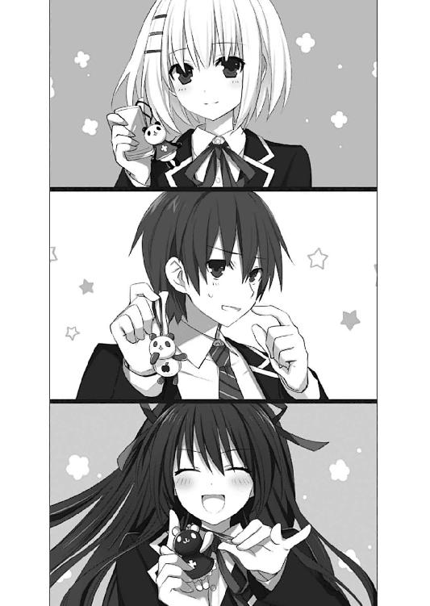
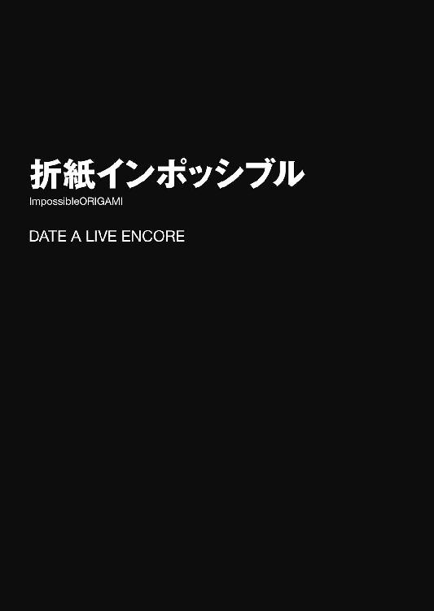
「俺、実はロリコンなんだ」
休日の昼間。街のど真ん中で。
五河士道は、静かにその言葉を発した。
「近所の小学校に出向いて、女子小学生の体育風景を観察するのが日課でな。汚れを知らないつるぺたボディに、俺の〈鏖殺公〉は暴走寸前さ。まったく、小学生は最高だぜ！」
「そう」
一世一代の大カミングアウトに、しかし向かい合った少女──鳶一折紙は、嫌悪の表情を見せることもなく小さくうなずいた。
肩口をくすぐる髪に、細身のシルエット。人形のように端整な顔には、これまた人形のように表情らしきものが見受けられない。
彼女はふっと視線を下に落とすと、ペタペタと自分の慎ましやかな胸元をさすり、再度士道に顔を向けてきた。
「いける」
「何が⁉」
思わず叫んでしまう。......が、狼狽えてはならない。士道はコホンと咳払いをすると、次の言葉を発した。
「実はそれだけじゃない。俺は重度のマザコンでもあるんだ。毎朝ママの写真にキスしてから登校してるんだぞ」
「そう」
「......じ、実はシスコンでもあってだな。いつも妹の琴里と一緒に寝てるんだ」
「そう」
「ぐ......！ く、加えて凄い浮気性でな！ 今だって十股くらいかけてるんだぜ⁉」
「............」
半ば自棄になって叫ぶと、折紙が初めてぴくりと眉を動かした。
手応えアリ......⁉ と思った瞬間、折紙が唇を開く。
「全員根絶やしにすれば問題ない」
「何するの⁉ ねえ何するの⁉」
士道は悲鳴に近い叫びを上げ、頭を抱えた。
と、右耳に装着したインカムから、呆れたような声が聞こえてくる。
『......うわあ、何この寛容さ。世紀末覇者？』
士道の妹・琴里である。声だけだというのに、渋い表情がなんとなくわかった。
「ど、どうしろってんだよ、こんなの......」
『泣き言言うんじゃないの。次よ、次』
言って、またも追加で指示を出してくる。
なんとも奇妙なデート風景。
発端は、昨日のことだった。
◇
ある日の昼休み。
来禅高校の教室で、夜刀神十香が首から下げた携帯電話を嬉しそうに撫でていた。
「ふふ、どうだシドー。琴里にもらったのだ！ 離れていても会話ができるシロモノらしいぞ！」
夜色の長い髪をなびかせ、冗談のように美しい面にいっぱいの笑みを浮かべながら、手に持った携帯電話をビシッと掲げてくる。
「お、おう、そうか。よかったな」
士道は苦笑しながらうなずいた。
......十香が手にしているのは、どう見てもお年寄りをターゲットにした簡易機種だったのだが......まあ本人が喜んでいるのだ。わざわざ水を差す必要もないだろう。
とはいえ、あの携帯電話のことは妹の琴里からいろいろ聞いていた。
あんな形をしてはいるものの、一トンの負荷にも耐える強度を誇っているという話だ。
また、災害時に基地局が壊れてしまった際も衛星を介して通信を行えるようにもなっているらしい。
......正直、ただの女子高生に持たせるには物々しすぎる装備である。
だが──それも仕方のないことであった。
実は十香は人間ではなく、『精霊』と呼ばれる存在なのである。
世界を殺す災厄とさえ言われる、超常的な力を振るう怪物。
今はとある方法で力を封印しているのだが──精神状態が著しく不安定になると、封印されている力が逆流してしまうため、秘匿組織〈ラタトスク機関〉の司令である琴里は、常に気を張っているのである。
もしものときのための通信手段は確保しておかねばならないのだろう。
「よし、シドー！ 試してみるぞ！」
だが当の本人は、そんな物騒な呼び名にはまるで相応しくない笑顔を浮かべると、くるりと身体の向きを変えた。
「今から私が遠くに離れて電話をかけるから、シドーはそれに出てくれ！」
「ああ......なるほど。わかったよ」
士道は苦笑しながら首肯した。士道が初めて携帯を手に入れたときも、十香と同じように電話をかけたくて仕方なかった気がする。
「よし、では行ってくる！」
言って、十香は教室の扉を開けると、廊下に駆け出していった。
「昼休み終わる前には帰ってこいよー」
「────わかったー！────」
廊下の向こうから、小さな声が響いてくる。
と──その瞬間。
「──士道」
「うおッ⁉」
すぐ背後から名を呼ばれて、士道はビクッと肩を揺らした。
後方に目をやる。そこには、クラスメートの鳶一折紙が音もなく現れていた。
......まるで、十香がいなくなるのを見計らっていたかのようなタイミングである。
「な、何か用か、折紙......」
「明日、何か予定はある？」
「え？」
急にそんなことを言われ、士道は素っ頓狂な声を発した。......同時に、何かいやーな予感が背筋を走り抜ける。
「な、何でまた......」
「一緒に街を歩きたい」
「そ、それってつまり......」
「デート」
「............」
予想通りの単語に、士道は汗を垂らした。
「......折紙。確認するんだが俺たちって──」
「恋人」
「......ですよねー」
恥じらう様子すらなく淡々と言う折紙に、士道は乾ききった声で返した。
やはり、まだ先の告白があとを引いている。
折紙はそんな士道の様子を気にすることもなく、落ち着いた調子で言葉を続けてくる。
「どう？」
「わ、悪いんだが明日は──」
だが。士道は途中で息を詰まらせた。
凄まじいプレッシャー。気の弱い人間ならば、視線だけで気絶させられるのではないだろうかと思えるほどの迫力だった。
「や、その......だな。よ、予定を確認してみるから少し待ってくれるか......？」
折紙がこくりとうなずく。
士道は慌てるように小走りになって廊下に出ると、携帯電話の着信履歴から『五河琴里』の名を選択した。
十香からの電話を待っている状況ではあるが......十香から着信が入れば割り込み通話に切り替わるはずである。問題はないだろう。
数秒のコール音のあと、吞気な声音が電話口から聞こえてくる。
『もしもーし、おにーちゃん？』
「......琴里。頼む、知恵を貸してくれ」
『え？ どしたの？』
「......折紙にデートに誘われた」
『............』
士道が言うと、琴里はしばし無言になった。
次いで、電話口からするするという衣擦れの音が聞こえてくる。そう──まるで、髪を括ったリボンを付け替えているような。
『──まったく、まだうだうだやってるの？』
次の瞬間聞こえてきたのは、先ほどと同一人物とは思えない、高圧的な語調だった。
──琴里の、司令官モードである。
「......っ、も、もとはといえばおまえらの『訓練』が原因じゃねえか......っ！」
そう。十香が現れたとき、『女性に慣れるための訓練』と称して、士道は琴里たちに指示され、折紙に愛の告白をさせられていたのである。
しかも誤解を解く前にいろいろと事件が起きてしまい──そのまま今に至っている。
『面倒ねえ。無視しておけばいいじゃない』
「っ、そんなことできるかよ......。もともと悪いのはこっちなんだぞ。このままあいつの気持ちを弄んだままでいいわけがねえだろ」
『律儀なんだから。──なら、ちゃんとあの告白は間違いだったって伝えれば？』
「......どうやって」
『んー？ 唾吐き捨てて、「俺はおまえとなんて付き合ってねーよ勘違いしてんなメンヘラ」って言えばいいんじゃない？』
「今度は意図的に風穴あけられるわ！」
たまらず、叫ぶ。そんなことを言ったら冗談抜きで殺されそうだった。
『まったく、贅沢ねえ。──じゃあ、そうね、向こうに士道のことを嫌ってもらえば？』
「え？」
『だから、あえてそのデートを受けるのよ。──〈フラクシナス〉のＡＩの設定をいじって、最低最悪のデートになるような選択肢を用意してあげる。彼女が怒って帰っちゃうような、ね。向こうから嫌ってくれるなら何も問題ないでしょ？』
〈フラクシナス〉とは、琴里たち〈ラタトスク〉が所有する空中艦のことである。
通常、精霊が現れたときは、この艦の人工知能が選択肢を提示し、それに沿って精霊の好感度を上げていくのだ。
「な、なるほど......」
確かに理に適っている。もしかしたら平手打ちの一発くらいもらうかもしれないが、それくらいは甘んじて受けなければならないだろう。
「......わかった。サポートを頼めるか？」
『ええ。今後のことを考えたら、鳶一折紙に付きまとわれたままってのも問題だしね。──ただ、そうなると一つ懸案事項があるわ』
「懸案事項？」
『十香よ。明日は土曜で休みでしょう？ 放っておいたら十香はまず間違いなくうちに遊びに来るわ。そのとき士道がいなかったら機嫌メーターが下がっちゃうでしょ』
「別に俺なんていなくても......」
士道が言うと、琴里は呆れたように『はふゥ』と吐息を返してきた。
「な、なんだよ」
『別に。──とにかく、作戦を決行するためには、十香に別の用事を与える必要があるわ』
「別の用事......か」
『ええ、それこそ、買い物でもなんでも構わないわ。......一つか二つ、わかりづらいものを頼んで時間をかけさせたりしてね。とにかく、日中士道と一緒にいない状況に違和感を覚えさせなければいいわ』
「む......」
『──ま、とにかく、まずは鳶一折紙の方に了承を示しなさい』
「ん......わかった」
士道は電話を切ると、恐る恐るといった調子で教室に戻った。
そこには折紙が、先ほどとまったく変わらない直立姿勢を保って立っていた。
「どう？」
「お、おう......大丈夫だった」
「............」
折紙は無言、無表情のまま、グッ！ とガッツポーズをとった。
「お、折紙......？」
「明日の午前一〇時、西天宮公園のオブジェの前で待っている」
折紙はそうとだけ言って、去っていった。
なぜか、軽快なスキップで。
「............」
と、士道が頰に汗を垂らしていると、教室の外から凄まじい足音が響いてきた。
すぐに教室の扉が開き、走ってきたらしい十香が顔を出す。
「シドー！ こ、これはどう操作するのだ⁉」
どうやら電話のかけ方がわからなかったらしい。困ったような顔で問いかけてくる。
が、そこで自分よりも困り顔を作った士道に気付いたのだろう、十香が不審そうに首を傾げた。
「シドー？ どうかしたのか？」
「！ い、いや......」
わざとらしく咳払いをして、椅子に腰を落ち着ける。
「と......そうだ、十香」
「ぬ？ なんだ？」
「突然で悪いんだが......明日、ちょっとお使いを頼まれてくれないか？」
言うと、十香は目をキラキラと輝かせた。
「おお⁉ いいぞ、何をすればいいのだ⁉」
もう、士道の役に立てるのが嬉しくて仕方ないといった様子で、士道の机に身を乗り出してくる。
なんだか良心がチクチクと痛んで、士道は気まずげに視線を逸らした。
◇
翌日。士道は十香にお使いを頼んだあと、右耳にインカムをつけて折紙との待ち合わせ場所に向かっていた。
ちなみに今の士道は、よれよれのＴシャツにすり切れたジーンズ、足には便所サンダルという、やる気が微塵も感じられない服装だった。
正直士道も少し恥ずかしいのだが......女の子は不潔でだらしない男が嫌いなのだ。最初から折紙のテンションを落とす方法としては、なかなかの上策といえた。
『士道。もう少しゆっくり歩いていいわよ』
と、右耳に装着したインカムから琴里の声が響いてくる。
今琴里は天宮市上空に浮遊した空中艦〈フラクシナス〉の艦橋にいるはずだった。
ちなみに今の時刻は一〇時五〇分。もう約束の時間を五〇分は過ぎてしまっている。
『最低一時間は遅れなさい。あと、何を言われても絶対に謝らないこと』
「はあ......」
なかなか徹底していた。まあ確かに、そんな盛大な遅刻をされれば間違いなくムッとするだろう。人によっては既に帰ってしまっている可能性だってある。
できるだけのたのたと歩き、一一時くらいに、待ち合わせの場所までたどり着く。
すると、その場にビシッと直立した折紙の姿が目に入った。
「う......」
近くにベンチもあるというのに、立ったまま士道を待ちつづけていたであろう折紙に、早くも心が痛む。
だが、そんなことではいけない。士道は今日、折紙に愛想を尽かされるような最悪の人間を演じねばならないのだ。
『さ、心の準備はいい？』
「お、おう」
『よろしい。──作戦を開始するわ。まずはミッション１、ファーストコンタクトよ』
琴里がパチンと指を鳴らす。
士道は軽く頰を張ると、歩調を速めないまま折紙の方に歩いていった。
と、そこで折紙も士道に気づいたのだろう、こちらに顔を向けてきた。
そして、
「──よかった」
士道の顔を見るなり、そう言った。
「へ......？」
「何かあったのかと思った」
「............ぅ」
悪いのは遅れた士道だというのに、不満を漏らすどころか士道の身を案じてくれていたらしい。
『何やってるのよ士道。そんなので心痛めてちゃ話にならないわよ』
「あ、ああ......そうだな」
と、士道が小さくうなずくと、折紙がスカートの裾を摘んでみせた。
「どう思う？」
「え？」
「今日の服」
言われて、士道は折紙の全身を見直した。
肌触りの良さそうなブラウスにフレアスカートという装いで、首元には小さなネックレスが光っている。やる気のない士道の格好とは対照的な服装だった。
「あ、ああ。よく似合って──」
『ちょっと、何普通に褒めようとしてるの』
「......っ！」
琴里に咎められて、士道は言葉を止めた。
咳払いをしてから、首を小さく振る。
「いや......ぜ、全然似合ってないな......！」
「............」
折紙が、無言で自分の装いを見下ろす。表情は変わらないのに、どこか寂しげに見えた。
と、折紙が再び士道に顔を向けてくる。
「どんな服装ならいいと思う？」
「え......？ そ、そうだな......」
士道が答えようとした瞬間、右耳から琴里が割り込んできた。
『──待ちなさい。早速チャンス到来よ。一発キツイのをお見舞いしましょうか』
言って琴里が、ふふんと鼻を鳴らした。
〈フラクシナス〉艦橋のメインモニタには今、折紙の姿が映し出されていた。
側部には各種パラメータ、下部にはテキストウインドウが表示され、まるでギャルゲーの画面のようになっている。
と──そこに、三つの選択肢が現れた。
①マイクロビキニにメイドエプロン。
②上セーラー服下ブルマ。
③スクール水着に犬耳＆尻尾。
「うっわ、さすがにアレな選択肢ばっかね」
口にチュッパチャプスをくわえ、深紅の軍服を肩がけにしながら艦長席に腰掛けていた琴里は、盛大に眉を歪めてメインモニタを見やった。
「──総員、選択！ 男に言われて一番気持ち悪いと思う返答を選びなさい！」
琴里が言うと、すぐに手元の小型ディスプレイに集計結果が表示された。
競り合ってはいるが......もっとも多いのは③である。
「ふむ、③が優勢か」
琴里が選択肢を伝えると、画面の中で士道が小さく肩を揺らした。
琴里から提示された選択肢は、なんとも士道の趣味が疑われそうなものだった。
......だが、言わねばならない。士道はごくりと唾液を飲み下すと、震える唇を開いた。
「......す、スクール水着に犬耳と尻尾かな」
言い終わると同時、士道は歯を食いしばって目をキュッと閉じ、全身に力を入れた。
......無論、いつ平手打ちや鉄拳が飛んできてもいいように。
だが士道の予想に反して、いつまで経っても打撃の痛みは響いてこない。
ゆっくりと目を開くと......そこにはもう、折紙の姿はなくなっていた。
どうやら、怒って帰ってしまったらしい。
『──あら、意外と簡単だったわね。おめでとう士道。ミッションクリアよ』
「あ......ああ。ありがとう」
士道はなんとも複雑な気分で頰をかいた。
いや──だが、これでよかったのだ。折紙だって、士道なんかに構っているよりも──
と、そこで。士道は思考を停止させられた。
遠くから、折紙が走ってきたのである。
──一体どこから調達してきたのだろうか、スクール水着姿で、犬耳と尻尾をつけた折紙が。
『な......っ⁉』
士道と琴里の声が重なる。
しかし折紙は士道の前まで来ると、平然とした様子で首を傾げた。
「どう？」
言って、その場でくるりと回ってみせる。
彼女の白く華奢な肢体を紺色の布地が包み、ついでに可愛らしい耳と尻尾が揺れる。......なんとも背徳的な愛らしさがあった。
しかし、それより先に気になることがある。
「一体どこでそんな服......」
「近くにその手のお店がある」
言って、街の方を指さす。......なんだか知りたくない街の裏事情を知ってしまった。
「そろそろ」
と、折紙が身体の向きを変え、商店街の方を指し示した。
「え、ええと......」
こんな格好のまま行ってしまっていいのだろうかと士道が悩んでいると、再び琴里の声が響いてきた。
「......っ、なんであれで好感度が下がらないのよ。どんなイージーモードだっての」
〈フラクシナス〉の艦長席にふんぞり返った琴里は、チュッパチャプスの棒をぐりんぐりん動かしながら忌々しげに言った。
「ど、どうしましょう、司令......」
「次よ次！ 鳶一折紙がドン引きするようなエグい選択肢出しなさい！」
琴里が言うと、再び選択肢が表示された。
①「あ？ 雌犬風情が人間様と同じ目線で歩くなんておこがましいんだよ。這い蹲りな」
②「やーだー、歩くのつーかーれーたー！ おーんぶー！」
③「いや、ちょっとマジで、もうちょっと離れて歩いてくれません？ 気持ち悪いんで」
「......ふっふ、いいじゃない。どれもこれもムッカつくわあ。総員、選択なさい！」
すぐさま、琴里のパーソナルディスプレイに集計が表示される。
「一番多いのは①──か」
「まあ人間性疑いたくなるような言動ばっかりですけど......特に①は酷いでしょう」
艦橋下段からクルーが言ってくる。琴里は「そうね」と首肯した。
「自分が言うのはいいけど、士道になんて言われたらブチ殺したくなるわね」
「............」
なぜかクルーが黙りこくったが、琴里は構わずマイクを引き寄せた。
「な......」
右耳に琴里からの指示が飛んできて、士道は顔を青くした。......先ほどよりもさらに難易度が上がっている。
『何躊躇ってるのよ。嫌ってもらおうとしてるんだから、これくらいやらないと。それとも何？ 綺麗に彼女との関係だけが解消できるとでも思ってるの？』
士道は「ぐ......」と小さくうめいた。確かに琴里の言うとおりである。折紙に嫌われるのが目的だというのに、自分の保身など考えていては仕方ない。
士道は隣を歩く折紙の方に目をやり、震える唇を開いた。
「......めっ、雌犬風情が人間様と同じ目線で歩くなんて、お、おこがましいんだよ。這い蹲りな......っ！」
士道が言うと、折紙がぴくりと眉の端を動かした。
さすがにこれには腹が立ったようだ。士道は小さく拳を握った。──だが。
「............」
折紙は無言のまま膝を折ると、その場に四つん這いになった。
「え......ええッ⁉」
『な、なんですって......⁉』
五河兄妹が再び同時に驚きの声を発する。
しかし折紙は不思議そうに首を傾げると、士道の顔を見上げてきた。
「行かないの？」
「や、えっと、その......」
士道がしどろもどろになっていると、折紙は何かに気付いたように小さくうなずき、身体を起こしてきた。
そして、士道の腰辺りに手を回すと、士道のベルトをカチャカチャと外し始める。
「な......何してんだ折紙！ い、いや！ やめてぇぇぇぇっ⁉」
乙女のような悲鳴を上げるが......折紙は手を止めず、革製のベルトを士道のジーンズからするすると抜き取った。
そしてそれを自分の首に巻き、きゅっ、と締めて首輪のような形にすると、ベルトの端を士道の手に握らせてくる。
そして、
「わん」
なんて鳴いてみせる。
辺りの通行人たちから、異様なものを見るような視線が注がれた。
「......やあねえ、こんな明るいうちから」「うわあ、本当にいるんだあんなカップル」「いや、何かの撮影だろ？」「ねーねーママー、あのおねえちゃん『わん』だってー。お犬さんなのー？」「み、見ちゃいけませんっ！」
「............」
士道は顔中にだらだらと汗を流し......スンマセンでした今のは冗談ですと土下座した。
◇
商店街の真ん中で。
「よし、次は何だ......？」
十香は手にしたメモを見つめ、うなった。
左手に提げたエコバッグには、既に士道に頼まれた食料品がいくつか詰め込まれている。初めて一人で任されたお使いにしては、なかなか順調な出だしと言えるだろう。
「......さーたーあんだぎー？ なんだこれは」
聞き覚えのない言葉に眉をひそめる。何かよくわからないがとても強そうだった。
と──十香が商店街をうろつきながらそれらしきものを探していると、不意に後方から声がかけられた。
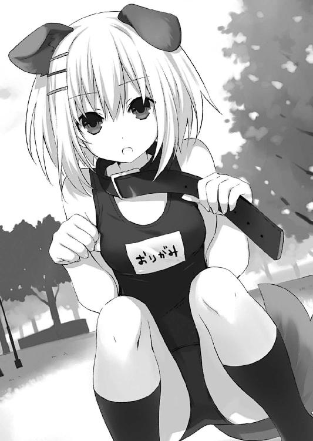
「あーっ、ねえちょっと君。そそ、そこの可愛い女の子。ちょーっとだけいいかな」
「ぬ？」
後ろを振り返ると、やたら派手なスーツを着込み、これまた派手なヘアースタイルをした男が立っていた。
◇
「......これは、難物ね」
チュッパチャプスの棒をぴこぴこ動かしながら、琴里は渋面を作ってうめいた。
デートが始まってからおよそ三時間。
悪口を浴びせたり、異常性癖をカミングアウトさせたりしているのに、鳶一折紙の好感度は一向に下がっていないのだった。......それどころか、たまに上昇さえしている。
メインモニタには、カフェのカウンターで飲み物を注文する二人の様子が映し出されていた。疲弊した様子の士道に対し、折紙は先ほどから微塵も表情を変えていない（ちなみに、服装はもとに戻っている）。
「く......少し方向性を変えてみましょうか」
琴里が言うと同時、またも画面に選択肢が表示される。
①いきなり胸を揉む。
②顔に唾を吐きかける。
③スカートを捲り上げる。
「言葉で駄目なら行動ね。総員、選択！」
すぐに手元のディスプレイに、集計結果が表示される。
最も多いのは──③。
「......まあ、公衆の面前でこんな非常識なことをすれば、さすがに少しくらいは好感度下がるわよね......？」
琴里はマイクを引き寄せた。
「......ま、マジかよ」
右耳に響いてきた指示を聞いた士道は、ごくりと唾液を飲み込んだ。
『いいから、やりなさい。これくらいしないと彼女の好感度は揺らぎもしないわ』
「い、いや......さすがにそれは......」
と、そこで士道は後方を歩く客にぶつかられ、バランスを崩して前に倒れ込んでしまった。
「うお......っ⁉」
咄嗟に体勢を保とうとするが──無駄だった。顔をしたたかに打ち付けてしまい、鼻をさする。
「っててて......」
『よっし！ やるじゃない、士道』
「あ？ 何が......」
と、士道はそこで気付いた。片手に、何やら見覚えのあるひらひらした布を摑んでいることに。
「............」
いやーな予感を覚えながら、ギギギ......と顔を上に向ける。
すると、華奢な折紙の白い足と、可愛らしい意匠の施された下着、ついでに右足にくくりつけられたレッグホルスターが見えた。
どうやら、倒れ込む際に折紙のスカートを見事にずり下ろしてしまったらしい。士道は顔中にぶわっと脂汗を浮かべた。
「あ、あのだな折紙、これは......」
が、折紙は至極落ち着いた様子で、たった一言、
「ここで、するの？」
「......ッ⁉ な、何を......⁉」
士道は慌ててスカートを元の位置まで戻した。
折紙はそれを少しだけ残念そうな心地で見やると、再びカウンターに視線を戻した。
『......こ、これでも動じないの？』
右耳に、琴里の苦々しい声が聞こえてくる。
「ど、どうすりゃいいんだこれ......」
と。もう何をしても駄目なんじゃなかろうか、と額に手をやって頭を振った瞬間。
右耳から、ビーッ！ ビーッ！ というアラームが聞こえてきた。
『──っ、ち、面倒な......』
「な、何だぁ？ 何かあったのか？」
士道は身体をビクッと震わせると、インカムに向かって問いかけた。
『そっちじゃないわ。......十香の方よ。一応買い物に出かけた十香の方もモニタリングしてるんだけど......どうやら、変な男に話しかけられてるみたい。ナンパか客引きかしらないけど、面倒なことをしてくれるわね』
「な......」
士道は眉をひそめた。
世間知らずな十香のことである。言葉巧みに騙されて、何か危ないことに巻き込まれてしまう可能性がないとはいえなかった。
......いやまあ、そりゃあ本気の十香にかかればそんな男一瞬で消し炭なのだが、それはそれで非常にマズい気がする。
「ど、どうにかしないと......！」
『わかってるわ。機関員を派遣してもいいけれど......できるだけ〈ラタトスク〉がかかわっていることを勘付かせたくないのよね』
琴里はふうむとうなってから言葉を続けてきた。
『──士道、あなたのつけてるインカムを十香の携帯に繫ぐから、危ないことはするなって引き留めてくれる？』
「お、俺がか......？」
『士道が言うのが一番手っ取り早いでしょ。お願いね』
「ちょ──」
士道が言い終わる前に琴里の声が途切れ、それと入れ替わりになるようにして、電話のコール音が響いた。
数秒後、十香の声が聞こえてくる。
『も──もしもし、だったか？ 誰だ？』
「っ、十香か。俺だ、士道だ」
『シドーか！ おお......本当に会話ができるのだな......！』
十香が、弾むような声を発してくる。
「十香、今おまえ何してるんだ？」
『ぬ......何やら見知らぬ男に話しかけられてな。給金の高いバイトとやらをやらんかと言われているのだが......』
「............」
士道は無言で頰をぴくつかせた。
『何でも、簡単なサービスをするだけで沢山金子がもらえるらしいのだ。メイシという綺麗な紙ももらったぞ。やってもいいか？』
「だ、駄目だ！ 断れ！ それも返せ！」
思わず声を張り上げてしまう。
『む......そうか。士道がそう言うならそうしよう。──おい、おまえ、今の話はなしだ』
「はぁ......」
危ないところである。士道は額に滲んだ嫌な汗を拭った。
と、そこで、目の前にオーダーを終えた折紙が、カップの二つ載ったトレイを持ちながら立っていることに気付く。
「あ──」
「............」
折紙は無言でうなずくと、並んでいる人たちを押しのけ、再びカウンターの方に歩いていった。
「お、お客様......？」
「これを返品してほしい」
「え、いや──飲食物の返品は......」
折紙に詰め寄られ、店員が困った顔を作る。
どうやら、士道が大声を出したものだから、自分が話しかけられたものだと勘違いしてしまったらしい。慌てて声を上げる。
「そ、それは返さなくていいから！」
「......？ いいの？」
折紙が振り返って言ってくる。士道は首肯して「ああ」と返した。
だがその瞬間、
『なんだ、いいのか。──おい、やっぱりやれそうだ。もう一度メイシとやらをくれ』
なんて言葉が右耳に聞こえてきて、士道は慌ててのどを震わせた。
「だ、駄目だ駄目だ！ 何があっても絶対に拒否しろ！」
『む......わかった』
十香が素直に答える。
「わかった」
──だが、その言葉に折紙までもがこくりとうなずくと、トレイをカウンターに叩きつけ、スカートの中から９㎜拳銃（モデルガンだと信じたい）を抜いて店員に突き付けた。
「おとなしく返品に応じて」
「え......？ あ......え......っ？」
店員が呆然とし、周囲の客たちが騒然とする。士道は泡を食って止めに入った。
「や、止めろ！ そんなことしなくていい！」
『ぬ、そうなのか？』
と、右耳から十香の声が聞こえてくる。
士道は頭をかいて叫びを上げた。
「あーもうおまえら何もしないでくれッ！」
◇
時刻は午後三時三〇分。
一通り買い物を終えた十香は、公園のベンチで一休みをしていた。
休日だけあって商店街は賑わっていたが、通りを一つ隔てたこの公園には、心地よい静けさが漂っていた。まさに休憩にはもってこいの場所である。
士道にもらったお小遣いで買ったジュースをぐいと飲んで、ぷはぁ、と息を吐く。
そして品物の詰まったエコバッグに視線を落とすと、十香は満面の笑みを浮かべた。
「うむ......きっとシドーも褒めてくれるな！」
お使いをきっちりとこなし、ついでに士道の言うとおり男の誘いも断った。家に帰ったら、頭を撫でてくれるかもしれない。
「あ......」
と、そこで十香はメモを取りだした。
そういえば一つだけ、まだ買っていないものがあったのだ。
そう。正体の知れぬ『さーたーあんだぎー』とやらである。
「ううむ......これはどうしたものか......」
十香は腕組みしてむむうとうなり──数秒後、頭の上に電球をぺかー、と光らせた。
「そうだ！ こういうときこそ......」
言いながら、携帯電話を手に取る。
そう、わからないのなら、士道に直接訊けばいいのだ。
「ええと、確かさっきシドーから電話があったから、チャクシンリレキ......だったか？」
十香はベンチに携帯を置くと、両手の人差し指でそろそろとボタンを押していった。
◇
「はぁ......」
午後三時三〇分。士道はだらりとカフェの椅子にもたれかかっていた。
無論、先ほどのカフェとは違う店だ。
あのあと士道は折紙を連れて逃げるように店を出て、しばらくの間街を練り歩き──この店にたどり着いたのである。
『......こうなったらもう、最後の手段よ』
琴里が、ため息混じりの声を響かせてくる。
「......最後の手段？」
『ええ。少し彼女から距離を取ってくれる？』
「？ あ、ああ......」
士道は折紙に、「ちょっとトイレに行ってくる」と言い残すと、椅子から立ち上がってトイレの前まで歩いていった。
「......で、なんだよ、最後の手段って」
ここまで来たなら、もう声をひそめる必要もない。士道は琴里に問いかけた。
『もう何となくわかってるとは思うけれど......彼女の好感度を下げるのは至難よ。とんだ化け物だわ。脳内構造を覗いてみたいくらい』
「......そ、そうみたいだな」
『──だから、一度前提条件を変えてみましょう。もういっそのこと、彼女の誤解を受け入れるのよ』
「っていうと......？」
『士道が本当に鳶一折紙の恋人になるの』
「は──はぁっ⁉」
士道は思わず叫びを上げていた。
『最後まで聞きなさい。──つまり、付き合っている、っていう前提を受け入れた上で、別れ話を切り出すのよ。「別れよう、おまえのことが好きじゃなくなったんだ」ってね』
「......っ、む、むう......」
士道は頰に汗を滲ませながらうめいた。
緊張で渇くのどに、唾液を流し込む。
──いや、だがこれは結局避けては通れない道だったのだ。
琴里たちの指示があったとはいえ、士道が折紙を騙してしまったのは事実なのである。
それを『折紙から嫌ってもらおう』だなんて、虫がよすぎたのだ。
士道は、折紙のことが好きだ。──いい友人であるし、素直に尊敬できる人物だと思う。
だが──いや、だからこそ。
中途半端な気持ちでこんな関係を続けてしまうのは、折紙に失礼である気がしたのだ。
「......わかった。そうだよな。それがけじめってもんだよな」
士道は気分を落ち着けるように大きく深呼吸をすると、頰を数回叩いた。
......しかし心臓はバクバクと鳴り、指先は震え、顔には汗がびっしりと浮かんでくる。
『落ち着きなさい。......って言っても無理か。せめて大事なところで嚙まないようにね』
「あ......ッ、ああ、そ、そうだにゃ」
『いきなり嚙んでるじゃない』
「う......」
士道は頭をくしゃくしゃとやり、わざとらしくゴホゴホと咳払いをした。
『まったく......距離を取らせて正解だったわね。ちゃんと口が回るように、練習してから席に戻りなさいよ』
「お、おう......」
士道は壁に向き、ボソボソと唇を動かした。
「──別れよう。俺......おまえのことがもう好きじゃなくなっちまったんだ。別れよう。俺......おまえのことがもう好きじゃなくなっちまったんだ。別れよう。俺......おまえのことがもう好きじゃなくなっちまったんだ」
『な──、ほ......本当か......？』
「──ああ、もう終わりにしてほしい」
『そ、そんなのはいやだぞ！』
「わかってくれ。もう俺に......おまえに対する気持ちは残ってないんだ」
『わ、私のことが嫌いになったのか......？』
「ああ。おまえのことが嫌いになったんだ」
と──
「......んん？」
士道は違和感に首をひねった。
なんだか、やたらと軽快な合いの手が入った気がする。
『シ......ドー......』
と、そこで。士道はようやく右耳に響く声音が、琴里のものでないことに気づいた。
聞き慣れた声。間違いなく──十香。
『う......ぅ、ぅぅぅぅぅうううううううううううううううぅぅぅぅ......ッ！』
「な──ななななな、なんで十香......ッ⁉」
と、十香の声に割り込むようにして琴里の声が響いてきた。
『──馬鹿、何で回線切っておかないのよ！』
『す......すいません......ッ！』
次いで〈フラクシナス〉のクルーと思しき男の声が聞こえてくる。
だが、士道が聞き返す前に、遠くから凄まじい爆発音が響き、建物がグラグラと揺れた。壁がミシミシと軋み、天井からパラパラと建材の破片が落ちてくる。
「な......っ、こ、これは──」
一瞬地震かとも思ったが......違う。
まるで、どこかで爆弾でも爆発したかのような衝撃だった。
『十香よ！ 精神状態が一気に下落！ 精霊の力が恐ろしい勢いで逆流してるわ！』
「な──なんだって⁉」
『く......こっちのミスだわ。十香との回線を切るのを忘れていたものだから、十香が士道に電話をかけた瞬間、また通話状態になっちゃったのよ！』
琴里が叫ぶように言った瞬間、またも店の外で凄まじい音が鳴った。
あちこちから悲鳴が響き、逃げまどう人々の地鳴りのような足音が聞こえてくる。
「ど──どうすりゃいいんだよ、これ......ッ！」
『とにかく、十香の機嫌を直すしか手はないわ！ 今のは冗談だって伝えて！』
「お、おう......！」
士道は慌ててインカムに手を添えると、のどを震わせた。
「十香！ 聞こえるか！ 十香！」
だが、応答はない。またも爆発音が響き、店の壁がビリビリと揺れた。
『く──駄目か。仕方ないわ、士道、直接十香のもとに向かってちょうだい！』
「でも、折紙が......」
『今はそれどころじゃないわ！ 急いで！ 商店街を抜けたところにある自然公園よ！』
「わ、わかった......ッ！」
士道は拳を握ると、店の外に駆け出した。
突然の事態に、街は騒然としている。
悲鳴とざわめきが溢れ、通行人たちが一方向に流れるように逃げていた。
理由はすぐにわかった。公園のある方から、もくもくと煙が上がっているからだ。
「あ、あれか......！」
予想以上に大事になってしまっている。士道は人の波を避けるように路地裏に入ると、全速力で目的地へと向かった。
幸い、士道たちのいたカフェと十香のいる公園との距離は、さほど離れていなかった。
......まあ、デート中に遭遇してしまうリスクがあったことを考えると、あまり幸いとも言えないのかもしれないが。
「......っ！」
と──士道はそこでポケットに入れていた携帯電話が震えるのを感じた。
もしかしたら十香かもしれない。走る速度を緩めないまま携帯を取り出し、電話に出る。
だが、電話口から響いてきたのは、折紙の無機的な声だった。
『──士道、どこにいるの』
「っ、折紙。悪いんだが、少し待って──」
言いかけたところでまたも爆発音がして、士道の前に瓦礫がバラバラと落ちてきた。
「うお......ッ⁉」
どうにかそれをかわし、走行を続ける。
折紙には悪いが、話をしている暇はない。携帯をポケットに放り込み、速度を上げる。
そして──
「な......っ」
公園の敷地に入った士道は目を見開いた。
広大な自然公園の一角が、隕石でも落ちたかのように抉れている。
まるで──精霊がこの世界に現れた際に起こる災害・『空間震』のような有様だった。
そしてその真ん中に、うずくまりながら時折肩を揺らす少女の姿があった。
「十香......っ！」
叫び、抉り取られた地面を、転びそうになりながら走っていく。
そこでようやく、十香も士道の存在に気付いたらしい。ビクッと肩を震わせると、怯えるような顔を向けてきた。
「し、シドー......」
涙でぐちゃぐちゃになった顔で、士道の名を呼ぶ。
「......っ」
士道は息を詰まらせそうになりながらも、のどを震わせた。
「さ、さっきのは──冗談だ！」
「え......？」
士道の言葉を聞くなり、十香は目を見開いてキョトンとした顔を作った。
しばしの間考えを巡らせるように呆然としてから、服の袖で涙を拭い、再び士道に顔を向けてくる。
「ほ......ほ、本当......か？」
そして、士道の様子を窺うように、か細い声を発してくる。
「あ、ああ」
「私のことを......嫌いになっていないか？」
「と、当然だ！ 嫌いなわけないだろ！」
「ほ、本当か⁉ で、では......離ればなれにならなくてもいいのか⁉」
「お......おう、もちろんだ」
「ずっと一緒でもいいのか⁉」
「あ......ああ、ずっと一緒だ‼」
少し安請け合いかなあとも思ったが、とにかく今は十香の気を静めねばならない。士道はうなずきながら、今までで一番大きな声でそう言った。
十香はずずっと鼻水を啜ると、その場に立ち上がった。
「そ......そうか。う、うん、そうだな！」
十香は心底安心したように言うと、傍らに落ちていたエコバッグ（なぜか傷一つなかった）を持ち上げ、士道に示してきた。
「ど、どうだ......？ ちゃんと買い物もできたのだぞ！」
「お、おう！ すげえじゃねえか！」
「えへへ......」
士道が言うと、十香は得意げに微笑んだ。
だがそこで、右耳に琴里の声が響いてくる。
『はあ......よくやった──と言いたいところだけど、まずはそこを離れてくれる？』
「え......？」
琴里の言葉に眉をひそめる。......だが、理由はすぐにわかった。
辺りから、消防車やパトカーのサイレンが鳴り響いてきたのである。このまま爆心地にいては、面倒なことになってしまうだろう。
「と、十香！ 少しあっちに行こうか......⁉」
「む......？ うむ、わかった」
士道が言うと、十香は素直にうなずいた。
◇
「はぁ......」
とりあえず危機は脱したようである。
士道は十香を伴って公園から離れ、ようやく放念の息を吐いた。
「どうしたのだ？ そんなに急いで」
「あー......まあ、いろいろあるんだよ」
はは......と笑い、不思議そうに言ってくる十香に返す。
だが──それから数秒の間もおかず、士道は再び、凍り付くことになった。
理由は単純明快。いつの間に現れたのか、目の前に、鳶一折紙の姿があったのである。
「............」
「‼ お......折紙？」
「ぬ」
士道が全身をビクッと震わせると、十香が不機嫌そうに腕組みした。まあ、それも無理はない。十香と折紙は犬猿の仲なのである。
しかし折紙の方は、珍しく十香に嫌悪感を示さなかった。
いや、正確に言うと、いつになく熱っぽい視線で（まあ、表情は変わっていないのだが）士道を見つめてきていたのである。
「折紙......？ どうした？」
言いながらも──士道の心中には、先ほど感じたのと似たような、いやーな予感が広がっていた。
果たしてその予感は正しかったようだ。折紙は無表情のまま足を一歩踏み出すと、士道の身体に手を回し、ぎゅっと力を入れてきた。
「な......き、貴様、何のつもりだ！」
十香が、折紙の手を剝がしにかかる。
だが折紙はがっしり士道の身体をホールドして、ぴくりとも動こうとしなかった。
そして、静かに口を開く。
「──ずっと、一緒」
「は......はぁっ⁉」
どこかで聞いたことのあるフレーズに士道は眉をひそめた。
「は、放さんか！ その言葉は私のだぞっ！ ずっと一緒にいるのは私なのだ！」
「──それはあり得ない。これは間違いなく士道が私に言った言葉」
十香と折紙が、士道を挟んで押し合いへし合いをする。
と──士道はハッとして、ポケットの中に放り込んだ携帯電話を取り出した。
画面を見てみると......まだ折紙と通話状態になっていることがわかる。咄嗟のことで、電源ボタンを押すのを忘れていたらしい。
つまり、折紙には十香に言ったことが......特に大声で発したフレーズが全て伝わっていたわけで......
士道が呆然としていると、右耳に軽快なファンファーレの音が鳴り響いた。
「な......なんだ？」
『......おめでとう士道。ストップ高だと思われてた鳶一折紙の好感度が、さらに上昇したわ。......こんな数値を見るのは初めてよ』
「............」
もはや諦めにも近い琴里の声を聞き、士道は乾いた笑いを浮かべた。
ちなみに翌々日、『五河士道が女の子に首輪をつけて、四つん這いで歩かせてた』だとか、『公衆の面前でスカートを下ろしてた』などという噂が学校中に流れていたりするのだが......それはまた別の話である。
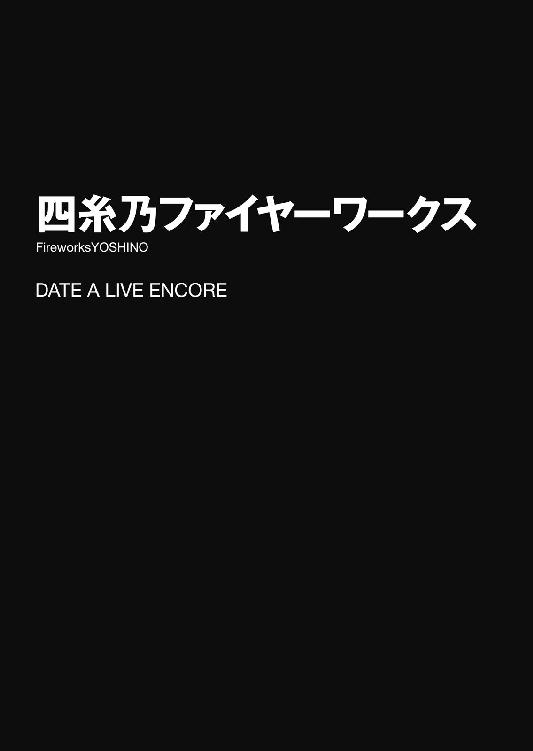
とある初夏の日の夕方。
五河士道はいつものごとくキッチンに立ち、夕食の準備をしていた。
「シドー、今日の晩ご飯は何なのだ？」
と、カウンター越しのリビングから、少女の声が響いてくる。
ちらと目をやると、美しい夜色の髪に水晶の瞳をそなえた少女──十香が、バランスボールに腹這いになりながらキッチンの方に視線を送ってきていた。彼女の住まいは隣のマンションなのだが、よく五河家に夕食を食べにくるのである。
「ん、今日は暑いからな。お手軽にそうめんだ」
「おお！」
士道が言うと、十香が目をキラキラと輝かせた。ぐっとバランスボールに体重をかけ、その反動を利用してボヨン、とその場に立ち上がる。
「ピンクの、ピンクの麵は入っているのか？」
「ああ。それどころか今日は緑の麵まで入ってるぞ」
「な、なんと......」
十香が天啓を受けた聖職者のような顔をして、両手をわななかせる。
なんとも感動の多いやつである。士道は苦笑しながら言葉を続けた。
「ほら、先にそっちのテーブル片付けといてくれ」
「う、うむ！ 任せろ！」
十香は元気よく返事をすると、いそいそとテーブルの上に広がった新聞や雑誌を片付け始めた。
と、その最中何かを見つけたのだろうか、「ぬ？」と不思議そうな声を発して十香の手が止まる。
「ん？ どうかしたか？」
「む。シドー、これは何だ？」
言って、一枚のチラシを広げてくる。そこには大きな打ち上げ花火の写真と、近所で開かれる花火大会の要項が書かれていた。
「ああ、花火大会か。もうそんな時期なんだな」
「花火？」
十香が目を丸くしながら首を傾げる。
と、そんな十香の動作に合わせるように、リビングの扉ががちゃりと開き、小さな人影が入ってきた。
チャイムを鳴らさずに家に入ってくる人物の心当たりは、十香と海外出張中の両親を除けば妹の琴里しかない。士道はトントンとリズミカルにネギを刻みながらそちらに声を発した。
「お、ようやく帰ってきたな。そろそろ夕飯だから早く着替えて──」
振り向いた士道はそこで目を見開き、言葉を止めた。
部屋に入ってきた少女の姿が、士道の予想とは違っていたのだ。
年の頃は一〇代前半といったところだろうか。白い肌の上に淡い色のワンピースを纏い、青い髪をつばの広い麦わら帽子で隠した少女である。なぜか左手に、コミカルな意匠の施されたウサギのパペットをつけていた。
「四糸乃？」
士道が名を呼ぶと、四糸乃は士道の姿を確認するためか、帽子の下から蒼玉のような双眸をちらと覗かせてきた。
およそ人間には生まれ得ないような、美しい瞳。
そう。彼女──そして十香は、厳密には人間ではない。『精霊』と呼ばれる特殊災害指定生命体なのである。
とはいえ、今はとある方法にてその力を封印しているため、そこまでの危険はない。実際、〈ラタトスク機関〉に保護された四糸乃は、機関の有する空中艦の居住エリアで生活しながら、人間社会に溶け込むための勉強をしているという話だった。
「こ、こんばんは......士道さん、十香さん」
『やっはー、お久しぶりだね士道くん。元気してたかーい？ 時折四糸乃のことを思い出しながら、独り寝の夜を悶々と過ごしてたかーい？』
四糸乃がぺこりと頭を下げ、次いで左手に装着されていたパペット──『よしのん』が、口をパカパカ動かしながら陽気な声を発してくる。
あまりにも対照的な口調に、性格。士道は思わず苦笑した。
一見すると腹話術のようにしか見えないが......厳密には違う。『よしのん』は四糸乃の中にある別人格であるため、その言葉に四糸乃の意思は介在していないのである。
事実今も、少々品のない軽口を叩いた『よしのん』の口を、四糸乃が顔を赤くしながら押さえつけていた。
「す......すいま、せん......」
『むー！ むー！』
四糸乃がすまなそうにもう一度頭を下げ、『よしのん』が拘束から逃れようとしてジタバタともがく。その様があんまり滑稽で可愛らしかったものだから、士道はまたも小さく笑ってしまった。
「まあそれはいいけど......一体どうしたんだ、四糸乃」
士道が問うと、四糸乃はハッとしたように肩を揺らした。
「え、えと......その」
四糸乃は言いづらそうに目を泳がせたのち、意を決したように震える唇を動かし始めた。
「あ、相変わらず......間抜け面晒してるわね、士道......。光栄に、思いなさい......無価値、無気力、無縁仏な三無男のあなたに......私が存在意義を与えて......あげるわ。明日の夕方、私を......花火大会に連れて......行きなさい。そ、それくらいなら......人間に限りなく近い進化を遂げたミジンコであるあなたでも......可能、でしょう......？」
なんて、いやにたどたどしい調子で、四糸乃が、普段なら絶対に言わないような台詞を吐いてくる。
「な......ど、どうしたのだ、四糸乃」
十香が、不審そうに眉をひそめて頰に汗を垂らす。
だが、士道の反応は違っていた。ピクリと頰を動かすと、ゆっくりと顔を上げる。
「............おい、こら」
「......っ！ す、すいません、すいませんっ、すいません......っ！ で、でも......」
四糸乃が、心から申し訳なさそうに頭を下げてくる。
しかし、士道は四糸乃にどうこう言おうという気はまったくなかった。ギロリと視線を鋭くし、その後方──先ほど四糸乃が入ってきた扉を睨み付ける。そこには案の定、笑いを堪えるようにぷるぷると震えた琴里の頭が覗いていた。
「琴里ッ！ てめえ、俺の心のオアシスに何教え込んでやがるッ！」
「......で、花火大会に行きたい、と」
扉の陰に隠れて様子を窺っていた琴里を引っぱり出したあと、士道は大きなため息を吐きながらそう言った。
なんでも、四糸乃がものの本で知った『花火』というものを、是非生で見てみたいと思い──できることなら士道との『デート権』を使用できないかと、琴里に相談したらしい。
「そそ。確か明日、天馬川の方で花火大会があるでしょ？ 連れてってあげなさいよ」
長い髪を黒のリボンで二つ結びにした少女──琴里が、偉そうにソファにふんぞり返りながら言ってくる。
ちなみに『デート権』とは、以前とある勝負において四糸乃が獲得した、士道を一日独占できるという権利である。無論士道の意思はまったく介在していないが......下手なことを言って大人しい四糸乃以外の手に渡っても困るので、何も言わずにいた。
「なら普通に言えばいいだろうが。四糸乃に何やらせてんだよおまえ」
「あら、ステゴサウルス並みににぶちんな士道にはあれくらいやらなきゃ通じないでしょ？......で、どうなのよ」
「そりゃまあ、俺は構わないけど......」
士道はちらと隣に座った十香の方を見やった。こういったイベントごとに一番に反応を示しそうなのが彼女だったのである。
実際、今し方琴里に花火大会（というか、そこに設営される屋台）の話を聞いてから、頰をほんのり染めて握った手を小刻みにぷるぷると震わせていた。
......有り体に言ってしまえば、ものっすごくウズウズしている。
「は......っ！」
だが、そこで士道の視線に気付いたのだろう、十香はハッとした様子で肩を揺らした。
「い、いや、いいのではないか？ せっかくだから......二人で楽しんでくるといい」
軽く涙目になりながら、何かもう明らかに無理をしている様子で、十香が言ってくる。
士道は頰に汗を垂らすと、四糸乃の方に視線をやった。四糸乃もまた、士道と同じような顔を作っている。
「えと......十香さん、よかったら......一緒に来ますか？」
「！ い、いいのか⁉」
四糸乃が言うと、十香はガタッとテーブルに身を乗り出し──しかしすぐに自分を戒めるようにブンブンと首を振った。
「いや......駄目だ。このデートは勝者である四糸乃のものだ。そこに私が出しゃばっていっては、おかしなことになる」
自分で自分の手の甲をつねりながら、十香が言ってくる。
そんな様子を見てか、琴里がやれやれと肩をすくめた。
「はいはい、じゃあ十香は令音に連れていってもらいましょうね。別行動なら問題ないでしょ？」
琴里が言うと、十香はパァッと顔を明るくした。
「！ む......ま、まあ、どうしてもというなら仕方ないな！」
そんな十香を見て、士道と四糸乃は顔を見合わせて苦笑した。
◇
翌日。士道は花火大会会場の最寄り駅にある、何だかよくわからない形をしたオブジェの前で四糸乃を待っていた。
時刻はおよそ一八時。花火の打ち上げ開始まであと一時間ほどということもあってか、駅前は見物客と思しき人々で溢れ返っている。中には会場の屋台目当てで来たのだろうか、たこ焼きのパックやらヨーヨーやらを提げて駅に入っていく者も見受けられた。
「予想はしてたけど......凄い人だな」
『何吞気に言ってるのよ。さっき四糸乃をそっちに転送したわ。すぐ着くと思うから、ちゃんとスムーズに合流しなさいよ？』
と、士道の独り言に応ずるように、右耳に琴里の声が聞こえてくる。
状態の安定している四糸乃だから必要ないだろうとは言ったのだが、万一のときのためにと〈ラタトスク〉にインカムを持たされていたのである。
『──今日は原則、こちらから指示をすることはないけど、現場には〈ラタトスク〉の機関員が張り込んでるわ。何かあったらすぐに言ってちょうだい』
「了解」
『じゃ、四糸乃を頼んだわよ』
そう言って、琴里からの通信が切れる。
それを確認してから、士道は四糸乃の姿を探すようにキョロキョロと首を振った。
と、
「お、お待たせ......しました」
『おー、待ったせたね士道くーん』
存外近い位置から聞き知った声が響いてきて、士道は視線を下ろした。
「......！」
そして、予想外の様相に目を見開く。
四糸乃はいつものようなワンピースではなく、淡い青の浴衣に身を包んでいた。麦わら帽子も被っておらず、綺麗に結い上げられた髪を花のかんざしで飾っている。
それらが、お人形さんのような四糸乃の可憐な姿容と相まって、何とも言いがたい美しさを醸し出しているのである。士道は思わず言葉を失い、しばしの間まじまじとその姿を見つめてしまっていた。
「士道......さん？」
「！ あ、いや、悪い」
不思議そうな四糸乃の声にハッとして、誤魔化すように視線を泳がせる。すると、四糸乃とお揃いのかんざしをつけた『よしのん』が、大きな口の端をニヤリと歪めた。
『あれあれー？ もしかして四糸乃の晴れ姿にお見とれあそばしてらっしゃいましたー？ きゃー、やったね四ー糸乃。令音さんに着付け手伝ってもらった甲斐があったじゃなーい』
「ぐ......っ」
「よ、よしのん......！ へ、変なこと、言わないで。士道さんが、そんな......」
四糸乃が慌てて『よしのん』の口を押さえ、士道に視線を寄越してくる。
「や、まあ......綺麗だと思うよ」
だが、当の士道がそんなことを言ってしまったものだから、四糸乃はボンッ！ と顔を真っ赤に染めてしまった。
「あ、あの、その、えと......」
まさか褒められるだなんて思っていなかったのだろうか、あたふたと右手を動かし、帽子のつばを引き下ろして顔を隠すような動作をする。
だが、今四糸乃の髪を飾っているのは麦わら帽子ではなく小さな花のかんざしである。四糸乃は幾度か結んで開いてを繰り返したあと、どうしたらいいのかわからない顔をしてうつむいてしまった。
そのまましばし、顔を赤くした二人が黙って向かい合う。こういうときこそ茶々を入れてくれればいいものを、『よしのん』はただニヤニヤと笑っているだけだった。
「え、ええと......なんだ。こうしててもしょうがないし、そろそろ行くか？」
「！ は、はい......！ よろしく......お願いします」
士道が訊いてみると、四糸乃は緊張した面持ちでぺこりと頭を下げた。
「おう、じゃあこっちだ」
言って、士道が川の方に歩いていくと、不意に後方から『よしのん』の声が響いてきた。
『おーいおい士道くーん。こーんな人混みの中、先に行っちゃう気かーい？』
「え？」
振り向いてから「ああ」と納得する。今の四糸乃は浴衣姿なうえ、慣れない下駄を履いているのである。
「そうだな、悪い悪い。まだ時間はあるし、ゆっくり行こうか」
『ちっちっち。ちょーっと違うんだよなー士道くん』
「え？」
『ほら、四ー糸乃』
そう言いながら、『よしのん』がぷにぷにと四糸乃の真っ赤な頰をつつく。
四糸乃は何やら緊張した面持ちのまま唇を嚙みしめていたが、やがて意を決したように声を発してきた。
「あ、あの、士道さん」
「なんだ？」
「私......今日、士道さんとの......デート権を使って、ます」
「ん、そうだな」
「だから......今日のこれは、わ、私と、士道さんの、デート......です」
「まあ、そうなるな」
「えと、だから、その......駄目だったら......いいんですけど」
四糸乃が、おっかなびっくりといった調子で、右手をそろそろと伸ばしてくる。
「て、手を......繫いでくれませんか？」
言って、士道の顔を見つめてきた。四糸乃にとってはよほどの一大決心だったのだろう、微かに目は潤み、小刻みに唇が震えている。
「お、おう。いいぞ」
不覚にもドキッとしてしまった士道は、心中の動揺を悟られまいと平静を装いつつ、伸ばされた四糸乃の小さな手を握った。
その感触に驚いたのだろうか、四糸乃がビクッと肩を揺らす。
「！ 悪い、驚いたか？」
「い、いえ......大丈夫です」
「そ、そか。じゃあ──行くか」
「はい......」
四糸乃が酸漿のようになった顔を隠すように深くうなずく。左手の『よしのん』が、『頑張ったねー。イイコイイコ』と言いながらその頭をぐりぐりと撫でていた。
別に女の子と手を繫いだことがないとか、そういうことはないのだが......なぜだろうか、妙に緊張する。
と──
「......⁉」
不意にどこからか視線を感じた気がして、士道は辺りを見回した。
「士道さん......？ どうか......しましたか？」
「いや、気のせい......だと思う」
もしかしたら、こんな可愛らしい少女と手を繫いでいる士道を、道行く誰かが嫉妬の眼差しで睨んできたのかもしれない。
士道は大きく深呼吸をしてから、力を入れれば折れてしまいそうな指を優しく握り、ゆっくりと歩き出した。
人の流れに乗って歩くことおよそ一五分。道の両脇に屋台の灯りが見え始めてきた。
焼きそば、たこ焼き、わたあめなどのお祭り定番メニューを売る出店から、ヨーヨー釣り、金魚すくい、射的、さらにはよくわからない景品をぶら下げたくじや型抜き屋まで、様々な店が並んでいる。程度の差こそあれ、どこも一様に繁盛しているようだった。
「わぁ......」
四糸乃が目を見開き、感嘆を漏らす。
「すごい......です」
『ねー、賑わってるねー。ところでこれ何？ ここで花火売ってるの？ 買って好きに打ち上げていいとかそういうシステム？』
不思議そうに首を捻りながら『よしのん』が言ってくる。士道は力無く苦笑した。ここにいる皆が尺玉を好き勝手に打ち上げていたら、さぞ凄まじい光景になるだろう。
「違うよ。花火が打ち上がるのは川の向こう側だ。ここで売ってるのはまあ、食べ物とかおもちゃとかだよ」
『え？ 花火大会との関連性は？』
「う......っ、わ、わかりません......」
『ふーん。何か哲学的な命題が潜んでる気配だねー』
『よしのん』が何やら納得したように腕を組んで、うんうんとうなずく。
士道は引きつった笑みを浮かべてから四糸乃に視線を戻した。
「四糸乃はこういう出店とかって初めてか？」
士道が問うと、四糸乃は興奮気味にこくこくとうなずいた。
「ほ、本では見たことが、あります。でも......本物は、初めてです」
「そっか」
ここまで驚いてもらえると連れてきた甲斐がある。士道は笑いながら携帯電話で時間を確認した。
「花火までまだ時間あるし、ちょっと見て回るか」
「！ いいん......ですか？」
「もちろん。こういうのも花火大会の醍醐味だろ。何か食べたいものとか、欲しいものはあるか？ せっかくだから奢るぞ」
「え、えっと......」
四糸乃はぐるりと首を回し、混乱した様子で辺りの店に目をやった。
「あはは......悪い悪い。歩きながら見ればいいから」
「あ、は、はい。すいません......」
四糸乃がうなずき、きゅっと手を握り返してくる。
そして人混みを縫うように歩いていると、不意に四糸乃が足を止めた。
「ん？ どうした四糸乃」
「士道さん......あれは、何ですか？」
言って、左方に視線を送る。
「............」
そして、士道は無言でその場に停止した。
そこにあったのは射的の屋台だった。コルク栓を飛ばす銃が一〇挺並び、奥に的が見て取れる。
それだけ見れば問題はない。何の変哲もない出店の一つである。
だが、その的が面を被った半裸の男で、あまつさえ知り合いに酷似しているなら話は別だった。
「ああ......っ、誰か！ 早く弾を！ 弾を！」
「少しは黙りなさい神無月。あなたが気持ち悪すぎるからお客が寄りつかないのよ。撃って欲しければもう少し的らしくしていなさいな。それともそれくらいも出来ないほどに無能なの？ これからは人形でも後ろに侍らせておいた方が有益かしら？」
店主がぴしゃりと言い放つ。屋台の店主にしてはやけに年若い......というか、変装はしていたものの明らかに琴里だった。
「く、くうぅぅっ、ああでもこういう焦らしもまた......っ！」
磔にされた的の男が、恍惚の声を上げる。......こちらはどう見ても、〈ラタトスク〉の副司令にして空中艦〈フラクシナス〉の副艦長、神無月恭平だった。
周囲の客たちもドン引きしており、一様に繁盛している屋台の中でそこだけがエアポケット状態になってしまっている。
士道は頭を抱えた。確かに機関員が張り込んでいるとは聞いてはいたが......
「そこかよッ⁉」
「......⁉」
突然大声を発した士道に驚いたのだろう、四糸乃がビクッと震える。
「あ、わ、悪い」
「い、いえ......。それより、あの......士道さん、あれって」
「さ、四糸乃。別のものにしような」
「え、でも......」
士道は有無を言わさず四糸乃を引っ張っていった。単純に四糸乃にあの光景を見せ続けたくなかったというのもあるし......万が一影響を受けてしまっても困る。
と、また四糸乃が何か気になるものを見つけたらしい。足を止めて声を上げてくる。
「じゃあ、士道さん、あれは......なんですか？」
「うん？」
四糸乃が見ていた先には、かき氷を売る屋台があった。大きな氷削機から氷片が飛び散り、キラキラと輝いている。
「きれい......です」
「ん、かき氷だよ。細かく削った氷にシロップをかけて食べるんだ」
「食べ物、なんですか？」
四糸乃が意外そうに目を丸くする。なるほど、確かに何の予備知識もない状態で見たなら、かき氷は食べ物というには綺麗過ぎるかもしれない。
「ああ、美味いぞ。食べてみるか？」
「......！」
士道が言うと、四糸乃はこくこく、と首肯した。
「ん、それじゃあ......っと、味はどれがいい？」
四糸乃の手を引いて屋台の前まで歩いていった士道は、イチゴやらメロンやらと書かれた紙を見て声を上げた。
「お、お任せします」
「え？ そうだな、じゃあ......」
士道はメニューに目を這わせると、氷削機の前に立っていたおっちゃんに声を掛けた。
......というかまあ、そのおっちゃんの顔も、〈フラクシナス〉の中で見たことがある気がしたが、士道は極力気にしないことにしておいた。もしかしたら、屋台の何割かは〈ラタトスク〉機関員なのかもしれない。相変わらず過保護かつ贅沢なサポート態勢である。
「すいません、ブルーハワイ一つ」
「あいよ！」
屋台のおっちゃんは手慣れた動作でカップに氷の山を盛り上げると、青いシロップをたっぷりかけて手渡してきた。
別段ブルーハワイがオススメというわけではなかったのだが（というか、士道も何の味だかよくわかっていないのだが）、提灯の明かりを受けてキラキラ輝く青い色が、なんとなく四糸乃に似合いそうな気がしたのである。
士道は代金を払うとカップを受け取り、それを四糸乃に手渡してやった。
「ほら」
「あ、ありがとう......ございます」
四糸乃は『よしのん』にカップを持っていてくれるよう頼むと、プラスチック製のスプーンで青く色づいた氷をすくい取り、矯めつ眇めつしてから、ぱくっと口に放り込んだ。
「──────っ‼」
するとすぐに驚いたように目を見開き、右を見て左を見て、そののち士道の顔を見上げ、興奮した様子でバンバンと士道の身体を叩いてきた。
が、すぐにハッと肩を揺らすと、申し訳なさそうに眉を八の字にしてくる。
「す、すいません、つい......」
「はは、気に入ったか？」
士道が問うと、四糸乃はブンブンと首を縦に振った。
「冷たくて、甘くて......でもアイスとは違って......すごい、です。革命です......」
言って、四糸乃がぱくぱくとかき氷を食べ始める。
「あ、おい。あんまり一気に食べると......」
「............んんっ」
遅かった。四糸乃は渋面を作ると、手の平で側頭部をさすった。
「き、キーンと、きました......」
「冷たいものを一気に食べるとなるんだよな。アイスクリーム頭痛」
「お、美味しそうな名前の頭痛、です......」
四糸乃が目をきゅっと瞑りながら声を絞り出すようにうめく。
と、そこで、人混みに紛れて甲高い声が響いてきた。
「──おお！ 令音、次はあれが食べてみたいぞ！ 何というのだ⁉」
「......残念ながら、金魚は食べられない」
「ぬ、そうなのか？ 躍り食い的なものかと思ったのだが......」
明らかにどこかで聞いたことのある声音。士道と四糸乃、そして『よしのん』は同時に振り返った。
「ん、あれは......」
「十香......さん？」
『だねー』
そう。そこには、浴衣姿の十香が、これまた浴衣を着た令音を連れて歩いていた。
ちなみに十香の右手には巨大なわたあめが握られており、左手にはそれぞれの指の間にりんご飴、チョコバナナ、イカ焼きなどが挟み込まれている。ついでにそれぞれの手首には光るブレスレット、側頭部にはヒーローのお面が見受けられた。もうこれ以上ないほど縁日を満喫している格好である。
十香の浴衣姿も四糸乃に負けないくらい美しかったのだが......そのあまりに滑稽な満喫スタイルに、思わず苦笑してしまう士道だった。
「おーい、十香ー」
と、士道が呼びかけると、十香は不思議そうに眉を跳ね上げて士道たちの方に視線を寄越してきた。
「ぬ？ おお、士道に四糸乃では......な、い、か──」
一瞬手を振り返そうとしてきた十香だったが、ハッとした様子で身体を揺らすと、すぐさま令音の陰に隠れてしまった。
「......？ どうしたん、でしょう......」
『んー、十香ちゃんもさすがにあの格好を士道くんには見られたくないんじゃないのー？』
「いやー......それはどうだろうな」
あまり十香はそういうのを気にしないような気がする。士道は不審そうに首をひねると、四糸乃を連れてぼうっと立ち尽くす令音の方に歩いていった。
「令音さん、こんばんは。十香はどうかしたんですか？」
「......ああ」
令音は身体を斜めにすると、後ろに隠れていた十香の姿を晒した。
十香はビクッと肩を震わせると、あたふたと慌てふためいてから、持っていた巨大なわたあめを一気に吸引し、空いた右手でお面を顔の方に装着し直した。
「何してんだ、十香......」
「ふ、ふははは！ 十香？ 誰だそれは。私の名はきなこパンマン！ お腹が減った子にきなこをまぶすスーパーヒーローだ！」
なんだか、ありがたいんだかありがたくないんだかよくわからないヒーローだった。
令音が十香の頭をわしわしと撫でながら、声をひそめて言ってくる。
「......まあ、たぶん彼女なりに、君たちのデートを邪魔しないようにしているんだろう」
「ああ......なるほど」
士道は四糸乃と目を合わせて小さくうなずきあった。
別に士道も四糸乃もそこまで気にはしていないが、せっかくの十香の気遣いを無為にしてしまうのも気が引けたのである。
「そっか、じゃあ俺たちは先行くよ。──地球の平和は任せたぞ」
「あっ、シドー......」
士道がそう言って立ち去ろうとすると、名残惜しそうに十香が声を上げてきた。
「ん？」
「！ い、いや、なんでもないぞ！ 任せておけ！」
十香が思い直すように首を振ってから、元気よく言ってくる。士道と四糸乃は小さく手を振ると、川の方に歩いていった。
「ふう......危うく気付かれるところだった。先ほど面を買っておいて本当によかったぞ」
十香はきなこパンマンのお面を側頭部にずらすと、ほうと放念の息を吐いた。
本当に危ないところである。十香の咄嗟の機転がなければ、士道と四糸乃のデートを邪魔してしまうところだった。
確かに十香も本当は士道と花火を見に来たかったし、二人がデートをするのに思うところがないわけではない。だが、十香と折紙を見事打ち倒してデート権を獲得してみせた四糸乃を讃える気持ちがあるのもまた、本当だった。
それに十香も、デートを邪魔される辛さはよく知っている。今日ばかりは、十香は四糸乃の邪魔だけはするまいと心に決めていたのである。
「......んん？」
と、十香は不意に眉をひそめた。
理由は単純。どこかで見たような少女が、人混みの中から現れたからだ。
白い浴衣を藤色の帯で留めた、線の細い少女である。肩口をくすぐるくらいの髪に、表情のない顔。というかそれは──
「鳶一折紙......だと？ な、なぜこんなところに」
そう。それは十香と士道のクラスメートであり、十香の天敵。鳶一折紙だった。
十香が不審そうに目を細めると、折紙は小さくなった士道と四糸乃の後ろ姿に視線を送り、そのまま彼らのあとを追うように、すたすたと足を動かし始めた。
「！ 貴様、待たんかッ！」
十香は咄嗟に叫ぶと、右手を伸ばして折紙の肩をがっしと摑んだ。あのままでは、折紙が士道と四糸乃のデートに乱入してしまう気がしたのである。
「......、夜刀神十香。なぜあなたがこんなところに」
折紙が振り向き、どことなく不機嫌そうな調子で十香を睨み付けてくる。
「それはこちらの台詞だ！ 貴様、何をするつもりだった！」
「あなたには関係ない。放して」
「そうはいかん！ 士道と四糸乃のデートの邪魔はさせんぞ！」
十香が叫ぶと、折紙はぴくりと眉の端を動かした。
「デート。やはり、デートなの？」
「うむ。だから、邪魔してはいけないのだ。わかったら──って無視するなっ！」
十香の手を払いのけ、すたすたと歩いていこうとする折紙の前に回り込む。
「そこを退いて。士道が精霊の毒牙にかかるのを見過ごすことはできない」
「毒牙だと？ 四糸乃はいいやつだぞ。そんな──」
「あなたは何もわかっていない。ああいう女がもっとも恐ろしい。あの大人しそうな顔の裏には、淫蕩な本性が渦を巻いている。無垢で弱々しいふうを装って男性の庇護欲を刺激し、おびき寄せたところでパクッと食べてしまう。まるでチョウチンアンコウ。恐怖クリオネ女」
「な、何を言っているのだ。四糸乃がそんなことをするはずがなかろう！」
「話にならない。そこを退いて。このまま暗がりに逃げ込まれたら士道の貞操が危ない」
折紙が十香の脇をすり抜けようとし、さらに十香がそれを止める。二人は膠着状態となり、鋭い眼光を交じらせあった。と──
「......お嬢さん方。揉め事なら、それで勝負つけるというのはどうだい？」
睨み合った二人に、後方からそんな令音の声がかけられた。
「ぬ？」
「......村雨先生？」
折紙が訝しげに眉をひそめる。
だが令音はさして気にするふうもなく、ゆらりとした動作ですぐ近くの屋台を指さした。
どうやらそれは、射的屋の屋台らしい。店主と思しき人影はなく、『席を空けます。ご自由にどうぞ。店主』と書かれた張り紙がしてあった。
「......弾を三〇発撃って、獲得点数が高い方の勝ち。負けた方は勝った方の言うことを聞く......というのはどうかな？ わかりやすいだろう？」
「む......いいだろう。望むところだ！」
確かにそれならわかりやすい。十香は応と首肯した。
「意味がわからない。私は先を急いでいる」
だが折紙は不服らしい。プイと顔を背けて歩いていこうとする。十香は慌ててまたそれを止めた。
「......その膠着状態を何とかしたいのだろう？ 負けたら十香だって大人しく従うさ。──それとも、十香に勝つ自信がないのかな？」
令音が挑発するように言う。と、折紙がすっと目を細くした。
「なんだ、なぜ勝負を避けるのかと思っていたが、そういうことか」
十香が納得したようにうなずいていると、折紙が音もなく十香の前を横切り、射的屋に置かれていたコルク銃を手に取った。
「的は？」
「ぬ、なんだ、急にやる気になりおって」
戦闘状態に入った折紙を見て、十香は左手の指に挟み込んでいたりんご飴とチョコバナナとイカ焼きを一気に頰張った。......甘みとイカ焼きの香ばしさが混ざり合って、正直あまり美味しくなかった。
だが今はそんなことを気にしてはいられない。十香はゴミを令音に預けると、折紙の隣に立って銃を取った。
「これを撃てばいいのだな？ よし、勝負──」
が、そこで射的屋の奥にある的を確認した十香は、ピタッと身体を硬直させた。
なぜか面を被った半裸の男が磔にされており、その身体に的のような同心円が幾つも描かれているのである。ちなみに最高得点は股間の一〇〇点だった。
「こ、これは......」
十香が頰に汗を垂らしていると、次に、屋台の奥に小さな人影が見えた気がした。
「ぬ？」
不思議に思って覗き込んでみる。と、そこには浴衣にハッピを肩掛けにした琴里が隠れていた。
「琴里......？ こんなところで何をしているのだ？」
「！ ああ......十香。ちょっとね、あんまり顔を合わせたくないのよ......」
言って、的に向かって銃を構える折紙の方を一瞥する。
「む......？」
と、十香が首を捻っていると、屋台の表の方で折紙が手慣れた様子で銃を構え、至極冷静に引き金を引いた。
「──あふぅッ⁉」
すると銃口からコルク栓が飛び出し、股間に直撃。的が苦しそうな、しかしどこか気持ちよさそうな叫びを発した。
「......いきなり一〇〇点とはやるじゃあないか。──ん、一〇〇点の賞品はこの中から選んでくれたまえ」
「勝手に取っていいものなの？」
「......ああ、ここの店主とは知り合いでね。店番をしてくれと頼まれているんだ」
「そう」
言って、折紙が余裕に溢れた顔でふうと息を吐く。
「ぐぬ......」
十香は眉をひそめると、琴里に別れを告げ、屋台の表側に戻った。
そして見よう見まねで銃を構え、引き金を引く。ポン！ という軽い音がして、弾が的の胸元に当たった。
「あひィ！」
「......ふむ、右乳首は──二〇点だね。さ、賞品のお子様花火セットだ」
言って、屋台の中に入った令音が、四角くて平たい、話に聞いていた『花火』とは似ても似つかないものを手渡してくる。
だが、今の十香にはそんなものはどうでもよかった。鳶一折紙よりも点数が低いのが、悔しくてたまらなかったのである。
「ウホ......ッ」
十香が歯嚙みしていると、またも的が珍妙な悲鳴を上げた。どうやら、折紙が再び一〇〇点を取ったらしい。
「く......負けるかっ！」
十香は再び銃を構えると、狙いを定めて引き金を引いた。
時刻は一八時五〇分。
駅に着いた当初はまだ少し明るかった空も、すっかり夜のそれになっている。
少しひんやりとした空気に、微かに聞こえる虫の声。あとはまあ、都会特有の星のない空もまた、花火を観賞する際に限ってはいい背景かもしれなかった。
花火の打ち上げが始まるまであと一〇分。縁日を見回っていた士道と四糸乃は、いい見物ポジションを確保するべく、川縁に向かって歩いていた。
「だ、大丈夫か、四糸乃」
士道は四糸乃の右手を握りながら声をかけた。そう。とうとう打ち上げ開始とあって、さらに会場の人口密度が高くなっていたのである。まるで正月のバーゲン会場か、早朝の通勤ラッシュのような有様だ。
「だ、大丈夫......です」
『おっほぁー、もーみーくーちゃーにーなーるー』
そんな四糸乃と『よしのん』の声を聞きながら、人の流れに乗って広々とした河川敷に出る。
「はあ......すげえ混みようだったな」
「は、はい......」
『ねー。こんなの琴里ちゃんに放り込まれた洗濯機以来だよー』
士道は空を仰ぐように軽く伸びをした。うっすらとかかった雲に月が隠されているため、空はまさに黒一色だった。絶好の花火日和である。
次いで四糸乃の肩を小さく叩くと、川の向こうを指さしてやる。
「ほら、あの辺りから花火が打ち上がるんだ」
「あ、あそこ......ですか？」
『えー、どこどこー？』
言って、『よしのん』が身を乗り出してくる。
「そこだよ。ほら、あの──」
と。言いかけて、士道は違和感に気付いた。
──浴衣の袖から、四糸乃の左手が、見えている。
「え......？」
士道は目元を擦り、もう一度四糸乃に視線を戻した。が、間違いない。
「......？ どうか、しましたか？」
『なーにー。あ、もしかしておしっこー？ 駄目だよ士道くーん、先に済ませておかなくちゃー』
四糸乃が首を傾げ、それに合わせるように左手が慌ただしく動く。
そう。本来『よしのん』がいなければならないところに、パペットの姿がなかったのである。
士道はハッと目を見開いた。恐らく、先ほどの人混みの中で落としてしまったのだろう。
とはいえ、『よしのん』はパペットが喋っているのではなく、あくまで四糸乃の中の別人格が喋っているのである。四糸乃がパペットを装着しているという認識のままなら、発現していることができるのだろう。
だが、四糸乃は士道の視線を追って自分の左手を見──
「ひ......っ」
のどを引きつらせるように息を詰まらせた。
「......！ ......！」
そして声にならない叫びを上げながら、慌てて右に左に視線を巡らせる。だが無論のこと、辺りに『よしのん』の姿はない。
四糸乃は顔を真っ青にし、絶望的な表情で目に涙を溜め始めた。
そう。引っ込み思案で対人恐怖症気味な四糸乃は、友だちの『よしのん』がいないと、不安で精神状態が非常に乱れてしまうのである。
そして、精霊の精神状態が乱れるということは──
突然、ビーッ、ビーッと士道の耳にアラームが鳴り響いた。次いで、琴里の声が鼓膜を震わせてくる。
『士道？ 安定していた四糸乃の精神状態が急激に乱れてるわ。一体何があったの⁉』
「あ、ああ──実はよしのんが──」
が、説明する間もなかった。反対側の耳に、四糸乃の嗚咽が聞こえてくる。
「ぅ、あ、ぁ......」
「ま、待て！ 落ち着け、四糸乃っ！」
「うぁぁ、あっ、ぁぁぁぁっ......！」
士道の制止もむなしく、四糸乃は大粒の涙をこぼして泣き始めた。
それと同時に。
──花火大会の会場に、突然凄まじい勢いで、大粒の雨が降り始めた。
◇
「ご、ごめん......なさい、士道さん......」
川からほど近い神社の境内で、四糸乃はがっくりと項垂れながら小さな声を発した。
綺麗に結い上げられた髪は濡れ、水を含んだ浴衣は四糸乃の肌にぺったりと張り付いている。浴衣越しに微かに透けて見える白い肌が、なんだかやけに艶めかしかった。
「い、いや、気にするなって」
『そうだよー。四糸乃は何も悪くないってば。ちょーっとよしのんがやんちゃしすぎちゃっただけなのよう。ごめんねー、心配かけて』
言って、四糸乃の左手に装着されたパペットが、四糸乃の頭をペタペタと撫でる。
幸い、会場に張っていた〈ラタトスク〉機関員の協力もあって、『よしのん』はすぐに見つかった。やはり先ほどの移動の際に落としてしまっていたらしい。顔に一箇所靴の踏み跡がついてはいたものの、他に損傷らしい損傷はなかった。僥倖といってもいいだろう。
だが、突然の大雨によって花火大会は中止になってしまった。
本来、四糸乃は水と冷気を操る精霊である。霊力を有していた頃は彼女が現れるだけで、辺りには雨が降っていた。
霊力を封印することにより今は日常生活を送ることができているが──精神状態が著しく不安定になると、封印した力が逆流してしまうことがあるのである。
つまりは......こんな風に。
『よしのん』が発見され、すでに雨は上がっていたが、花火が再開されるかどうかは微妙なところだった。四糸乃は皆に迷惑をかけてしまって申し訳ない、といった様子で大きく肩を落としていた。
「本当に......すいません......」
「だから、気にするなって」
そう言うも、四糸乃は申し訳なさそうに顔をうつむけたままだった。
と、『よしのん』が『むーん......』とうなったかと思うと、何かを思いついたようにポンと手を打った。
『ホントにねー。四糸乃のせいで台無しだねー。みんながっかりしただろーなー』
「ぁ、あぅぅ......」
「お、おい、何もそこまで──」
が、『よしのん』は士道の声を無視し、言葉を続ける。
『四糸乃ー、琴里ちゃんに教えてもらったよね。いけないことした子は？』
「え......？」
『いけないことした子はー？』
「えっと......お、おしりペンペン......」
『そうそう。それできちんと反省して、同じことをもうしないようにするんだよねー』
「う......うん」
四糸乃が答えると、『よしのん』がぐるん、と首を回した。
『というわけで。士道くーん、四糸乃におしりペンペン一丁ー！』
「は......はぁっ⁉」
士道はたまらず声を上げた。否定を示すようにブンブンと手を振る。
「い、いやいやいや。おしりペンペンって、慣用句的に使われてるだけで、本当に尻を叩くわけじゃないだろ？」
『えー。琴里ちゃんはミスした神無月さんのお尻叩いてるよ？ 鞭で』
「............」
容易に想像がついた。眉間を押さえて頰をぴくつかせる。
『ほら、四糸乃も。ここでぬるーく済ませちゃったら、いつまでも同じ失敗を繰り返す子になっちゃうよー。それでもいいのかなー？』
「......っ、そ、それは......」
四糸乃はきゅっと唇を嚙むと、すっくと立ち上がって、近くにあった御神木と思しき木に手を突いた。
「お......お願いします。私......もう、よしのんや、士道さんに、迷惑をかけたく......ないんです」
そして緊張気味にそう言って、くっとお尻を突き出してくる。
「い、いや、そうは言っても......」
『士道くんがやってくれないとずっとこのままだよー』
士道が躊躇っていると、『よしのん』がニヤニヤしながら言ってきた。四糸乃も、決意は固いというようにぐっとうなずいてくる。
「うぐ......」
そうまで言われては断りきれない。士道はそちらに歩いていくと、そろそろと手を上げた。
『あー、ちょっと待って』
と、士道ができるだけ痛くならないように......と気遣いながら手を振り下ろそうとしたところで、『よしのん』が制止をかけてきた。
士道は放念の息を吐いた。どうやら、『よしのん』も実際に尻を叩かせようとしていたわけではなく、四糸乃に度胸というか気概のようなものを身につけさせようとしていただけらしい。
──だが。次の瞬間、士道は自分の思考がどれだけ楽観的かを思い知らされた。
『だーめだよー。直接やらないと』
そんなことを言って、『よしのん』がぺろん、と四糸乃の浴衣の裾を捲り上げ、その小さなお尻を露出させたのである。
しかも、なぜか四糸乃は浴衣の下に、下着を着けていなかった。
「ぶッ⁉」
「......っ！」
士道が思わず目を剝き、四糸乃が身体を痙攣させるように震わせる。
「な、なんで下穿いてないんだよ！」
「れ、令音さんが......浴衣は、本来そういうものだって......十香さんもそうやって着てましたし......」
「十香もかよ！」
士道が叫ぶも、『よしのん』は気にしていないようだった。囃し立てるようにぺちぺち手を叩いてくる。
『さー、スパンといっちゃってー！』
「士道......さん。恥ずかしい、です......早く......」
「！ ああ......もうッ！」
士道は心中で神社の神様にゴメンナサイしながら、手を振り下ろした。
ぺちん！ と小気味のいい音が静かな神社の境内に鳴り響く。
「きゃぅ......っ！」
『へい、もいっちょ！』
ぺちん！
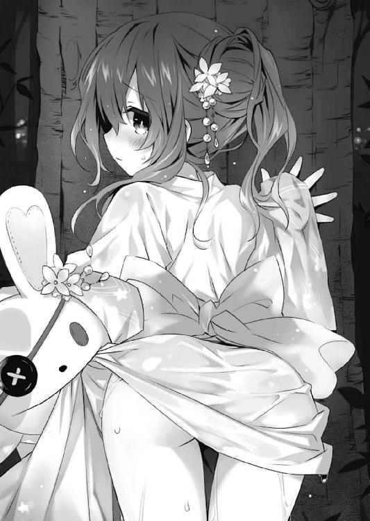
「や......っ......！」
『ラスト一発！』
ぺちーん！
「あぁ......っ‼」
合計三発平手を打ち終わると、四糸乃は身体を小刻みに震わせながらはぁはぁと荒い息を吐いた。そこまで力を入れたつもりはなかったのだが、もとの肌が白いからだろうか、お尻がほんのり赤くなってしまっている。
「だ、大丈夫か、四糸乃......」
「は、はい......」
士道が言うと、四糸乃は力無くそう答えたあと、ハッとした様子で浴衣の裾を直した。
「あの......ありがとう......ございます。こ、これからは、気を付けます」
「お、おう......」
謎の罪悪感に襲われ、士道は気まずげに頰をかきながら答えた。
確かに四糸乃は、十分今回のことを反省したらしい。......まあ、おしりペンペンなぞしなくとも、きちんと反省しているようではあったのだけれど。
だが──四糸乃の落胆がすっぱり解消できたのかといえば......どうやらそうではないらしい。その表情には、未だに残念そうな色が浮かんでいる。
士道はううむとのどを鳴らすと、「あ」と短く声を発した。
「四糸乃、よしのん。すぐ戻ってくるから、ちょっとの間ここで待っててくれるか？」
「......？ は、はい。わかりました......」
『んー？ どこ行くの士道くん。あ、今度こそトイレ？』
「まあそんなところだ」
士道は『よしのん』の問いにひらひらと手を振って答えると、小走りになって屋台が建ち並んだ通りの方へと戻っていった。
未だそれなりに人はいるものの、突然の大雨で客足が引いたのか、随分と歩きやすくなっていた。士道は左右に首を振り、目的のものを探した。
「ん......さすがにない、か。近所のコンビニにでも行った方が......」
と、士道がぽりぽりと後頭部をかいたところで。
「おい貴様！ 今のはズルだろう！ ちゃんとルールを守るのだ！」
「ズルではない。一挺しか銃を使ってはいけないとは規定されていない。それ以前に、一〇倍近く点差のついた今の状況で、そんなことをする必要が見いだせない」
「な、なんだとっ⁉」
射的屋の方から、なんだか日常的に耳にしている騒音が飛び込んできた。
見やると、十香と折紙が互いにコルク銃を構えて弾を撃ち合っているのが目に入った。二人のお腹には的の描かれた紙が貼ってあり、お互いそこを狙って銃を撃っているらしい。......なんというか、士道の知っている射的屋とは随分システムが違う気がした。
「十香に......折紙まで。何してるんだ、おまえら」
「ぬ？」
「──士道」
士道が声をかけると、十香と折紙が同時に顔を向けてきた。
十香は慌てて顔を隠そうと面を探していたが、すぐに士道の隣に四糸乃の姿がないことに気付いたのだろう、不思議そうに首を傾げてくる。
「シドー？ 四糸乃はどうしたのだ？」
「ああ......ちょっとな」
曖昧に誤魔化し、視線を逸らす。するとその際、十香と折紙の足元に堆く積まれたお菓子やおもちゃなどが目に入った。
「......なんだこれ」
「む？ ああ、これか。射的の景品だ。すごいだろう！ 景品が無くなってしまったから、仕方なく直接対決に移行していたのだ」
「あなたの方はさほどすごくない。八割方私の獲得景品」
「な、なんだと⁉」
言って、またも二人が銃撃戦（とはいえ、一撃ごとに弾を込めているから平和なものであったが）を再開する。
士道はそんな様子に苦笑し──ふと十香の景品の中にあるものを見つけ、声を発した。
「なあ、十香」
「ぬ？ なんだ？」
「一つ、お願いがあるんだが......」
◇
「どうしたんだろう......士道さん」
『んー、そーねー。あれじゃない？ 濡れた四糸乃のエロさに辛抱たまらなくなったんじゃない？ 自分で処理しなくたって、四糸乃の方は準備万端だったのにねー』
「よ、よしのん......」
『よしのん』の言葉に、思わずうつむきがちになっていた顔を上げる。
と、その際、視界に暗い空が映り込んできた。──ここに花火が上がったなら、さぞ綺麗だったろう。
「士道さんと......花火、見たかったな......」
空を見上げながら独り言を呟く。と、それに応えるように前方から足音が響いてきた。
「おーい、四糸乃」
「！ 士道さん......」
四糸乃は微かに肩を震わせると、そちらに向き直った。「今の独り言、聞かれてないよね？」と『よしのん』に訊ねるように視線を向けると、『さーてねえ』といった調子で肩をすくめてくる。
「悪い悪い。待たせたな」
「いえ......大丈夫です。でも......どうしたんですか？」
四糸乃が訊ねると、士道はふふんと口の端を上げ、手にしていたものを掲げてみせた。
「ほら、これ」
「お子様......花火セット。──花火？」
四糸乃は目を見開いた。そう。士道が手にしていた四角い厚紙には、確かにそう記されていたのである。
「ああ。ちょっと待ってな」
言って士道がビニール包装を解き、中からこよりのようなものを取り出して、四糸乃に手渡してきた。
「これは......」
「まあ、見てなって。......っと、確か一緒に借りたのがここに......」
士道はポケットからライターを取り出すと、四糸乃のこよりに火を点けた。
「え......？」
最初、士道のしていることがわからなかった四糸乃だが──ほどなくして、目をまんまるに見開いた。
士道が火を点けたこよりの先端部が丸まり、パチパチと小さな音を立ててオレンジ色の花を咲かせ始めたのである。
四糸乃が本で見たものとはまるで違う、遥かに小さな輝き。だけれどそれは、紛れもなく花火だった。
「きれい......」
『おー、すごいねー』
「だろ？ 線香花火っていうんだ。ま......打ち上げ花火の代わりには物足りないかもしれないけどな」
はは、と士道が笑う。四糸乃はブンブンと首を振った。
「そんなこと......ありません。とても......素敵です」
と、そこで前方──先ほど士道がやってきた方向から、またも足音が聞こえてくる。
「シドー！ 四糸乃！」
足音の主は十香だった。面で正体を隠すのも忘れ、少し慌てた様子で走り寄ってくる。
「おう十香。花火、ありがとうな。四糸乃も気に入ってくれたよ」
「む、それは何よりだ。──だが、朗報だ。どうやら花火が再開されるらしいぞ！」
「え......？」
と、四糸乃が小さく声を発した瞬間。
どこかからひゅるるるる......という笛の音のような音がし──
大きな音とともに、空に、大輪の花が咲いた。
「おお！ 始まってしまったか！ では先に行く。確かに伝えたぞ！」
言って、十香は慌ただしく去っていってしまった。どうやら、本当にそれだけを伝えに来てくれたらしい。
「はは......忙しいやつだな」
士道は小さく笑って、四糸乃の方に目を向けてきた。
「よかったな、四糸乃。じゃあ、俺たちも河川敷の方に移動するか。ここよりちゃんと見えるだろ」
そう言って、士道が腰を上げようとする。
が、四糸乃は首を振った。
「ここが、いいです」
「え？」
士道が意外そうな顔を作ってくる。四糸乃は未だパチパチと音を立てて弾ける線香花火を見つめながら口を開いた。
「私......こっちの花火の方が、好きです」
言って、四糸乃は頰を赤く染めた。
『よしのん』の顔もまた──花火の光に照らされているからだろうか、赤く色づいていた。
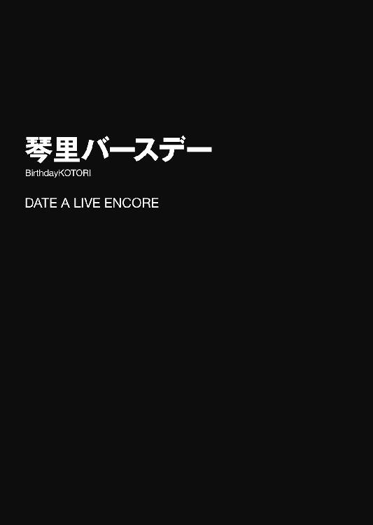
『──五河司令！ お誕生日おめでとうございます！』
五河琴里が〈フラクシナス〉の艦橋に入った瞬間、大きな声が響き渡り、クラッカーが連続して鳴らされた。
次いで拍手が鳴り響き、ケーキの載ったカートが転がされてくる。
「......あなたたちねえ」
そんな心温まるサプライズに、しかし琴里は呆れるように息を吐いた。
黒いリボンで二つに括られた髪に、肩掛けにされた真紅のジャケットが特徴的な少女である。間違いなくこの場でもっとも年若い容貌をしているのだが、その所作と言葉には人の上に立つ者の威厳が溢れていた。
「昼間から一体何やってるのよ......」
琴里が言うと、クルーたちが一斉に「ええー」と不服そうな声を発した。
「司令の一四歳の誕生日！ そんな大事な日に仕事なんて！」
「夕方からはご自宅でパーティと伺っていたので、今しかないと！」
確かに今日八月三日は琴里の誕生日であるのだが......これは少々やりすぎな気がしないでもなかった。
「......まあ、いいじゃないか。皆君のことを祝福したいんだ」
と、左方に立っていた村雨令音が言ってくる。琴里は「む......」と口ごもった。
「別に、駄目とは言ってないわよ。......その、嬉しくなくもないし」
琴里が視線を逸らしながらそう言うと、クルーたちが一斉に色めき立った。
「出たぁぁ！ 司令のデレ顔だぁぁ！」
「ありがとうございます！ ありがとうございます！」
と、そんな中、皆の後方から長身の男──神無月が一歩進み出てくる。
「本当におめでとうございます、司令。このような記念すべき日に立ち会えた幸運、感謝してもしきれません！」
神無月は涙を堪えるような仕草をしてから言葉を続けた。
「そこで！ 今年は我々一同から、スペシャルなプレゼントを用意させていただきました！」
「......スペシャル？」
琴里が訝しげに問うと、他のクルーたちが慌てた様子で神無月の口を塞ぎにかかった。
「いきなり何言ってるんですか！」
「まだ秘密でしょう⁉」
「あ、そ、そうでしたねぇ......」
琴里はじとっとした視線でクルーたちを見やった。
「......何企んでんのよ、あなたたち」
「い、いやー......ははは」
クルーたちが誤魔化すように笑う。
と、そこで令音が、何かを思いだしたように視線を上げた。
「......プレゼントといえば、琴里。シンはまだ君に何を贈るか決めかねているようだ。今なら欲しいものをリクエストできるかもしれないよ。何か頼んでみてはどうかな？」
若干話を逸らそうとしているようにも思えたが......まあ、これ以上追及しても仕方あるまい。視線を令音の方に向ける。同時に、クルーたちの安堵の息が聞こえてきた。
「そんなの、パッと思いつかないわよ」
「......ではして欲しいこと、させて欲しいこと、なんてのはどうだろう」
「え？」
琴里が目を丸くして問うと、令音が指を一本立てた。
「......たとえば、今日一日おにーちゃんに甘えさせて欲しい、とか......」
「な、なんでそうなるのよ！ 別にそんなんさせて欲しくないしっ！」
「............」
「な、何よ」
「......いや。まあ、君がそう言うならいいのだが......」
そう言うと令音は琴里に背を向けて自分の席に着くと、仕事に戻り始めた。
しばしの間無言でその背を見つめたあと、パンパンと手を叩く。
「ほら、さっさと仕事に戻りなさい！」
言うと、クルーたちが焦ったように自分の持ち場に戻っていった。
「ったく......」
琴里はため息混じりに言うと、前髪をくしゃっとやった。
「......そんなこと、言えるわけないじゃないの......」
◇
「お、おお......！ シドー！ なんだこれは！ 動いているぞ！」
なんて、夜刀神十香が目の前のショーウインドウを指さしながら、興奮気味に声を上げた。
長い夜色の髪に、端整な面。冗談のように美しい少女である。
彼女の視線の先には、薄い円盤型の全自動掃除機が動いているのが見受けられた。なるほど、確かに可愛らしい動きである。
だが。五河士道ははあとため息を吐くと、ぽん......とその肩に手を置いた。
「十香、今日の目的はわかってるか？」
「む？ うむ、もちろんだ！ 琴里のお祝いの品を買いにきたのだ！」
十香が大仰にうなずく。
そう。今士道たちは、琴里の誕生日プレゼントを探しに、天宮駅前のデパートに来ているのだった。
「そう。ならわかるな？ 少なくともそれは琴里喜ばないから。どっちかってと嬉しいの俺だから」
「そうか、ではシドーに贈ろう！」
「だからそうじゃなくてだな......」
「あの......」
と、士道が十香とそんな会話をしていると、背後から声をかけられた。
見やると、そこには麦わら帽子を被り、左手にウサギのパペットを着けた小さな女の子が立っていた。一緒に琴里のプレゼントを探しにきた女の子──四糸乃である。
「士道さん、これ......どうですか？」
言って、右手とパペットの腕で協力して持ってきた箱を示してくる。中には、白い瀟洒なティーカップのセットが収められていた。
「へえ......なるほど、いいんじゃないか？ 琴里紅茶好きだし」
士道が言うと、四糸乃が照れたように顔を赤くした。
「おお......なるほど、そういうのがいいのか！ では私も──」
と、何やら納得した様子で売場に走っていこうとする十香を止める。
「いや、似たようなものもらっても仕方ないだろ？」
「むう......そうか。では、シドーは何を贈るのだ？」
「え？ 俺は......」
言われて、士道は口ごもった。
別にパーティまで秘密にしておきたいとか、言うのが恥ずかしいわけではない。ただ単純に、まだ何を贈るのか決めかねていたのである。
琴里が欲しがりそうなものだとか、喜びそうなものだとかに、まったく心当たりがないわけではない。だが、せっかくの誕生日なのだから......と思ってしまうと上手く考えがまとまらなくなり......結局当日まで何を贈るかを悩んでしまっているのだった。
「うーん......」
あごに手を置き、頭の中に琴里の姿を思い浮かべる。──と、
「──あ、そういえば......」
あることを思い立ち、士道は目を見開いた。
◇
「......琴里は？」
「先ほど自宅に戻られました」
令音が問うと、神無月が即座に答えてきた。それと同時に艦橋にいたクルーたちが顔つきを臨戦態勢に変化させ、各々の持ち場につき始める。
そう。今日八月三日はこれからが本番なのである。
「皆さん、準備はいいですか？」
『はッ！』
クルーたちが一斉に答えると同時、艦橋のメインモニタに五河家の様子が映し出された。士道たちがいそいそと、パーティの準備を行っている。
「さて、正念場です。作戦を確認しておきますよ。まずは──」
神無月が簡潔に、最後の確認をし始める。
と、作戦要項を説明し終えたところで、神無月が不審そうに眉をひそめて後方を振り返った。
「んん？」
「......どうかしたかい？」
「今そこに誰かいませんでしたか？」
神無月の言葉にクルーたちが後方を見やる。だがそこには、誰の姿も見受けられなかった。
「誰もいませんね。気のせいでは？」
「おや......おかしいですねえ」
神無月が頭をかき、首を傾げる。
「............ふむ」
令音は扉の方に視線をやってから、あごに手を当てた。
◇
『──ハッピーバースデー！』
皆の賑やかな声が、五河家の食卓に響き渡る。
テーブルの上には今、士道特製の料理が所狭しと並び、中央に大きな苺のケーキが鎮座していた。
八月三日、木曜日。士道の妹・五河琴里の、一四歳の誕生日である。
最奥に今日の主役である琴里が座り、テーブルの左右に、十香、四糸乃、士道、そして令音が腰掛けていた。
「普通でいいって言ったのに......」
言いながら、お誕生日席に座った琴里が微かに顔を赤くする。だが小刻みに身体を揺すっているからだろうか、黒いリボンで括られた髪が、なんとも嬉しそうにピコピコ動いていた。
「......おめでとう。これは〈フラクシナス〉クルー全員からだ」
と、令音が四角く平べったい箱のようなものを琴里に手渡す。
「ありがとう。......これが例のスペシャルってやつ？」
「......さて、どうだろうね」
令音が視線を逸らすと、琴里が訝しげにその顔を目で追っていく。
だが、そんな表情はすぐに書き換えられることになった。
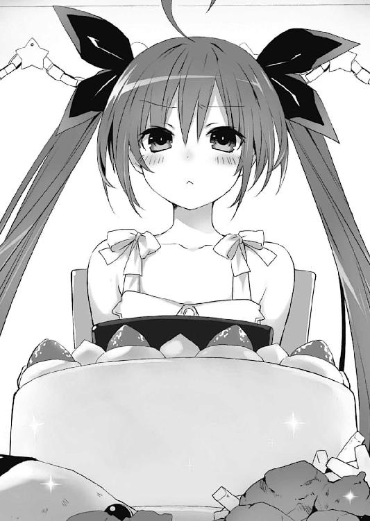
「琴里！ おめでとうだ！」
「おめでとうございます、琴里さん」
『こんぐらっちゅれーしょーん！』
十香、四糸乃、『よしのん』が口々に言いながら、綺麗にラッピングされたプレゼントを手渡したのである。
「あ、ありがと......」
琴里は恥ずかしそうに視線を逸らしながら、それらを受け取った。
そんな彼女らのやり取りを見て、士道も思わず表情を緩めてしまった。それに気付いたのだろう、琴里が「うぐ......っ」とさらに顔を赤くする。
「あはは......悪い悪い。ほら、誕生日おめでとう、琴里」
言って、士道も十香たちに倣ってプレゼントを差し出す。
「......一応お礼を言っといてあげる」
「はいはい」
「......開けてもいいかしら？」
琴里が皆を見回しながら言う。十香と四糸乃、『よしのん』が元気良くうなずいた。
が、令音がそこで琴里を止める。
「......琴里、私のプレゼントは、私たちが帰ったあとで開けてくれないか」
「え？ そりゃ構わないけど......」
琴里が不思議そうに首を傾げながらも、手にしていた令音からのプレゼントを横に置く。
それを見て、士道も声を上げた。
「あー......できれば俺のも、みんなが帰ったあとに開けてくれないか？」
「士道も？ いいけど......何よ二人して。何企んでるの？」
「いや、別に何も企んじゃ......」
士道は口ごもった。なんというか、他の皆の前で広げられるのは少し気恥ずかしかったのである。購入時も、十香と四糸乃には店の外で待っていてもらったくらいだ。
「ふうん......まあいいわ。じゃあ十香と四糸乃のを開けさせてもらうわね」
と、そこで、十香が興奮気味にテーブルに身を乗り出した。
「なあシドー、もう食べてもいいか⁉」
言って、目の前に並んだ料理を指さし、目をキラキラと輝かせる。
「はは......琴里がプレゼント開けるまで待とうな？」
「！ む、そうか、そういうものか。......すまん琴里、無礼をした」
士道がやんわりと注意すると、十香が目を見開き、すまなそうに謝った。
「いいわよ。先に食べちゃって」
しかし琴里が、手をひらひらさせながらそう言うと、再び表情をパァッと明るくする。
「いいのか⁉」
「ええ」
琴里が首肯する。十香が士道に目配せしてくるが、今日の主役がそう言っているのだから仕方ない。士道も首を前に倒した。
「おお、ではいただきますだ！」
言って、十香がパン！ と元気に手を合わせた。
それからおよそ三時間後。
皆で料理を堪能したのち、四糸乃と『よしのん』の贈ったティーセットでお茶をし、十香の贈ったボードゲームでひとしきり遊んだあと、十香が隣のマンションへと、四糸乃と令音が〈フラクシナス〉へと戻る時刻が訪れた。
「うむ、ではまた明日だ、シドー」
美味しい料理を食べ思うさま遊んだ十香は、そう言ってから「ふぁ......」と眠そうなあくびを漏らした。
「おう。ちゃんと風呂入って歯磨けよ」
「うむ！」
十香が大きくうなずいてから靴を履き、玄関を開ける。
「......では、我々も戻るよ」
「おやすみなさい......」
『まったねー！』
十香に続き、令音たちが玄関をくぐっていく。それに応じるように、琴里がひらひらと手を振った。
「ええ、またね」
それに十香たちが手を振り返し、パタンと扉が閉められる。
三人の足音が聞こえなくなってから、士道は軽く背伸びをした。
「さ、じゃあさっさと片付けちまうか」
言いながらリビングに戻り、テーブルの上に残った食器を重ね始める。
と、なぜか琴里が士道の視界から逃れるようにソファの陰にうずくまると、何やらモゾモゾと作業を始めた。
「琴里？ 何やってんだ？」
「！ き、気にしないで！」
「......？」
疑問に思いながらも、士道は首を傾げるにとどめて片付けを再開した。
ほどなくして琴里が立ち上がり、ダイニングテーブルの方に歩いてくる。なぜだろうか、先ほどまでとどこか印象が違う気がした。
「さて......と」
と、琴里がテーブルの前に立ち、不自然なほどぐぐっと頭を前に出す。
するとその瞬間、琴里の髪を束ねていた黒いリボンが片方はらりと落ち、食器の上に不時着した。
「きゃっ！」
琴里が慌ててリボンを摘み上げる。
「あー、汚れちゃった......」
「おいおい......ほら、見せてみな」
言って手を伸ばす。が、琴里は士道の手が届く寸前にサッと飛び退いた。
「仕方ないからつけ替えてくる！」
「え？ いや、それもそうだけど、ちゃんと浸け置きしないと......」
「すぐに戻るから待ってて！」
しかし琴里は士道の言葉を最後まで聞かず、廊下に走っていってしまった。
「まあ......黒だしシミもそんなに目立たないか」
言いながら、先ほどの違和感に気付く。そういえばソファの陰から琴里が出てきたとき、随分とリボンが弛んでいた気がしたのである。
「いや、まさかな......」
と、そんなことを考えていると、リビングの扉が勢い良く開け放たれ、琴里が舞い戻ってきた。
「おにぃぃちゃぁぁぁぁん‼」
──やたらとテンションの高い、白リボンの琴里が。
表情からは険がなくなり、語調も年相応の女の子らしくなっている。事情を知らぬ者が見たなら、瓜二つの双子と疑われても仕方のないレベルだ。
「琴里......？」
訝しげに眉をひそめるが......考えてみれば当然の話だった。
──琴里は、黒いリボンを一つしか持っていなかったのである。
琴里にとって『リボンを替える』という行為は、単なるファッション以上の意味を持っている。
白いリボンをしているときは、年相応の無邪気な琴里。
黒いリボンをしているときは、〈ラタトスク〉の司令を務める強い琴里。
そのように強固なマインドセットを自分に課することによって、過酷な任務に耐えうる『強い自分』を保っているのである。
「さ、おっ片付け！ おっ片付け！」
琴里が元気良く腕まくりしながら、食器を流し台に運んでいく。
士道はしばしの間ポカンとしていたが、すぐに思わず苦笑してしまった。士道が精霊と接触を持ってからというもの、琴里は司令官モードでいることが多かったため、もともとの琴里の反応を新鮮に感じてしまったのである。
「おにーちゃん？ どーしたの？」
琴里が不思議そうな目を向けてくる。士道は誤魔化すように手を振ると、流し台の方に歩いていった。
と、そこで琴里が「あ」と思い出したように、椅子の上に置かれていた令音のプレゼントに目を向ける。
「みんなが帰ったら開けていいって言ってたよね？ もういいのかな？」
「ああ、いいんじゃねえか？」
士道が言うと、琴里は豪快なアメリカンスタイルで包装紙を破り始めた。
「何が入ってたんだ？」
「んーとね......映画のＤＶＤみたい」
「映画？ 自主制作か？『偉大なる指導者にして稀代の革命家・五河琴里同志と私たちの歩み』みたいな」
「違うよー。見たことないけど、普通に市販されてるやつみたい」
「へえ......なんか意外だな」
士道はエプロンを装着しながら肩をすくめた。琴里大好きメンバーばかりが集まった〈フラクシナス〉クルーのことである。てっきりもっと珍奇なものを贈ってくると思っていたのだ。
そんなことを考えながら洗い物をしていると、不意にテレビから重低音が響き始めた。どうやら琴里が映画を再生し始めたらしい。
「おいおい、今見るのかよ」
「へーきへーき。二時間くらいで終わるみたいだし。せっかくもらったんだし、今日中に見た方がいいでしょー？」
「......ったく、見終わったらすぐ風呂行くんだぞ？」
「はーい！」
ソファの背から、ビッ！ と右手が高く上げられる。士道はもう一度肩をすくめると洗い物に戻った。
だが、数分後。
「うわきゃァァァァァッ⁉」
何やら大きな音声がテレビのスピーカーから流れると同時、琴里が大声を上げたかと思うと、バタバタバタッ、とけたたましい足音を立てて台所の方に逃げ込んできた。その勢いのまま士道の脇腹にタックルをかましてくる。
「ぐえっ！ な、なんだ一体......」
視線を落とすと、琴里が士道の服の裾をぎゅっと摑んでふるふると肩を震わせているのがわかる。
士道は眉根を寄せてテレビの画面に目をやり──原因に気づいた。
画面に、なんとも恐ろしいゾンビの姿が映っていたのである。どうやらホラームービーだったらしい。
最近忘れがちになっていたが、そういえば琴里はもともと、こういった怖い話が苦手だったのである。
「令音さんたち、琴里がこういうの苦手って知らなかったのかな......？ ほら、消してやるからちょっと離れな」
士道が手をエプロンで拭いながら言うと、琴里がふるふると首を振った。
「んーん......いい。見る。最後まで」
「いや、おまえこういうの苦手だろ？ 別に無理しなくても......」
「......みんなが私のために選んでくれたのに、見ないなんてできないもん」
言って、琴里が顔を上げる。その表情からは、皆の好意を無下にはできないという意思が見て取れた。
「......そっか。ん、なら頑張れ」
「ん......！」
琴里が力強くうなずき、リビングの方へ歩いていく。......なぜか、士道の服の裾を握ったまま。
「俺、洗い物があるんだが......」
「......うー......」
琴里が今にも泣き出しそうな顔を作る。士道はやれやれと息を吐くと、エプロンを外して琴里について行った。
「......状況はどうだい？」
四糸乃を部屋に送り届けてから〈フラクシナス〉の艦橋に戻った令音は、静かな声でクルーたちに問うた。
「司令が映画を見始めました。いい感じに怖がってますね」
「......だが、見続けているんだね？」
「はい、停止することはなく、最後まで見続けるようです」
「プレゼントを無下に扱うような不義理はできないと仰って......！」
「ああ......ご立派です、司令......！」
クルーたちが口々に言い、感極まったように目元を拭い始める。
「にしても、幸運でした。まさかあんなタイミングでリボンを替えてくれるとは。まさに、天が後押ししてくれているとしか思えない偶然ですね！」
「......偶然、か」
「？ どうかしたんですか？」
「......いや」
令音は自分の席に腰掛けると、メインモニタに映し出された琴里と士道の姿に視線をやった。
「......たまには琴里も、素直に甘えるくらいしてもいいだろう」
言ってからコンソールを操作し、モニタに複雑な配線図を表示させる。
「......今からおよそ二時間後、作戦を第二段階に移す。準備しておいてくれ」
『了解！』
令音の声に、クルーたちが答える。
ちなみに、本来指揮を執るべき副司令・神無月はというと──
「ああっ、そんなお顔も素敵です、司令！ でも高圧的な司令も......！」
なんて、一人でエレクトしていた。
それから二時間はもう大変だった。
何しろ、お化けの類が出てくるシーンはもちろん、不意に電話が鳴ったりするだけで、琴里が大声を上げながら士道の袖を引っ張ったり脇腹に顔を埋めてきたりするのである。ようやく上映が終わったときには、士道の服の袖はびろびろに伸びてしまっていた。
「はぁーっ......はぁーっ......」
琴里が目を真っ赤に充血させながら、肩で息をする。身体を伝ってわかるほどに心臓の鼓動は速くなり、全身が汗でびっしょりと濡れていた。
「ほら、もう怖くない。終わったぞ」
「お、おー......」
大きく息を吐き、琴里がようやく士道の手を離す。
が──その瞬間。
「え......っ⁉」
突然、パッと部屋の明かりが消え、今日一番の悲鳴が響き渡った。
「ギャァァァァァァァ───ッ‼」
「う、うわっ！ お、落ち着け琴里！」
突然のことに錯乱したのか、真っ暗な中、琴里が士道に飛びついてくる。
士道は琴里の背中を撫でてどうにか落ち着かせると、携帯電話を取り出し、ライトを点灯させた。
「ブレーカーでも落ちたのか......？ ちょっと見てくるから待って......」
「らんない！」
琴里が悲鳴のような声で言い、ぎゅっと身を寄せてくる。
「仕方ない......じゃあ一緒に行くか」
「おー......」
士道が立ち上がると、琴里がその手にがっしと摑まってきた。
頼りなげなライトだけを道標に、ゆっくりと廊下を歩いてブレーカーのところまでいく。が、
「あれ......ブレーカー、落ちてないな。こりゃもしかして停電か......？」
「えっ？ ええ......っ⁉」
ここまでくれば何とかなると思っていたのだろう、琴里が声を上げる。
「じゃ、じゃあ、どうなるの......？」
「まあ......復旧までこのままかな」
士道が言うと、琴里は愕然とした様子で目を見開いた。
「む......ッ、無理......！ 絶対無理！」
そう言われてもどうすることもできない。士道は困り顔で頭をかいた。
だが、小動物のように身体をプルプルと震わせていた琴里は、何かを思いついたようにハッと顔を上げた。
「そ、そうだ！ おにーちゃん、〈フラクシナス〉に行こ！」
「あ、なるほど。その手があったか」
士道の答えを待たず、琴里はインカムを取り出して耳にセットした。
「──も、もしもし！ いつかことりともうしますが、むらさめさんのおたくですか⁉」
なんだか錯乱した様子で琴里がインカムに話しかける。
「あ、令音！ 今すぐ拾っ──え？」
が、琴里は途中で言葉を止めると、士道に顔を向けてきた。
「お......おにぃぢゃぁぁぁん......」
「ど、どうしたんだよ」
「あ、あのね......転送装置が不調で......明日の朝まで使えないって......」
「えぇっ、そうなのか？」
眉を歪め、返す。つい先ほど令音たちが使用したばかりのはずだが......その際に不具合でも生じたのだろうか。
詳しいことはわからなかったが、転送装置が使えない以上、ここから空中艦に移動する手段など存在しない。諦めるしかないだろう。
「......とりあえずリビング戻るか」
「う......うん......」
琴里が不安そうに声を震わせ、士道の手を握りながらついてくる。士道は慎重に暗い廊下を歩いていった。
と、リビングの入り口まで戻ってきたところで、琴里が急に足を止める。
「？ どうした琴里。入らないのか？」
「ん......あの、えっと」
琴里が何やら言いづらそうに口ごもったのち、顔を俯かせてもじもじと内股を摺り合わせる。
「と、トイレ......行きたくて......」
「は？ お、おう、行ってきな」
別にわざわざ宣言しなくても......と士道が思っていると、琴里が頭が取れてしまうのではないかと思えるほどに首を横に振った。
「い、行げるわげないじゃん......っ！」
「いや、だからって一晩中我慢してるわけにはいかないだろ......」
「う......うぅぅぅ......」
琴里は眉を八の字に歪めながら士道の顔を見上げ、次いで真っ暗な廊下の先を見やり、やっぱ無理！ というように視線を戻してきた。
「お、おまる持ってきて......っ！ ここでするぅぅぅっ！」
「ば、馬鹿！ ていうかそんなモンうちにあるわけねえだろ！」
「じゃ、じゃあオムツでもいいから......！ 助けてムーニーマーンっ！」
「だから何言って──」
士道が言いかけたとき、突然、ピンポ──ン、と家のチャイムが鳴った。
「ひ......ッ⁉」
琴里が全身をビクッと震わせ、士道に飛び付いてくる。顔を俯かせてまたももじもじと身体を揺らし、蚊の鳴くような声を発した。
「う、うぅ......ちょっと出ちゃ......」
「え？」
「な、なんでもない！」
いろいろと腑に落ちないことはあったが、来客を放置しておくわけにもいかない。士道は琴里を引きずるようにしながら玄関に歩いていった。
「はいはい、どちら様......」
玄関を開けると、そこには帽子を目深に被り、両手に大きなダンボール箱を抱えた長身の男が立っていた。
「こんばんは。お届け物です」
「え？ こんな時間に......ですか」
「はい！ 今すぐご使用ください！」
そこで士道は首を捻った。その声に聞き覚えがある気がしたのである。
「もしかしてあなた、神無月さ──」
「！ ここに置いていきますので！」
「えっ、ちょっと、判子とかは......」
しかし士道の言葉を最後まで聞かず、男は去っていってしまった。
「何だったんだ、一体......」
士道はしばしの間閉じられた玄関を見つめてから、そこに放置されたダンボールに視線を落とした。
そしてそれを廊下に運び込み、ガムテープを剝がして開けてみる。
その中には、アヒルを模した幼児用のおまると、紙オムツが入っていた。
「えっと、これは......」
「‼ ちょ、ちょっとそれ貸して！」
と、急に琴里が叫んだかと思うと、おまるを箱から取り出し、足を上げてそれに跨ろうとした。
「ま、待て！ それやったらなんかもう終わりだぞ⁉」
「も、もう限界なんだもん......！」
琴里が切羽詰まった様子で叫び、下腹の辺りを押さえ始める。士道は小さくため息を吐いた。
「わかったよ。ついてってやるから」
言うと、琴里は一瞬逡巡のようなものを見せてからうなずいてきた。
「うん......ありがと、おにーちゃん」
琴里が殊勝に言って、さらに手を強く握ってくる。
「む......」
士道は低くうなった。なんというか......最近罵倒されてばかりだったものだから、琴里が素直に自分を頼ってくれるのが、妙に嬉しかったのである。
士道はお兄ちゃんパワーを増幅させながら、トイレの方に向かっていった。
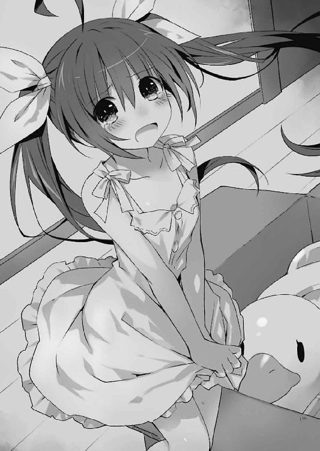
「ほら、ここで待っててやるから」
「うん......」
琴里が小さくうなずき、恐る恐るといった様子でトイレの扉を開ける。
「ひっ......！」
だが、その真っ暗な空間を目にした瞬間、息を詰まらせて後ずさった。
まあ、正直その気持ちもわからなくはない。士道でさえちょっと不気味だと思ってしまったのだ。今の琴里にはさぞ恐ろしげに映ったのだろう。
「無理......やっぱ怖い......！」
「そんなこと言ったって......じゃあどうするんだよ。漏れちまうだろ」
「うぅー......」
琴里はひとしきりうなったあと、何かを思いついたように声を上げた。
「お、おにーちゃんも入って！」
「は......はぁっ？」
突然の提案に、士道は眉をひそめて素っ頓狂な声を発した。
「な、何言ってんだよ。そんな──」
「じゃあおまるにする！ もしくはここで漏らす！ かくごかんりょう！」
「完了するなそんなもんッ！」
「もうだめ、限界！ 漏れるぅぅ！」
「あーもう......わかったよ！」
さすがに一四にもなる妹におもらしはさせられない。士道は琴里に手を引かれながらトイレに入っていった。
「おにーちゃん、後ろ向いてて......」
「お、おう......」
言われるままに、扉の方を向く。すると琴里が士道の背後でもぞもぞと動き始めた。するするという微かな衣擦れの音が響き、思わずどきりとしてしまう。
「あの、おにーちゃん......耳塞いでてくれる......？」
「！ あ、わ、悪い......」
気がつかなかった。慌てて両手で耳を覆う。すると琴里が両手を士道の身体に回し、ぎゅっと力を込めてきた。
......別に士道のせいではないのだが、なんだかとてもイケナイことをしている気がして、胸がバクバク鳴る。途方もない背徳感が肺腑を満たし、熱い吐息となって鼻から漏れ出ていった。
ほどなくして、身体から手が外され、トントン、と背がつつかれる。
「もういーよ。......ありがと」
「ん......おう」
言って、士道は琴里を伴い、トイレから出てきた。
ひとまずは問題解決である。士道は安堵の息を吐いた。
だが、次なる問題はすぐに──それこそトイレを出てから数分と経たぬうちに起こった。
「さ......こんなんじゃもう何もできないし、今日は早めに寝ちまうか」
士道が言うと、琴里が「えー......」と不満そうな声を発したのである。
「なんだよ」
「だって......まだお風呂入ってないんだもん......」
確かに、電子管理の湯沸かし器はストップしているだろうが、停電が起こってからそう時間は経っていないため、湯船に張られたお湯はまだ十分温かいままのはずだった。とはいえ......
「......おまえ、風呂場も真っ暗なんだぞ？ 入れるのか？」
「う......でも、身体ベタベタだし......」
「そりゃ、あんだけ騒いでりゃあなあ」
士道が言うと、琴里は「うぅー......」と唇を尖らせながらうなった。
「あ、あの、おにーちゃん......」
「おう、諦めたか？」
「で、できたら、お風呂も一緒に......」
「いやいやいや」
確かに昔はしょっちゅう一緒に入浴していたわけだが、さすがに二次性徴を迎えた妹と仲良くお風呂だなんてわけにはいかない。士道はパタパタと手を振った。
すると琴里が懇願するように、士道にはしっと引っ付いてくる。
「おにぃぢゃぁん......一生のお願いぃぃ......一緒にお風呂入っでぇぇ......」
涙声で訴えかけながら、ぐしゃぐしゃになった顔を向けてくる。士道は困ってしまって小さく息を吐いた。
「いや、さすがにそれは......」
「大丈夫、暗くて見えないし！ ていうか兄妹だし！」
「うーん......」
「おにぃぃぢゅあぁぁぁぁん......」
「わ、わかったわかった。入ってやるから放せって！」
鬼気迫る琴里の猛攻に、さすがに士道も折れざるを得なかった。諸手を上げて降伏を示す。するとようやく、琴里が身を離した。
「ったく......今日だけ特別だぞ」
そんな琴里を連れて、脱衣所まで歩いていく。そしてバスタオルと着替えを用意すると、琴里に背を向けて服に手をかけた。
「むー......」
だが、やはりまだ抵抗はあった。いくら兄妹とはいえ、年頃の男女が一緒に入浴などしてよいのだろうか......
少なくとも、琴里があちこちに吹聴して回ったら士道は社会的に死んでしまいそうだった。友人周りはもちろんのこと、両親にも言わないよう徹底しておかなければならないだろう。
士道がそんなことを考えていると、後方からするすると服を脱ぐ音が聞こえてきた。どうやら、もう琴里が入浴の準備を始めているらしい。慌てて士道も服を脱ぎ、洗濯カゴに放り込む。
「おにーちゃん......準備はいい？」
「お、おう......大丈夫だ」
明かり一つない屋内である。目が慣れ始めたとはいえ、琴里の姿はぼんやりとしたシルエットしか見えない。しかし目の前にいる妹が、一糸纏わぬ状態であるということを考えてしまうと、弥が上にも緊張してしまうのだった。
「おにーちゃん......？」
「ああ......悪い、入るか」
士道は風呂場に入っていくと、手探りで湯船の蓋を開け、湯船に身を沈み込ませた。
本当なら身体や頭を洗ってから入るのがマナーなのだろうが、今はこんな状態であるし、何より自宅の風呂で細かいことは言いっこなしである。
すると士道のあとを追うように、琴里も湯船に入ってきた。士道と向かい合うような格好で、バスタブの中に体育座りをする。二人分の体積と入れ替わりになったお湯が、ざぶんと溢れていった。
「あー......やっぱ風呂はいいな」
「う、うん......お湯に浸かってると、少し平気かも......」
膝と膝とを触れ合わせながら会話を交わす。だが恐怖感が薄れると同時に少し恥ずかしくなったのだろうか、それからしばしの間無言になった。
「............」
と、どれくらい経った頃だったろうか、琴里が何やら、意を決するように声を発してきた。
「ね、ねえ......おにーちゃん。ちょっとここ......狭くない？」
「ん？ まあそりゃこのバスタブは一人用だからな。ああ、もう大丈夫そうなら俺先に上がって──」
「そ、そーじゃなくて！」
ちゃぷちゃぷと水音が鳴る。どうやら手を振っているらしかった。
「その......そっちに行ってもいいかなー......って」
「え？」
士道が首を傾げると、返答も聞かぬまま、琴里がざばっとその場に立ち上がり、方向転換をして再び湯船に身体を浸けた。
そして、士道の上に座るような格好で身体を落ち着けてくる。
「いぃ......ッ⁉」
足に、腹に、胸に、琴里の柔肌がぴたりと張り付いてくる。突然の行動に、士道は思わず身体を硬くした。
......正直、油断していた。「一緒に風呂なんて......」と言いながらも、心のどこかに、何べんも一緒に入っているし、まさか間違いなんて起こりゃしないだろうという慢心があった。
だが、これはまずい。非常にマズイ。士道の上に腰を落ち着けた琴里から感じるのは、手の掛かる可愛い妹の重みではなく、瑞々しい色香の漂う女の感触だった。
しかしここで自制せねば、士道はもう引き返せなくなる。両親が海外出張から帰ってきたとき、新しい家族を紹介しなければならなくなってしまうかもしれない。
しかし琴里はそんな士道の思考になどまったく気付いていない様子で小さく笑った。
「えへへ......なんだ、おにーちゃんも怖いんだ」
「へ？ な、何が......」
「だって、すごいドキドキしてるよ？」
言いながら、さらに身体を押し付けてくる。
──今まさにあなたが怖いです！ 士道は心の中で叫びを上げた。
もう限界が近かった。一刻も早く琴里を遠ざけなくてはならない。
とはいえ、今の琴里は怖がりモードである。そう易々と士道から離れてくれるとは思えなかった。
「あ......、そうだ」
と、士道はあることを思いつき、口元を手で覆った。そして、しばしの間無言になる。
そんな士道を不審がったのだろう。琴里が声をかけてくる。
「おにーちゃん？ どうしたの......？」
そんな琴里に、士道は返答した。──思い切り、低く、怖くした声で。
「フ、フフ......モウ、オニイチャンハイナイヨ......」
「ひ......っ⁉」
琴里が息を詰まらせ、身体をビクッと震わせる。
そう。琴里が士道から離れたがらないなら、士道のことを怖がらせてやればいいのである。
「お、おにーちゃん⁉」
「コノカラダハボクガモラッタ......」
「そ、そんな......！」
「コトリチャン、イイニオイスル......オイシソウ......」
「き、きゃぁぁっ！ きゃぁぁぁっ！」
琴里が悲鳴を上げ、バタバタと手足を動かす。そして逃げるように湯船から立ち上がった。
よし......と士道は拳を握った。想定通りである。これでこのまま脱衣所の方に逃げてくれれば──
だが、
「おにーぢゃん！ おにーぢゃぁぁぁぁぁぁぁん──ッ！」
何を思ったのか琴里はぐるんと身体の向きを回転させると、再び身体を湯船に戻そうとしてきた。しかも慌てていたものだから、その際足を滑らせてしまったのだろう、勢い良く士道に倒れかかってくる。
「............⁉」
士道は顔面に微かに柔らかくて温かい物体がのしかかってくる感触を覚えると同時──悲鳴を上げた。それに驚いたのか、琴里も絶叫を上げる。
「ギャ────っ！」
「ギャ────っ！」
......しばらくの間、二人の大絶叫が風呂場に響き渡った。
「だ、大丈夫か......琴里......」
「う、うん......おにーちゃんは......？」
「おう、こっちも大丈夫だ......」
どうにか場を収め、パジャマに着替えた士道は、バスタブに打ち付けた後頭部をさすりながら声を発した。
いろいろとダメージは負ったものの、最悪の事態だけは回避できた。お兄ちゃんだけど愛さえあれば関係ないなんてわけにはいかないのである。
携帯電話の画面を見る。時刻は二三時を少し回ったくらいだった。
「歯も磨いたし、今日はもう寝るか」
「うん......そーだね......」
琴里がうなずき、自然な動作で士道の手を握ってくる。先ほどのこともあり、士道は少しだけドキッとしてしまったが......そこはお兄ちゃんのプライドで黙っていた。
と、士道が部屋に向かおうとしたところで、琴里が手を握る力を強める。
......まあ、今までの展開から何となく予想できていたことではあった。一応琴里の方を向き、訊ねてみる。
「どうした、琴里」
「......今日、一緒に寝ちゃ駄目？」
「......ですよねー」
士道は小声で呟くと、観念したように首肯した。
「いいよ。今日は特別だ」
「！ やった！」
琴里が声を弾ませる。
まあ風呂での一件に比べれば、同衾くらい何でもない。士道と琴里は一旦琴里の部屋に入って枕を回収すると、士道の部屋に歩いていった。そして、携帯電話を枕元の棚に放り、布団を捲り上げてベッドに入っていく。
「ほら、琴里。落ちないようにな」
「うん！」
琴里が枕を並べ、士道の隣に寝ころんでくる。士道はその頭を撫でると、布団をたぐって横になった。
「おやすみ、琴里」
「ん......おやすみ、おにーちゃん」
琴里が、小さな声で返してくる。詳しい表情は見てとれなかったが、なんとなく、微笑んでいるような気がした。
疲れもあったのだろう、士道はそれから一〇分と経たずに深い眠りに落ちてしまった。
その寸前、
「今日は......本当にありがと。──大好きよ、おにーちゃん」
なんて声が聞こえ、頰に柔らかい感触が押し付けられた気もしたが......それが夢なのか現実なのかは、よくわからなかった。
◇
〈フラクシナス〉艦橋のメインモニタに、二人仲良く並んで就寝する士道と琴里の姿が映し出されている。
そんな様子を見ながら、クルーたちはうんうんとうなずいたり、パチパチと拍手をしたり、感涙に噎び泣いたりしていた。若干一名、なんでトイレとお風呂の映像が出ないのですかぁぁぁぁぁ！ と嘆いていた者もいたが、まあそれは気にしなくてもよいだろう。
何にせよ、プレゼントは無事琴里に届いたようである。令音はモニタに目をやりながら、静かに呟いた。
「......ハッピーバースデー、琴里」
◇
「とうッ！」
「がおぅ......っ⁉」
次の日の朝。窓から差し込んでくる朝日とともに、腹部に生まれた鋭い衝撃に、士道は思わず身体を折った。
「ふん、がおうだって。ラインでもしてなさいよ」
高圧的な声。そこには、既に着替えを済ませた琴里が、口にチュッパチャプスをくわえながら立っていた。
──ちなみにその髪は、黒いリボンで括られている。
「琴里......おまえ、それ」
昨日は停電していたため、まだ琴里の黒リボンは洗えていないはずだったのだが......
「あ」
と、そこで士道は気付いた。
その黒いリボンが、琴里が五年間も使い続けたものとは思えないほど、綺麗な状態だったことに。
「それ......つけてくれたんだな」
そう。琴里が今つけているのは、昨日士道が贈ったプレゼントの中身だったのである。
何しろもともとの黒リボンは、五年前に士道が贈ってからずっと琴里が使い続けていたものだったのである。大事にしてくれていたようだが、経年劣化は避けようがない。生地はよれ、端々も綻び始めていた。
見かねた士道が、五年前と同じものを購入し、琴里に贈ったのである。
「まあ、士道にしては気が利くじゃない。褒めておいてあげるわ」
言いながら、琴里がトン、と士道の上から床に降り立つ。
「へいへい......」
士道は痛む鳩尾をさすりながら、ゆっくりと身を起こした。
「しっかし......なんだよ、早く起きたんなら一緒に起こしてくれればよかったのに。わざわざプレゼント開けて着替える前にでも......」
「ふん、自分で起きられないのが悪いんじゃない。──それに、プレゼントはちゃんと昨日のうちに開けたわよ。もらったものを一晩寝かせるような無礼はしないわ」
昨日とはまるで違う言動で捲し立ててくる。士道は可愛い妹を懐かしんではあと息を吐いた。
「なんだよ、昨日はあんだけおにーちゃんおにーちゃん泣いて......」
「マッハ突き！」
「ぐぎゃッ⁉」
全身の関節から生み出された加速が腹に打ち込まれる。士道は思わずその場にうずくまった。
「早く下りてきなさい。──簡単だけど、朝食の準備をしておいたわ」
「え？」
士道は目を見開いた。琴里はあまり料理が得意でなかったはずだが......
「珍しいな。用意してくれたのか？」
「......気まぐれよ。それに、味の保証はしかねるわ」
「そんなの関係ねえよ。ありがとうな」
「......ふん」
琴里はそう言うと、チュッパチャプスの棒をピコピコ動かしながら部屋を出ていった。
「......ん？」
と、そこではたと気付く。
先ほどの琴里の言葉が、妙に引っかかったのである。
プレゼントは昨日のうちに開けた......確かに琴里はそう言っていた。
しかし停電が起こってから、琴里はずっと士道と一緒だったはずだ。
もし琴里が一人になる機会があったとしたなら、士道が寝てしまってからの数十分間くらいだが......そうなると、あの状態の琴里が、深夜の真っ暗な家の中を、一人リビングまで歩いていったことになる。
もしそんなことが可能なら、トイレやお風呂も一人で入れたのでは......
「いや......んなわけないか」
士道は肩をすくめた。あんなにも暗闇を怖がっていた琴里に、そんなことができるはずはない。士道の隙をついて中身だけ確認していたのだろう。
「──士道！ 遅いわよ！」
「おっと......」
階段の下から怖い怖い妹様の声が聞こえてくる。士道は急いで部屋を出ていった。
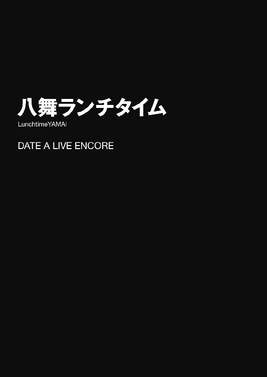
九月一日。夏休みが明けた、二学期最初の日。
昼休みの喧噪の中、五河士道は教室からほど近い階段を下りていた。
「くく......光栄に思うがいいぞ、士道。颶風の御子・八舞の糧を提供できるのだからな」
「感謝。ご案内ありがとうございます」
背後から、そんな声が聞こえてくる。士道は息を吐きながら後方をちらと見やった。
そこにいたのは、同じ顔をした制服姿の少女たちだった。
髪を一つに纏めた細身の少女がフフンと偉そうにふんぞり返り、髪を三つ編みに結ったモデルのようなプロポーションを誇る少女が、ぼうっとした様子でお辞儀をしている。
八舞耶俱矢に、八舞夕弦。先々月士道が力を封印した、双子の精霊たちだった。
「いや、むしろ悪いな。元はと言えばこっちの連絡ミスなのに」
「何、今日の我は寛容ぞ。何せ夕弦と一緒のクラスになれたのだ。夕弦は可愛すぎるからな。一人にしてはどれだけ悪い虫がつくかわからん」
「安堵。夕弦もほっとしています。耶俱矢のような超絶美少女を一人で飢えた狼たちの群れに解き放つなんて、考えただけで怖気をふるいます」
「いゃふふ......夕弦の方が可愛いってばー」
「否定。耶俱矢の方が可愛いです」
「このー、ゆーづーるー」
「反撃。かーぐーやー」
なんて言いながら、耶俱矢と夕弦が頰を染めながら指を絡ませあう。見ている士道が恥ずかしくなるくらいの仲睦まじさだった。
そう。八舞姉妹は今日付けで、来禅高校二年三組に転入してきていたのだった。
最初は士道と同じ四組への転入が検討されていたという話だが、二人揃ってさえいれば精神状態が十分に安定するとのデータから、隣のクラスへの転入が決まったらしい。
まあ、それはいい。そもそも二人は「新学期に転入してくる」という体で修学旅行に参加していたのだ。予想できた事態ではある。
だが、その日取りを、士道は今日まで教えられていなかった。
つまり──八舞姉妹の分のお弁当が用意できていなかったのである。
そのため士道たちは、一階の購買部へ向かっていたのだった。
「もうすぐだよ。そろそろ──っと」
と、士道はそこで足を止めた。前方から、見知った少女が現れたのである。
肩口をくすぐる髪をヘアピンで留めた、人形のような少女である。今はその手に、パンの入った袋と小さな牛乳パックを抱えていた。
「折紙じゃないか。おまえも今日購買だったのか？」
士道が言うと、少女──鳶一折紙はこくりとうなずいた。
「忙しいときは、たまに。士道も？」
「いや、今日は耶俱矢と夕弦がな」
「そう」
折紙は短く言うと、すたすたと階段を上っていった。
「納得。マスター折紙も贔屓にしているとなれば、期待できそうです」
その背を見送りながら、夕弦がうんうんとうなずく。そういえばなぜか夕弦は、修学旅行のときから折紙を師匠と呼んでいるのだった。
「ま......そこはパンによるかな」
苦笑しながら階段を下りていく。
そしてしばらく歩くと──前方から異様な熱気が伝わってきた。
「ほう？ あれは......？」
士道の後方にいた耶俱矢が、怪訝そうな声を上げる。
だがそれも無理からぬことだろう。何しろ一階・購買前には今、無数の生徒たちが群がり、まるで年末年始のバーゲン会場か、朝の通勤ラッシュのような様相を呈していたのだから。
「コロッケパン一つ！ あといちごオレも！」「うわッ、服引っ張んじゃねぇよ！」「いいカレーパンは俺に食われるカレーパンだけだ！」「なんとしても確保するのだ！」「メディック！ メディィック！」「畜生、なんでパンなんかのために！」
怒号が飛び交い、悲鳴が上がり、絶叫が耳をつんざく。
夥しい生徒数に対して販売員のおばちゃんが一人というアンバランスな配置が生み出した、苛烈な戦場がそこに展開されていた。
「うわ、やっぱ遅かったか。ちょっと待たないと買えないなこりゃ」
士道はぽりぽりと頭をかきながら呟くように言った。
一年の頃は何度か購買を利用していた士道であるが、スタートダッシュに失敗するとすぐにこの戦場が展開されてしまうのである。
だが。耶俱矢と夕弦はそんな合戦場のような購買前を見て、にぃっと唇の端を上げた。
「なんだなんだ、昂ぶらせてくれるではないか。牙を抜かれた家畜ばかりかと思うていたが、やはり闘争本能を裡に隠しておったか。くく、血湧くの、夕弦」
「興奮。悪くありません。先々月からの生活はとても快適でしたが、ぬるま湯に浸かりすぎて少し身体が鈍っていたところです」
耶俱矢と夕弦が視線を交じらせ、ザッと足を踏み出す。
「お、おい、二人とも」
「案ずるな士道。要はあの最奥の店主に金を払えばよいのだろう？」
「首肯。ならば話は簡単です。夕弦と耶俱矢に不可能はありません」
言うが早いか、耶俱矢と夕弦はまったく同時に駆け出した。
そして生徒たちの外縁部に達すると、夕弦がさっと片足をつき、手と手を組み合わせる。
「設置。──耶俱矢」
「おうとも！」
耶俱矢が叫び、夕弦の手に足をのせる。ちなみに耶俱矢が履いていた上履きは、いつの間にか後方に放られていた。
「はぁッ！」
裂帛の気合いとともに、耶俱矢の身体が軽々と宙に舞った。
そして生徒たちの頭上を飛び越え、購買の前に向かって放物線を描いていく。
だが──
「奥義・英雄撃墜ッ‼」
どこからかそんな声が響いたかと思った瞬間、耶俱矢の左方から凄まじい勢いで人影が飛び出し、耶俱矢に当て身を食らわせた。
「な......うきゃっ⁉」
耶俱矢が甲高い悲鳴を発し、空中でバランスを崩す。
そしてそのまま目的の着地点よりも随分手前の位置に転落すると、おしくらまんじゅうを繰り広げる生徒たちの中にのみ込まれていった。
「ぎょわぁぁぁぁっ⁉」
「戦慄。耶俱矢！」
夕弦が目を見開き、耶俱矢の名を呼ぶ。
と──その声に呼応するように、生徒たちの動きがピタリと止まる。
一瞬、夕弦の叫びに生徒たちが反応したのかと思ったが......違う。
理由はすぐに知れた。どこかから、ツンと鼻をつく刺激臭が漂ってきたのである。
「な、なんだこの臭い......」
顔をしかめ、鼻をつまむ。だがそれも無理のないことだった。鼻腔を通り、全身に強烈な不快感と嘔吐感を催させる異常な悪臭である。生ゴミと下水と動物の死骸と夏場の堀の水をブレンドして熟成させたのち、スカンクの放屁を適量浴びせかければこんな臭いになるかもしれない。一呼吸するだけで食欲を奪うような衝撃的な臭気だった。
その臭いに怯んだのか、生徒たちが鼻と目を押さえ始める。と、その隙を衝くようにして一つの人影が生徒たちの合間を素早く通り抜け、何やら買い物を済ませていた。
ほどなくして、その異様な臭気が搔き消え始める。すると一時食欲を失っていた生徒たちも調子を取り戻し、またも争奪戦が再開した。
──そして、それから数分後。
「う......きゅうぅぅ......」
人のまばらになった購買前で、背中にいくつもの足形をつけられた耶俱矢が、うつぶせの姿勢のまま、そんな情けない声を発した。
「確認。耶俱矢、大丈夫ですか」
夕弦が駆け寄り、手を差し伸べると、耶俱矢はその手を取ってよろよろと立ち上がった。先ほどから数分程度しか経っていないのに、なんだか妙にくたびれた感じがする。
「お、おのれ......何だ今のは......我を颶風の御子・八舞耶俱矢と知っての狼藉か......っ」
言うも、その言葉は空しく響き渡るだけだった。ひとしきり歯を嚙みしめたあと、はあと息を吐く。
「仕方ない......今は腹を満たし、身体を癒やそうぞ。夕弦、パンを」
「首肯。そうしましょう」
耶俱矢が夕弦に支えられながら、のたのたと購買に歩いて行く。
だが、陳列棚に並んだ商品を見て、二人は顔を曇らせた。
「店主、これしかないのか？」
「苦言。さすがにあんまりです」
それはそうだろう。何しろ粗方商品が狩り尽くされた棚には、袋に詰められたパンの耳が二つしか残っていなかったのだ。しかも、別売りのジャムは一つしか残っていない。
「すいませんね。でも、それしかありませんよ」
購買のおばちゃんが、今目の前で乱戦が繰り広げられたとは思えないほど落ち着き払った様子で返す。二人はしばしの間悔しそうにうなっていたが、やがて観念したように金を払い、ゆっくりした足取りで士道のいる方へ戻ってきた。
と、その道中。
横から小柄な少女が走ってきたかと思うと、どん！ と耶俱矢と夕弦にぶつかった。
「うぐっ⁉」
「警戒。何者です」
二人が眉をひそめる。すると少女はハッと顔を上げ、ふるふると肩を震わせた。
「す、すいません、急いでて......」
言って、今にも泣いてしまいそうな表情を浮かべる。
その弱々しい様子に、苛立っていた八舞姉妹も毒気が抜かれたのだろう。息を吐くと「気にするな」というように手をひらひらとさせた。
そうしてから、二人が士道のもとに戻ってくる。士道は思わず苦笑してしまった。
「災難だったな......」
「う、うるさいっ！ こんなんたまたまだし！ 私たちの実力はこんなもんじゃないし！」
「憤慨。その通りです。耶俱矢への侮辱はいくら士道とはいえ看過できません」
「い、いや別に侮辱なんて......って、おい、おまえら」
そこで士道はおかしなことに気づき、二人の手元を指さした。
「今買ったパンはどこやったんだ？」
「何？」
「疑問。何を」
二人は首を捻りながら自分の手元を見、ハッと顔を戦慄に歪めた。
それはそうだろう。今の今まで持っていたパンの耳が、指で摘んでいた袋の先端部のみを残して忽然と消え去っていたのである。
「な......これは......」
「困惑。パンは一体どこへ......」
「──ふふ、ふふふふ、ふぁーッっはっはっは‼」
と、二人が辺りに視線を放っていると、どこからともなく甲高い哄笑が響いてきた。
「な、何奴⁉」
耶俱矢が叫ぶと同時、前方にバッと人影が躍り出てきた。そしてそのまま廊下に手をついて華麗な前転を連続し、最後に二回転宙返りを決めてその場に降り立つ。
長身の男である。トサカのように刈り込まれた頭に、鋭い目。なぜか制服の袖が肩口で千切ってあり、両腕はバンデージで固められていた。ちなみにその腰には、焼きそばパンとフルーツ牛乳が下げられている。
「甘い。甘すぎる。その程度で購買を利用しようとしていたのか？」
「は......？」
士道がポカンとしていると、次いで柱の陰から、白衣の男が現れた。縁の曲がった丸眼鏡に、瘦せた体軀。見るからに科学者然とした姿である。ちなみに手にしているのはハムたまサンドとコーヒー牛乳だった。
「くきき......まぁ、歓迎させてもらうよ。ようこそ新兵諸君。我らの戦場へ」
言って、バッと白衣を翻す。白衣の内側に、栓をされた幾本もの試験管が吊られているのが見えた。
全員が怪訝そうな顔をしていると、またも柱の陰から生徒が一人、現れる。
何やらサンタクロースのように、大きなビニール袋を背負った少女である。よくよくみると、それが先ほど姉妹にぶつかった女子生徒であることがわかる。
「驚嘆。あなたは」
夕弦が言うと、少女は先ほどの弱々しい調子が噓のように嘲笑めいた笑みを浮かべた。
「きゃはは、そんなんじゃいつまで経ってもパンは食べられないわよーん？」
言ってビニール袋から、包装の端が切り取られたパンの耳を取り出し、ポン、ポンと弄んでみせる。
「！ あれは！」
「凝視。夕弦たちのパンの耳です」
耶俱矢と夕弦が視線を鋭くし、三人を睨め付ける。
「おのれ貴様ら、何者だ！」
耶俱矢が叫ぶと、三人はフッと不敵な笑みを浮かべた。
「ふ......ならば名乗ってやろう！」
トサカ頭の男がバッと両手を広げ、片足を上げる。
「体操部で鍛えし強靱な脚力としなやかな身のこなしで、群がる凡百共全ての上を往く！ 空中の貴公子──〈吹けば飛ぶ〉鷲谷瞬助！ 至高の逸品は焼きそばパン‼」
「なんだその異名。つか、普通そういう煽りって自分で言うか......？」
士道は眉をひそめて目を細めた。
だが三人はまったく意に介していないらしい。次いで白衣の男が眼鏡をクイと上げてから身を反らし、なんだか知的に見えなくもないポーズを取った。
「科学部の部費を濫用し、特殊調合した芳香剤で戦士たちの食欲を奪う！ 死へと誘う芳香──〈異臭騒ぎ〉烏丸圭次！ 至高の逸品はハムたまサンド！」
「......なんつー迷惑な......」
最後に、ビニール袋を背負った少女があざといポーズを取る。
「その可愛らしい容姿で相手を油断させ、刹那の早業でパンをスリ盗る！ 幻惑の魔術師──〈おっとごめんよ〉鷺沼亜由美！ 至高の逸品は人から盗ったもの！」
「いやそれ普通に犯罪じゃねえか！」
「きゃはは、見くびらないでよねぇ。──ポケットをご覧なさい！」
「何？」
言われて耶俱矢と夕弦がスカートのポケットを探り、目を丸くした。
「これは......小銭が入っておるぞ」
「驚愕。パンの耳の代金分です」
三人はフフンと鼻を鳴らすと、そのまま目線で合図を送りあい──
『──我らこそは、来禅高校購買四天王‼』
深く息を吸ってから、大声でそう名乗りを上げた。
......なぜだろうか、八舞姉妹（特に耶俱矢）と波長が合いそうな連中だなあと、なんとはなしに士道は思った。
「四天王......だと？」
耶俱矢が戦慄した様子で声を発する。すると三人は悪役めいた笑みを浮かべた。
「ふふ、その通り。来禅高校購買部を統べる最強の戦士たち！ それが我ら四天王！」
「くきき、珍しい顔を見つけたので、少し挨拶をさせてもらったよ」
「きゃはは、でもぉー、もうここに来ない方がいいんじゃなーい？ ちょっと弱すぎー」
四天王が口々に言い、笑う。八舞姉妹がムッと視線を険しくした。
「何だと⁉ 貴様ら、颶風の御子たる我ら八舞を愚弄する気か！」
「憤慨。侮辱は許しません」
だが士道は、そんな緊迫した空気の中、ぽりぽりと頰をかいていた。
いろいろ気になることはあったものの、それ以前に大きな突っ込みどころが存在したのである。
「四天王って......三人しかいねぇじゃねえか」
しかし三人は、そんな質問など想定内というように肩をすくめた。
「ふふふ、『あのお方』は四天王最強。滅多なことでは姿を現さぬわ！」
「そう、通称〈完璧主義者〉。いつの間にかパンを手にしている謎に満ちたお方......」
「私たちにすら勝てないあなたたちが会えるお方じゃないのよー」
四天王が嘲るように言ってくる。別に士道は何とも思わなかったのだが、八舞姉妹は違ったらしい。いきり立つように奥歯を嚙みしめる。
「おのれ、ただで帰れると思うなよ。我らを虚仮にしたその代償、命を以て贖ってもらうぞ！ 煉獄の檻に囚われ、己の罪を悔いるがいい！」
「宣戦。数々の非礼、もはや捨て置けません。あなた方に決闘を申し込みます」
だが、四天王は二人の鋭い眼光に晒されてなお、余裕ぶった笑みを崩すことはなかった。
「ふ......今宵の戦いはもう終結している。無粋なことを言うな」
「くきき、だが、その意気は買おうじゃないか。我らは購買にて最強。我らを前にして、目当てのパンを手にできるものなどいはしない」
「挑戦はいつでも受けるわよぉー？ そうねぇ、さしあたっては......」
言いながら、〈おっとごめんよ〉鷺沼が購買の脇に貼ってあったカレンダーに目をやる。
「あら、ちょうどいいじゃなーい。次の月曜日、月一の限定パンが発売されるわ。今月はレインボークリームパンね。それを先にゲットした方の勝ち......というのはどぉーお？」
そんな甘ったるい声に、八舞姉妹はフンと鼻を鳴らし、うなずいた。
「よかろう。購買の借りは購買で返してくれる。貴様らにパンの耳を齧らせてくれるわ！」
「宣言。その言葉、後悔させてあげます」
耶俱矢と夕弦がビッと四天王に指を突きつける。三人は愉快そうに肩をすくめたあと、嘲るように士道の方を見てきた。
「ふ......威勢のいい弟子たちだな、〈無反応〉」
「くきき、蒙昧なる弁当派に堕ちたと聞き及んでいたが、まだ貴様にも購買士の誇りが残っていたというわけか」
「でぇもぉ、こんな子たちじゃ私たちの相手は務まらないわよぉ？」
「......は？」
聞き覚えのない異名に士道は首を傾げた。だが、周囲にそれらしき人物はいない。
「お、俺のことか？」
「何を言っている。当然だろう〈無反応〉。一年前、我が空中殺法、烏丸の死の芳香、そして鷺沼の盗法──それら全てを難なく退け、意中の至高の逸品、カツサンドを手に入れた剛の者よ」
「おい待てなんだそれ初耳だぞ」
士道はたまらず声を上げた。確かに一年の頃は何度か購買を利用していたし、カツサンドがお気に入りだったのも確かである。だがそんな名は一度も聞いたことがなかった。
「何を言う。貴様、我らとの熱戦を忘れたというのか？」
「いや、だから......」
「ふ──とぼけるのであればそれもいいだろう」
「くきき、どちらにせよ、貴様の弟子たちはやる気のようだしね」
「きゃはは、まあどうせ無駄だと思うけどぉ」
食い下がるも、最後まで話は聞いてもらえなかった。四天王が悪役笑いを廊下に響かせながら、どこかへ去って行く。
耶俱矢はその背が見えなくなるまで鋭い視線を放ち、ダン！ と廊下を踏みしめた。
「くそッ、虚仮にしおって！ 目に物見せてくれる！」
「同意。二度同じことは言わせません。──しかし、夕弦たちが敗北したのは事実です。その汚名を雪ぐためには、特訓をして強くならねばなりません」
「特訓......」
そう言って、耶俱矢と夕弦が士道の方に視線を送ってくる。
士道は、全身を通り抜ける嫌な予感に、顔中に汗を浮かべた。
◇
翌日。九月二日・土曜日。
「ふぁあ......」
上下揃いのジャージに身を包み、額に鉢巻きをして片手に竹刀を握らされた士道は、眠たげに大きなあくびをした。
無論、好きこのんでこんな格好をしているはずはない。
身に覚えのない異名が原因で、八舞姉妹に特訓のコーチを依頼されてしまったのである。
「別に俺は普通の格好でいいと思うんだけどなあ......」
今士道がいるのは、無機的な灰色で構成されたホールだった。空中艦〈フラクシナス〉の中にある仮想訓練室である。
なんでも、顕現装置と艦内設備を併用することによって、様々な環境を再現することができるらしい。特訓ということで琴里が提供してくれたのだ。
と、士道が眠気を嚙み潰していると、特徴的な口調に飾られた声が二つ、聞こえてきた。
「くく......情けない。まだヒュプノスの呪縛から逃れ切れておらぬと見える」
「挨拶。おはようございます」
どうやら八舞姉妹も到着したらしい。士道は目を擦りながら声のした方に目をやり──
「ああ......おはよ──、......ッ⁉」
一瞬、身体を硬直させた。
何しろ彼女らが身に纏っていたのは、近く絶滅危惧種に指定される運びと噂される、ブルマタイプの体操着だったのである。
胸元にそれぞれ『かぐや』『ゆづる』と書かれた白い布地が二人の肢体を包み込み、その下に、現代高校生男子の憧れ・ブルマが鎮座している。ちなみに耶俱矢はシャツをブルマの上に出しっぱなしにしており、夕弦は裾をブルマの中にしまい込んでいた。
「ほう？ 何故かは知らぬが目が覚めたようではないか」
「発見。士道の視線にいつもよりも熱が籠もっている気がします」
「かか、それだけ気合いが入っておるというわけか。上等ではないか」
「疑問。そうなのでしょうか」
耶俱矢が快活に笑い、夕弦が小首を傾げる。士道は一瞬にして冴えた目を泳がせながら声を発した。
「おまえら、なんだその格好......」
「ああ、これか。琴里が用意しおった。なんでも聞くところによると、この国に古くより伝わる正統な訓練装束という話ではないか」
「評価。確かに動きやすいです。特に脚部の機動性は素晴らしいかと」
「......そ、そうか」
二人が気に入っているのであれば構うまい。士道は頰をかいた。
「さあ、士道よ。さっそく訓練を始めようではないか。貴奴らに勝つために！」
「請願。よろしくお願いします。あのジャムの苦さは忘れません」
言って、二人が力強くうなずく。
そういえば耶俱矢と夕弦はあのあと、士道が弁当を分けてやるというのも聞かず、二人で一つ残ったジャム袋を交互にしゃぶって飢えを凌いでいたのだった。なんでも、敗北の味を嚙みしめることで、復讐の牙をより鋭く研ぐためなのだという。
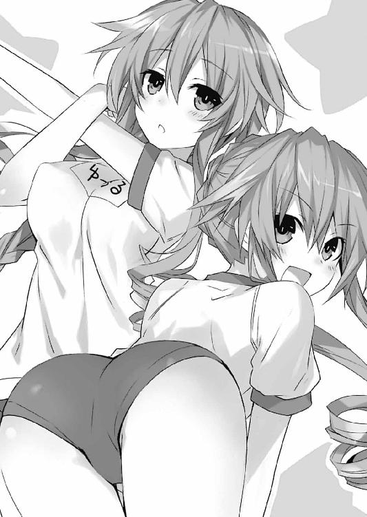
士道は乾いた笑いを浮かべると、二人に向き直った。
「......要は、あの三人の妨害を退けてパンを買えればいいんだろ？」
「おうとも。あとはあの冒瀆者共に生涯消えぬ恥辱を与えられればさらによいがな」
「首肯。どのようなメニューをこなせばいいのでしょうか」
二人がうなずいてくる。士道はポケットからメモ帳を取り出した。
昨日令音といろいろ協議した結果、存外容易く対処法が導き出せたのである。
「ええと、まずはだな──」
士道は四天王の攻略法を順に、わかりやすく説明していった。
「ほう......なるほどな」
「理解。よくわかりました」
八舞姉妹がふうむとうなずく。士道はメモ帳を閉じると、ポケットにしまい込んだ。
「まあ、そんな感じだ。そこにだけ注意すれば何とかなると思うぞ」
「ふむ。して、我らは何をすればいいのだ？」
「え？」
耶俱矢に問われ、士道は素っ頓狂な声を発した。
「確認。では改めて。夕弦たちは今から、どのような訓練をすればいいのでしょうか」
「いやー......正直言うと、別に必要ないと思うぞ」
士道は眉根を寄せながら言った。別に噓を吐いているわけでも、訓練に付き合うのが嫌で適当なことを言っているわけでもない。ただ事実として、そう思ったのだ。
「だって、普通に考えてみろよ。霊力を封印されたっていっても、おまえらの身体能力は人間よりずっと上なんだぞ？ 昨日は不意を突かれただけで、ちゃんと対処すれば負けようがないって。それに訓練って言っても、そんな劇的に何かが変わるわけでも──」
「何を申すか！」
士道の言葉は、耶俱矢の一喝によって遮られた。
「我らは一度敗北を喫したのだぞ！ それを雪ぐためには地獄のような特訓を経て生まれ変わったニュー八舞となるしかなかろう！」
「同意。主人公は物語の中盤で厳しい修行の末、新技を会得するものなのです」
耶俱矢と夕弦が熱っぽく訴えかけてくる。どうやら、成果の有無とかではなく単純に特訓がしたいだけらしい。......そういえば、夏休み中八舞姉妹が揃って少年漫画にハマっていたと琴里が言っていた気がした。
「わ、わかったわかった」
士道はずずいと迫ってくる二人を制すると、適当な訓練メニューを思い浮かべた。
「あー......じゃあ、とりあえず準備運動してランニングでもしとくか」
と、士道がそう言った瞬間。壁にザザッとノイズが走ったかと思うと、辺りの景色が一瞬のうちに広い高原に変貌した。
「お、おおっ⁉」
士道は目を見開いた。なるほど、これが仮想訓練室の機能らしい。
耶俱矢と夕弦も驚いたように辺りを見回したあと、うむ、とうなずいた。
「くく......韋駄天疾走か。まあ良かろう。まずは肩慣らしだ」
「承諾。わかりました。耶俱矢、競走です」
「いや、ランニングって別に競走が目的じゃないぞ......」
士道が言うも、二人は気にしていないようだった。どうやら仲良くなったあとでも、勝負好きなところは変わらないらしい。
申し訳程度の柔軟をしてから、同時にその場から走り出す。
「どぉありゃぁぁぁぁぁぁっ！」
「疾走。とーう」
二人とも、いきなり全力疾走だった。短距離走のような速度で併走しながら、士道の周りをぐるぐると回り始める。
だが、いくら精霊といえど、そんな勢いがいつまでも続くはずもない。ほどなくして、二人の速度が目に見えて衰えだし──やがて、びたーん、と夕弦がその場に突っ伏した。
「限......界......。うくぅ......っ」
「や......はは......我の......勝──」
一拍遅れて、耶俱矢もその場に倒れ込んだ。
「お、おい、二人とも！」
しばらくして、八舞姉妹が呼吸を整え、むくりと起きあがる。
「くく......どうやらこの勝負は我の勝ちのようだな」
「無念。さすがです、耶俱矢」
「いや、もともと我に有利な勝負ではあったからな。夕弦の粘りには驚嘆したぞ」
「疑問。有利、とは」
「......や、まあ、別にいいじゃん」
耶俱矢がそう言いながら一瞬、夕弦の重量感溢れる胸元に視線をやったのを士道は見逃さなかったが......まあ、いろいろ面倒なことになりそうなので言わずにおいた。
「ま、まあとにかく、我の勝ちである！ わかっているな、夕弦」
「観念。く......仕方ありません。一枚でしたね」
「......一枚？ 何の話してるんだ？」
士道が首を捻ると、耶俱矢がニヤニヤしながらやってきて、首根っこを摑み、半ば無理矢理夕弦から目を背けさせられた。
「痛っ、何するんだよ耶俱矢！」
「くく......いいから黙って待っているがいい。良きものが見られるぞ？」
「は......？ 何言って......」
と、士道が眉をひそめていると、後方からするするという衣擦れの音が聞こえてきた。
「おい、夕弦は何してんだ？」
「なに、先ほど取り決めを交わしてな。訓練にも緊張感をもって臨まねばならぬということで、負けた方はその都度衣服を一枚脱いでいくということにしたのだ」
「は......はぁッ⁉ ちょ、ちょっと待て、なんでそうなるんだよ！ ていうか今のおまえらの格好から一枚って、一発で致命傷じゃ──」
「完了。もう大丈夫です」
士道が言い終わる前に、背後から夕弦の声が聞こえてくる。
耶俱矢が一足早く振り返り、「ほほぉう......」とにやついた笑みを浮かべた。
「ほうれ、士道も見てみるがよい」
「ちょっ、まだ心の準備が......」
先ほどと同じ要領で首を回され、顔を夕弦の方に向けられる。
そこには、少し恥ずかしそうに頰を染めた夕弦が立っていた。だが、一目見た限りだと、先ほどと変わった様子は見受けられない。
が、士道はすぐに違和感に気付いた。夕弦は今その手に、やたらとサイズの大きなブラジャーを携えていたのである。
よくよく見てみると、先ほどより胸元にボリュームがある気がした。夕弦が軽く身体を動かすだけで、胸に書かれた『ゆづる』の文字が大きくたわむ。
「な......っ⁉」
「かか、どうだ士道、たまらぬであろ？ 縛めより解き放たれし怪物が荒ぶっておるわ」
耶俱矢が心底楽しそうに言ってくる。士道は顔を真っ赤に染めた。
「な、なんで中から......」
「説明。こうするのが作法と習いましたが......」
「それ教えたの絶対令音さんだろ⁉」
士道が叫ぶも、夕弦は意に介していないようだった。胸元を押さえながらゆっくりと歩いてくる。
「提案。士道、次なる訓練に希望があるのですが」
「......希望？ どんなだ？」
「返答。忍耐を鍛える修行......ずばり、滝行です」
「滝行......って、滝に打たれるやつか？ そんなのここじゃ──」
士道が言いかけたところで、周囲の景色にノイズが走り、山中の滝に変貌した。
しかも、触れてみると本当に冷たい。どうやら、水は本物を使っているらしい。
「はは、なんでもアリだな......」
士道が苦笑していると、耶俱矢が一歩進み出た。
「くく......まあ我は構わぬがな。要は長く耐えられた方の勝ちということであろう？」
「肯定。そういうことです」
耶俱矢と夕弦は視線を交わすと、そのまま躊躇いなく滝の真下に入っていった。
「お、おい、ちょっと待て！ 今それはマズいだろ！ 特に夕弦！」
「うきゃっ！」
「驚愕。......予想以上に冷たいです」
だが、もう既に二人の中では勝負がスタートしているらしかった。奥歯を嚙みしめ、修行僧のように手の平を合わせて直立する。
「ちょ......っ」
士道は思わず目を逸らした。
それはそうだ。あんな薄着状態で滝に打たれているものだから、体操着が二人の身体にぴったりと張り付き、肌が透けて見えてしまっているのである。
ブラを着けている耶俱矢の方はまだいいが、夕弦の方などもうまともに直視できない。士道は湯気が出るのではと思えるほどに顔を赤くし、視線を逸らした。
「うぐ......」
「忍耐。............」
それからしばらく二人は頑張っていたようだったが、すぐに全身をガタガタと震わせ始めた。
「ああっ、もももう限界......ッ！」
やがて、唇が真っ青になった耶俱矢が、肩を抱きながら滝の下から駆け出してきた。
「だ、大丈夫か⁉」
二人が勝負をしている間に用意しておいたバスタオルで身体をくるんでやると、耶俱矢は全身を震わせながらその場に蹲った。
「勝......利......。こ、こここの勝負は夕弦のかかか勝ちですすすす」
次いで、夕弦がそう言いながら歩いてくる。歯の根が鳴っているためか、うまく言葉が発音できていなかった。夕弦にも、同じようにバスタオルをかけてやる。
すると辺りの風景が高原に戻り、どこからともなく暖かな風が吹いてくる。
ほどなくしてようやく落ち着いたのだろうか、蹲っていた二人が顔を上げた。
「くぬ......さすがは我が半身よ。やりおるわ」
「賞賛。いえ、この勝負は先ほどとは逆で、皮下脂肪の多い夕弦に有利でした。耶俱矢の健闘に拍手を」
「うぐ......」
耶俱矢が悔しそうに顔を歪める。が、すぐに気を取り直すように息を吐くと、バスタオルを翻してその場に立ち上がった。
「......まあ、仕方ない。約束は約束だ。後ろを向いておれ」
「や、もうそれはいいんじゃ......」
「夕弦がやったというのに、我だけ逃げるわけにはいかぬっ！」
耶俱矢はきっぱりと言うと、士道と夕弦に後ろを向かせた。
そして先ほどのように、カサカサと衣擦れの音を響かせる。......なんというか、もの凄くいけない光景が背後で展開されている気がして、士道は思わず息を吞んでしまった。隣の夕弦が、「吐息。えっちですね」と半眼を送ってくる。
「......もうよいぞ。その両の目に我が姿を映すことを許す」
「お、おう......」
士道は恐る恐るといった調子で振り向いた。
そこにいた耶俱矢は、やはり一見した限りでは先ほどと何ら変わらなかった。だがその手には夕弦と同じように──
「て、違ッ⁉」
士道は思わず叫びを上げた。耶俱矢が手にしていたのはブラの方ではなく、下──要するにパンツの方だったのである。
「一枚だ！ これで文句あるまい！」
「納得。考えましたね、耶俱矢」
夕弦が妙に感心した様子で腕組みをし、ふうむとうなずく。
「い、いや、おまえらなぁ......」
「誘導。士道、耶俱矢をよく見てください。見た目は先ほどと変わりませんが、あの布一枚を隔てた向こうにはめくるめく幻想が広がっています。たまらないでしょう」
「う、ぐ......」
夕弦が士道に身を寄せ、囁くように言ってくる。士道はその想像と夕弦のひんやりした肌の感触とで、さらに頰を赤くした。
そんな様子を見てか、恥ずかしそうに身を捩りながら、耶俱矢が口を開いてくる。
「次の訓練は我がもらうぞ。そして夕弦の恥ずかしい姿をゆるりと観賞させてもらう！」
「否定。次も勝利するのは夕弦です。そして羞恥に震える耶俱矢を可愛がるのです」
言って、二人が視線を交じらせあう。......仲がいいのは確かなのだが、なんというか若干お互いを好き過ぎる気がした。
だが、そんな二人を放置しておいたのでは大変なことになる。士道は慌てて首を振った。
「す、ストップ！ 次の訓練メニューは俺が決める！ いいな！ コーチだかんな！」
高らかに宣言すると、耶俱矢と夕弦が興味深げに士道を見てきた。
「こ、ここからは個別メニューだ！ そうだな......とりあえず耶俱矢は腹筋！ 夕弦は腕立て！ それぞれ一〇〇回！」
ビッ、ビッとそれぞれに指示を出す。だが二人は、どこか不満そうに顔を歪めた。
「何？ メニューが違うのか？ それでは勝敗が解らぬではないか」
「要請。それに、回数が定められていては両方が達成してしまう場合があります」
まあ正直、士道としてはそれが目的だった。
同じメニューでなければ勝敗は決まらない。つまり、これ以上衣服を脱ぐことがないということである。
「目的を見失うなって。これは何のための訓練だ？ あの四天王とかいう奴らに勝つためだろ？」
「む......」
「思案。............」
士道の言葉に、二人は黙り込んだ。
......先ほど「別に訓練は必要ない」と言った男の言葉ではあったが、存外素直に聞き入れてくれたらしい。しぶしぶといった様子ではあるが、二人がうなずいた。
「......確かにその通りだ。夕弦があまりに可愛すぎていじめたくなってしまった」
「反省。夕弦もです。耶俱矢の可愛さに自分を抑えられなくなっていました」
耶俱矢と夕弦は顔を見合わせると、力強く首肯した。
「よし！ ではやるか、夕弦！」
「首肯。はい、耶俱矢」
二人がうなずき合う。士道はほっと胸を撫で下ろした。
が、二人はなぜかその場に寝ころぶこともなく、士道の前に立ったままだった。
「......どうしたんだ、二人とも」
「ああ、普通に腹筋をするだけでは負荷が足りぬ。そこで我が士道の腹に足を絡ませ、そのまま腹筋をするというのはどうだ？ これならば筋力アップは確実だ」
「提案。普通の腕立て伏せでは緊張感が足りません。そこで士道に仰向けに寝ていただき、その上で夕弦が腕立て伏せをするというのはどうでしょう。もし失敗したなら辛抱たまらなくなった士道に好き放題されてしまうという緊張感が有効に──」
「き、却下！」
士道は叫ぶと、耶俱矢、夕弦ともに、筋トレの回数追加を命じた。
◇
翌週、九月四日の昼休み。
購買の前には、先週ほどではないものの、既に何人かの生徒たちの姿があった。皆パンをもとめ、狭い購買の前で乱戦を繰り広げている。
が、士道と八舞姉妹は、その乱戦に参加することもなく、ただ一点を見つめていた。
──正面に立った、やたらと目立つ三人組の姿を。
「ほう......逃げずに来たか、〈無反応〉とその弟子よ。その勇気だけは褒めてやろう」
「くきき、しかしそれは蛮勇に過ぎぬよ。己が身の未熟さを嘆き、パンの耳を齧るがよい」
「きゃっはは、駄目よー。たとえパンの耳であろうと奪い取ってあげるんだからぁ」
購買四天王が、不敵な笑みを浮かべながら八舞姉妹と相対している。
耶俱矢と夕弦はキッと視線を鋭くした。
「くく......その台詞、そのまま貴様等に返してくれよう。我ら八舞に盾突いたことを後悔するがいい！」
「敵対。その通りです。今日こそは負けません」
その言葉を聞いてか、〈吹けば飛ぶ〉鷲谷が額を押さえる。
「よかろう。限定パンの数量は二〇。そろそろ残りも僅かとなってきただろう。──では、尋常に勝負！」
その声と同時、八舞姉妹と四天王が地を蹴った。
とはいえ、双方まずは購買の前に展開している人垣をなんとかせねば、パンのもとに辿り着くことはできない。
「耶俱矢！ 夕弦！ 作戦Ａだ！」
士道が戦場の外縁から指示を発すると、耶俱矢と夕弦はこちらを振り返らぬまま、ビッと親指を立てた。
「用意。耶俱矢！」
「おうとも！」
夕弦が手を組み合わせ、耶俱矢がそれを足場にして跳び上がる。
が、それを狙って、併走していた鷲谷がニッと唇の端を歪めた。
「ふ、前と変わらぬではないか！」
そして近くの生徒の背を足場にし、耶俱矢目がけてジャンプをする。
「奥義・英雄撃──」
「今だ！ 夕弦！」
鷲谷が耶俱矢に空中で当て身を食らわせようとした瞬間、士道は声を張り上げた。
「了解。心得ました」
すると廊下に膝をついていた夕弦がそのまま助走をつけて上空に跳び上がり──
「一撃。えいやっ」
気の抜けた声とともに、右足を鋭く蹴り上げた。──空中にいる鷲谷の鳩尾目がけて。
「はぅお......ッ⁉」
鷲谷が凄まじい苦悶を発する。が、それだけでは終わらない。
「くく......堕ちろ、旧き王よ！」
耶俱矢が空中で身を捻ったかと思うと、そのまま鷲谷の後頭部に踵落としを叩き込んだのである。
蹴り上げと踵落としをほぼ同時に食らった鷲谷は、ぐるんと縦回転して廊下に突き刺さった。ピク、ピクと足の先が弱々しく動く。
「く、鷲谷がやられた⁉」
「な......で、でも調子に乗らないことね！ 鷲谷は四天王の中でも最弱の存在！」
そう言って、〈おっとごめんよ〉鷺沼が、妙に気持ちの良さそうな顔を作った。どうやら、一度言ってみたかった台詞だったらしい。
しかし、油断はできなかった。四天王はまだ二人残っているのである。
「食らえ！ 我が死の芳香を！」
〈異臭騒ぎ〉烏丸がバッと白衣を広げ、両手の指で何本もの試験管を挟み込む。
そのアクションを見て、士道はまたも声を張り上げた。
「二人とも！ 作戦Ｂ！」
『‼』
地面に降り立った耶俱矢と夕弦は、士道の声に弾かれるように、腰に下げていたゴーグルを装着した。
辺りに凄まじい悪臭が漂い始め、他の生徒たちが顔をしかめる。が、八舞姉妹は平然とした様子だった。それもそのはず、そのゴーグルは、ダイビングなどに使う、鼻までをすっぽり覆うタイプだったのである。
「な......ッ！」
烏丸が狼狽に満ちた声を発し、顔を驚愕に染める。
八舞姉妹は烏丸に肉薄すると、その手から凄まじい臭いを放つ試験管を奪い取り──
「くく......そんなにこの臭いが好きなのであれば」
「哄笑。ずっと嗅がせてあげます」
悪魔のような笑みを浮かべ、烏丸の首もとに試験管の中に入っていた液体を流し込んだ。
「ぎィやぁぁぁぁぁぁぁぁぁぁッ⁉」
断末魔のような絶叫を上げ、烏丸がその場にくずおれる。一層凄まじい臭いが、辺りに充満した。
「うわぁ......」
さすがに不憫になって、士道は顔をしかめた。あの液体が何で調合されているかはわからないが、しばらく臭いが取れないだろう。
「く......何よ二人とも！ 情けないわねぇ、こうなったら私が──」
言って、鷺沼が八舞姉妹に忍び寄ろうとする。
が、すぐに二人の視線に射竦められ、その場に立ち止まった。
一昨日、対四天王用作戦要領を二人に説明した士道ではあるが、もっとも簡潔に済んだのがこの鷺沼対策なのである。
一言で言うと......『盗られないよう気を付ける』。
そもそもパンをスリ盗るだなんて、よほど上手く隙を衝かないとできることではない。
こちらが注意しているだけで、その成功率は格段に落ちるのであった。
これでもう、八舞姉妹の行く道を遮るものは何もない。二人は小さくうなずき合うと、五百円玉を握りしめて購買に突貫した。だが──
「鷲谷！ 〈無反応〉を！」
鷺沼の声が響いたかと思うと、先ほどまで地面に蹲っていたはずの鷲谷が突然背後に現れ、士道を羽交い締めにしてきた。
「な......！」
士道の声に気付いたのだろう、耶俱矢と夕弦が振り向き、顔を戦慄に歪める。
そんな様子を見てか、鷺沼が悪そうな笑みを浮かべた。
「そうよ、指示を出していたのは〈無反応〉。こちらを叩けばよかったのよ。──烏丸！」
鷺沼の呼び声に応じるように、異臭を漂わせた烏丸がゆらり......と起きあがった。
「く、きき......もう、こうなってしまったら、何もかも腐臭の底に沈めてくれる！ ほぉーら、私の頰ずりを受けても無反応でいられるかな、〈無反応〉よっ！」
と、（若干鼻声で）言いながら、ゾンビのような挙動で士道に迫ってくる。彼が一歩歩くたび、鼻の曲がりそうな臭いが士道を襲った。
「う、うわぁぁぁっ！」
たまらず、叫びを上げる。
「貴様ら......ッ！」
「憤慨。卑怯です」
耶俱矢と夕弦は怒りに顔を歪めるも、もう彼女らの周りには新たな生徒たちの人垣ができてしまっていた。どうにかその合間を縫って士道のもとに駆けつけようとしているらしかったが、二人がこちらに戻ってくる前に、士道は〈異臭騒ぎ〉の熱い抱擁を受けてしまうだろう。
「ほぉーらー、貴様も私と同じ臭いになるがいい......ッ！」
「うわっ！ うっ、おげぇ......ッ」
『士道！』
が、耶俱矢と夕弦が同時に士道の名を呼んだ瞬間。
「え──？」
辺りに、突風が吹き荒れた。
身体を妙な浮遊感が包み込んだかと思うと、一瞬あとには、視界がぐるんと回り、身体が壁に叩きつけられる。一拍おいて、全身を鈍い痛みが襲ってきた。
「いってて......」
目を開ける。
視界に広がっていたのは、なんとも奇妙な光景だった。
手を取り合った耶俱矢と夕弦を中心として、放射状に生徒たちが倒れている。並べられていたパンは吹き飛び、窓ガラスも一部割れてしまっていた。
恐らく、封印されていた霊力が、二人の感情の昂ぶりに呼応して一部だけ戻ったのだろう。もともと二人は、全世界に凄まじい被害を振りまき続けた風の精霊だったのである。
「大丈夫か、士道」
「心配。大事ありませんか」
二人が寄ってきてゴーグルを外し、くんくんと士道の臭いを嗅いでくる。そしてホッとした様子で手を差し伸べてきた。
「は、は......ああ、助かったよ」
士道は二人に助け起こされながら苦笑混じりに言った。
だが、今の二人にとっては、もっと重要なことがあったらしい。ハッと肩を揺らすと、購買の方に駆け寄っていく。
「店主、限定パンをくれ！」
「請願。お願いします」
四天王たちにはまだ意識があるようだったが、どうやら起きあがれずにいるようだった。八舞たちの注文を悔しげに見ている。
勝利の瞬間である。士道はグッと拳を握った。だが、
「すいませんけれど、陳列してあった限定パンは全部吹き飛んでしまいました」
相変わらず妙に落ち着いた様子で、購買のおばちゃんがそう言った。
「な......何？」
「戦慄。そんな......」
耶俱矢と夕弦は辺りを見回し、がっくりと肩を落とした。
そんな様子を見てか、辺りに倒れていた四天王たちが弱々しい笑い声を上げる。
「ふ、ふ......残念だったな」
「くきき、結局水入りというわけか」
「きゃはは、これで──」
と──四天王が哄笑を止める。
考えられる理由は一つだった。
階段の方から、カツ──ン、と、足音が一つ、響いてきたのである。
「ま、まさか......」
「この足音は──」
「〈完璧主義者〉......⁉」
「え......？」
三人が言うのを聞き、士道は足音の方へと視線をやった。
〈完璧主義者〉。その名には覚えがあった。三人が言っていた、四天王最強の生徒である。
それが──今ここに来ようとしているというのだろうか。
徐々に足音が近づき、その姿が露わになる。
その、顔は──
「......折紙？」
士道は眉をひそめて声を発した。
そう。階段を下りてきたのは、鳶一折紙嬢その人だったのである。
「〈完璧主義者〉！」
「お久しゅうございます......ッ！」
「まさか現れられるとは......！」
だが、四天王三人は感極まった様子で折紙を見上げていた。どうやら人違いとかではなく、折紙こそが、彼らの言っていた〈完璧主義者〉だったらしい。
「折紙......おまえが四天王最後の一人だったのか？」
士道が言うと、折紙が小さく吐息した。
「彼らが勝手に呼んでいるだけ」
「ああ......」
なんとなく事情を察して、士道は苦笑した。
だが四天王はそんな折紙の様子に気付いているのかいないのか、取りすがるように声を響かせ続けていた。
「お願いします、〈完璧主義者〉！」
「是非、我らの仇を......！」
「あなたなら......あなたならこの状況からでもあるいは！」
「............」
折紙は三人の言葉を無視すると、購買のおばちゃんに話しかけた。
「すいません」
「ああ。はい、これ。予約の分」
言って、おばちゃんが棚の裏に隠してあったパン（包みに大きく『限定！』と書かれている）を手渡した。
『な......ッ⁉』
士道に、八舞姉妹、四天王までもが、同時に目を点にする。
「よ、よやく......？」
「驚嘆。そんな手があったとは......」
呆然とする八舞姉妹の横を通り抜け、折紙が限定パンを手にすたすたと歩いていく。
と、放心状態になっていた四天王が早くも我に返ったらしい。一転して、勝ち誇った哄笑を上げてくる。
「ふ、ふははは！ どうやらこの勝負、我ら四天王の勝利のようだな！」
「く、くきき！ その通り！ 〈完璧主義者〉の力を見たか！」
「きゃはは！ なんか腑に落ちないけどとにかく私たちの勝ちよ！」
折紙は関わり合いになりたくないのか、それに反応することもなく歩みを進めていた。八舞姉妹が、悔しそうに歯嚙みする。
「くそっ、くそ......っ、あんなに頑張ったのに......！」
「苦汁。耶俱矢、落ち着いてください。来月こそは勝ちましょう」
「............」
そんな二人の様子を見て、士道はポリポリと頰をかいた。
何だろうか、このまま終わらせてしまうのも癪な気がしたのである。
「......なあ、折紙」
だから。士道は折紙が自分の横を通り過ぎる瞬間、声をかけた。
「なに」
「もしよかったら、そのパン、俺たちに譲ってくれないか......？」
「なぜ」
「や、ちょっとワケありでな。代わりといっちゃなんだが、俺の弁当と交換──」
「はい」
士道が言いかけたところで、折紙がすっとパンを手渡してきた。
『......なッ⁉』
勝利に浮かれていた四天王の顔が、一瞬のうちに固まる。
「いいのか......？」
「いい。その代わり」
「あ、ああ......俺の鞄の中に入ってる。好きに食べてくれ」
「............」
折紙はその言葉を聞くと無言でうなずき、無表情のままスキップをして教室の方へ戻っていった。
「な......まさか、〈完璧主義者〉からパンを奪い取るとは......」
四天王が、狼狽の声を上げる。
「さすがは一年前、私の空中技を転ぶように回避し、急所に頭突きを見舞った男......」
「かつて死の芳香を遮るため、鼻風邪をひいてきた実力は伊達ではないということか......ッ！」
「私にパンではなくダミーのゴミ袋をスらせた男......侮るべきじゃなかったわ......！」
「......それ全部偶然じゃないか？」
そんなことで二つ名が付けられていたのだろうか。士道は力無く肩を落とした。
数秒おいて、ようやく状況を理解した耶俱矢と夕弦が、士道のもとに駆け寄ってくる。
「士道！ 御主、やりおったな！」
「賞賛。最後の最後でやってくれました」
「まあ、なんか反則っぽいけどな」
だが、八舞姉妹には『味方陣営がパンを手に入れた』という事実こそが大事らしかった。耶俱矢がそれはもう満面の笑みで士道に抱きつき、夕弦もまた嬉しそうな様子で身を寄せてくる。
士道は苦笑すると、レインボークリームパンを二人に差し出した。
「よく頑張ったな。──ほら、二人で分けろよ」
『............』
だが、パンを受け取った八舞姉妹は、しばし無言でそれを見つめると、パンを袋から取り出し、綺麗に三つに分けた。
そして真ん中部分を、士道に手渡してくる。
「え？」
「くく......此度の働き、大儀であった。褒美を遣わすぞ」
「感謝。この勝利は士道のおかげです。どうか受け取ってください」
士道はしばしの間目を丸くしたが......ふっと唇の端を上げると、それを受け取った。
「そっか。じゃあ、ありがたく」
「うむ、では、勝利の乾杯といこうではないか？」
「首肯。お手を拝借します」
「乾杯？」
士道が首を傾げていると、士道の持っていたパンに、耶俱矢と夕弦が自分のパンを触れさせてくる。
耶俱矢と夕弦の満足そうな顔を見て、士道はパンにかぶりついた。
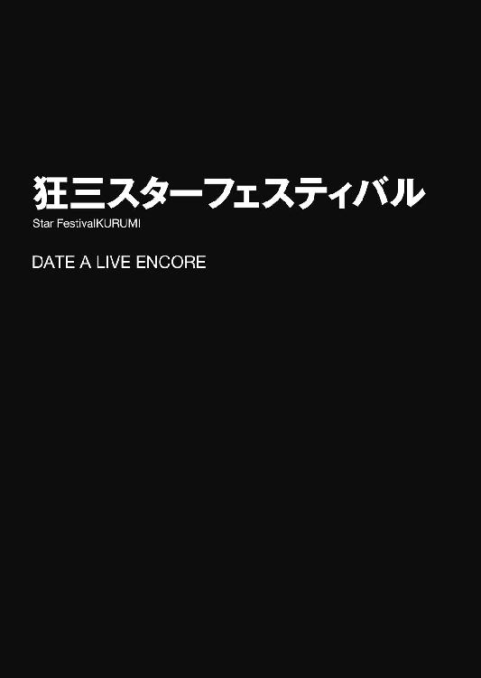
「こりゃまた......賑わってるな」
右に左に視線をやりながら、士道は一人、ゆっくりとした足取りで通りを歩いていた。
視界に広がる商店街は、いつもより活気づいている。
それもそのはず。今日はちょうど七月七日。毎年恒例の七夕祭りが催されるため、お祭り好きな店主たちが、商店街総出で盛り上げにかかっているのである。
実際、通りには既に屋台が設営され、たこ焼きや焼きそばなどの定番メニューに加えて、七夕になぞらえた様々な商品が並べられていた。買い物客も平時より多く、大通りは夥しい数の人影に埋め尽くされている。
士道自身はそこまでお祭りではしゃぐ方ではないのだが、それに合わせて商店街が軒並みセール状態になるのは大歓迎だった。別に値札が変わっているわけではないのだが、お祭り気分の店主たちが、いろいろとおまけをしてくれるのである。
十香の食費は〈ラタトスク〉から補助が出ているとはいえ、料理のクオリティを落とさず如何に材料費を安く済ませるかも、五河家の台所を取り仕切る者としては重要な任務だった。
そこまで考えて自分の所帯臭さに悲しくなった士道だったが......まあ、別に今始まったことでもないし、今さら気にしても仕方がない。気を取り直すように息を吐き、再び商店街を物色するように顔を上げる。
なんてことのない日常の、なんてことのない一風景。
それから士道は馴染みの店を巡り、機嫌のいい店主たちの話に付き合いながら買い物を済ませ、自宅に帰って夕食の準備をする。
──はず、だった。
だが、そのとき。
「え──？」
士道は通りの向こうに、それを発見してしまった。
「な......」
そして、その存在を脳が理解すると同時、その場に凍り付く。
商店街の大通りを隔てた向こう側。
そこに、モノトーンのドレスに身を包んだ一人の少女が立っていたのである。
肩口でゆったりと結わえられた黒髪に、華奢な肢体。長い前髪によって顔の左半分が覆い隠されているものの、その下から覗く吸い込まれるような右目と、桜の花びらのような唇は、一目で男を虜にする魔性の魅力を有していた。
だが──違う。
士道が、数瞬の間とはいえ指先一つ動かせなくなったのには、別の理由があった。
「時崎──狂三......？」
震える声で、少女の名を呼びながら、士道はごくりと唾液を飲み下し、張り付くのどを湿らせた。
──時崎狂三。
今からおよそひと月前、士道のクラスに転入してきた少女であり──士道を『喰らい』、その身に封印された霊力を我が物にしようとしていた精霊である。
性格は好戦的且つ残忍。空間震で自らの意志とは関わりなくこちらの世界に被害を及ぼしていた十香や四糸乃たちとは異なり、自らの意志で何人もの人を殺し回っていた......通称、『最悪の精霊』。
琴里の手によって左腕と天使の一部を失い、姿を眩ませていたはずだが、その身体には綺麗な左腕がきちんと生えていた。
「......っ」
士道は思わず手で両目を擦った。
もしかしたら自分の見間違いかもしれない、だなんて、儚い可能性に縋るように。
そして数度瞬きをしてから、再び通りの向こう側に視線を向ける。
するとそこにはもう、件の少女の姿はなくなっていた。
「な、なんだ......やっぱり見間違──」
「──ごきげんよう、士道さん」
「うわっ⁉」
安堵の息を吐こうとした瞬間、不意に後方から響いた声に、士道は全身をビクッと震わせた。
慌てて後方に目をやる。
そこには、つい先ほどまで通りの向こうにいた少女が立っていた。
「く、狂三......⁉」
「ええ。お久しぶりですわね、士道さん」
言って微笑を浮かべ、スカートの裾を摘み上げながら膝を屈めてみせる。
士道はどうにか心拍を落ち着けると、狂三の隻眼を見つめながら唇を開いた。
「な、なんで......こんなところに」
もし琴里と通信が繫がっていたなら、即座に駄目出しをされそうな、個性のない台詞を吐く。
すると狂三は唇の端を持ち上げると、士道の顔を見ながら囁くように言ってきた。
「決まっているではありませんの。──士道さんに、会いにきたのですわ」
「......ッ！」
士道は息を詰まらせると、咄嗟に片足を引いた。
士道に、会いにきた。
つまりは──そういうことだろう。
しかし、士道の足で彼女から逃げ切れるはずがないことくらいは十分理解できていた。
辺りにはたくさんの人がいるが、精霊たる狂三にとっては目撃者の有無なども些細なことだろう。否......それどころか、彼女がその気になったなら、士道の視界にいる人間全てを影の中に引きずり込んでしまうことだって可能かもしれなかった。
士道は狂三を見つめ返しながら奥歯を嚙んだ。彼女というイレギュラーが現れただけで、日常の風景が一瞬のうちに窮地に変貌してしまった。一体どうすれば──
「......⁉」
と、そこで。狂三が不意に手を伸ばし、士道の手を取ってきた。
「ふふ......。ねえ、士道さん？」
狂三が妖しく笑いながら、士道の手に指を這わせていく。その表情には、まるで士道の思考全てを見透かされているかのような不気味さがあった。
万事休すである。士道は何かこの状況を打破できるものはないかと思考を巡らせた。
だが──そんな士道の頭の中を知ってか知らずか、狂三はまったく予想外の行動を取ってきた。
「──今から、デートをいたしませんこと？」
くっと士道の手を引き、耳元に口を近づけながら、囁くように。
そんなことを、言ってきたのである。
「は......？」
思わぬお誘いに、士道は目を丸くした。
「狂三、今、なんて......？」
「ふふ、士道さんたら。女の子にそんなことを二度も言わせるなんて野暮な真似はよしてくださいまし」
言って、狂三は可愛らしく首を傾げてくる。
「デー......ト？」
「ええ。士道さんと一緒に遊びたいのですわ。いけませんこと？」
「いや、それは......」
士道は言葉に詰まった。
狂三からの、デートのお誘い。──普通に考えれば、危険極まりない。
だが、士道は迷ってしまっていた。
狂三がまったく怖くないといえば噓になる。彼女は幾人もの人間を殺してきた精霊である。士道の首を落とすくらい造作もないだろう。
だが、そんな恐怖にも勝るくらい。
狂三ともう一度、きちんと話をしておきたいという気持ちもまた、士道の中にあったのである。
「............」
しかし、その沈黙をどう察したのか、狂三が小さく息を吐く。
「あらあら、わたくしも信用がありませんわねぇ。......まあ、とはいえ仕方ありませんわね。一度殺されかけた相手とデートだなんて考えられませんでしょうし。でも──」
言って、士道の顔を下から覗き込むようにしながら、狂三が続ける。
「どうかご安心くださいまし。わたくしは今日、士道さんに危害を加えるつもりはございませんわ。どうしても信じられないのであれば、両手を錠で縛めても、首に爆弾を付けても構いませんわよ？」
「い、いや、そういうわけじゃ......」
士道が言い淀むと、狂三はわざとらしく目を見開いて、手を顔に当てた。
「それでは、ただ単純にわたくしと遊ぶのは嫌ということですの？ うう、悲しいですわ。泣いてしまいますわ」
「ちょ......！ だ、誰もそんなこと言ってねえだろ！」
「えーん」
「お、おいおい......」
士道は困った顔を作りながら後頭部をかいた。
......明らかに、狂三の様子がおかしい。無論、士道をからかっているだけという可能性も十分あったのだが......何というのだろうか、目の前の狂三から感じる雰囲気が、以前顔を合わせた最悪の精霊と同じとは思えなかったのである。
それに......狂三は先ほど、今日は士道に危害を加えるつもりはない、といった。
無論そんなものは口約束。破ろうと思えば簡単に反故にできる。
だが、狂三は隠し事をしたり話をはぐらかすことはあっても、自分から言い出した言葉を翻したことはなかった気がするのである。
そして何より、もともと危険な状況には変わりないのだから、誘いを断って狂三を不機嫌にすることこそ、絶望的な悪手だろう。「ごめん」と言った瞬間に影に引きずり込まれる恐れだって十分あるのだ。
士道は数瞬のうちに考えをまとめて、小さく、首を前に倒した。
「......わかった。付き合うよ」
すると、狂三がパァッと表情を明るくした。
「本当ですの？」
まるで大輪の花が咲いたかのような無邪気な喜びっぷりに、士道は少し驚いてしまった。士道としては様々な覚悟と打算の果ての決断だったのだが......なんだか、調子が狂う。
「ふふっ、嬉しいですわ。士道さんはお優しいですわね」
弾む声で言って、狂三が士道の腕に組み付いてくる。
「わっ、く、狂三⁉ ちょ......っ」
突然のことに、士道は頰を赤くしながら声を上げた。如何に最悪の精霊とはいえ、その姿は可憐な女の子である。急にそんな大胆な行動を取られては、健全な男子高校生である士道としてはいろいろと困ってしまう。
「お、おい、ちょっと近すぎないか......？」
「あら？」
しかし狂三はそんな士道の様子を可笑しそうに見ると、さらに身を寄り添わせてきた。
「いいんですのよ。だって──今わたくしたちはデートをしているんですもの。うふふ、今は、今だけは、士道さんはわたくしだけのものですわ。それとも......わたくしと腕を組むのは嫌ですの？」
しゅんとした様子の声で狂三が言ってくる。士道は謎の罪悪感を覚えて「う......」と眉根を寄せた。
「いや、別にそういうわけじゃないけど......」
「そうですの。うふふ、では早速参りましょう」
言って、狂三が歩き出す。士道はそれに引っ張られるような格好で商店街の道を歩いていった。
──奇しくもその日は七月七日。
天の川に逢瀬を阻まれる織姫と彦星の如く、大通りを行き交う人の流れを隔てて──
二人は、再会した。
◇
「......ていうか、狂三。デートって、一体どこに行くんだよ」
歩き始めてからどれくらい経った頃だろうか、士道は何とはなしに狂三に訊ねてみた。
「ええ、実は行きたいところがありますの」
「行きたいところ？ どこだ？」
「うふふ、まだ秘密ですわ」
狂三が「ないしょ」というように、指を一本立てて口元に当てる。その可愛らしい仕草に、士道は思わずドキリとしてしまった。
だが、すぐに心中で思い直す。貴重な狂三との会話の機会を得たのは僥倖だ。だが、だからといって彼女の危険度が下がるわけでは決してなかった。一瞬の油断が命取りになりかねない相手なのだ。
と、士道がそんなことを考えていると、士道を引っ張るように歩いていた狂三がふと足を止めた。
そして、ニッと微笑を浮かべ、ぺろりと唇を舐めながら、士道の方に目をやってくる。
「──あぁ、あぁ。本当に、美味しそう......ですわねぇ」
「......ッ‼」
その言葉に、士道は身を竦ませた。
「な......、おまえ、まさか、やっぱり──」
戦慄に声を震わせ、狂三から距離を取ろうとする。だが、狂三の腕は鎖のように絡みついて離れようとしなかった。
「あ、はァ......」
狂三が唇を三日月の形にしながら笑い、士道──の向こうの屋台を指し示す。
そこには、『笹の葉カステラ』なるものが売られていた。一口大のカステラの中に、こしあんやカスタードクリームが入ったものらしい。確かに美味しそうだった。
「ねえ、士道さん。美味しそうだと思いませんこと？」
「え？ は......か、カステラ......？」
「──あらあら、一体何のことだと思われていましたの？」
士道が力の抜けきった表情で返すと、その顔がおかしくてたまらないといった様子で狂三がくすくすと笑った。......なんだか、遊ばれている気がしてならなかった。
「お、おまえなぁ......」
「うふふ、でも本当に美味しそうではありませんこと？ ほら、他にもたくさん変わったものがありますわ。あちらは『天の川かき氷』だそうですわよ」
狂三に言われて見やると、そこには確かに、ブルーハワイシロップの上に練乳をたっぷりかけ、その上にカラフルなトッピングが施されたかき氷を売る屋台が見て取れた。
「ああ......なるほど、ミルキーウェイね。上手いこと考えるな」
「ほら、あちらには『織姫わたあめ』が」
「わたを編むのと機織りをかけてるってことか？ ちょっと無理がある気がしないでもないが......」
「あちらは『牽牛ビーフジャーキー』だそうですわよ」
「いや、彦星さん牛食っちゃ駄目だろ」
とんだご乱心である。士道は頰に汗を垂らしながら眉をひそめた。
すると狂三が口元に手をやり、小さく笑みをこぼした。
「うふふ、士道さんといると本当に楽しいですわね」
「いや、別に俺は......」
しかし、士道が言いかけたところで、狂三がさらに強く腕を引っ張ってきた。
「さ、こちらですわ、士道さん」
「わ、ちょっ、引っ張るなって！」
「うふふ、時間は有限でしてよ？ さあさ、士道さん。貴重な二人のひとときを楽しみましょう」
笑いながら狂三が歩いて行く。士道はそれに連れられ、商店街を抜けていった。
それから一五分ほど歩いた頃だろうか、狂三が前方の建物を指さしながら口を開いた。
「ここですわ」
「ここ......って、プラネタリウムか？」
そう。士道たちが辿り着いたのは、大通りから少し離れた位置にあるプラネタリウムだったのである。
「ええ。一度入ってみたかったんですの」
「ふうん......なんか意外だな」
「あら、それはどういう意味でして？」
「あ、いや......」
士道は言い訳をするように言い淀み......そこでハッと小さく肩を揺らした。──思わずそんな軽口を叩けるくらいにまでリラックスしてしまっていた自分に驚いて。
いや、別に気を抜いていたつもりはないのだ。だが、商店街からここに至るまでの間の狂三から、微塵も敵意や害意を感じられなかったため、無意識のうちに警戒を解いてしまっていたらしかった。
そう。今日の狂三は本当に、普通の女の子だったのである。
嬉しそうに腕を組み、楽しそうに話をし、幸せそうに笑う......本当に、普通の。
それこそ──僅かな時間とはいえ、士道が先月の戦いを忘れてしまっていたくらいに。
「............」
士道は無言で狂三を見つめた。
......彼女の意図がわからない。士道を油断させて『食べる』つもりなのか？ しかしそれならばこんな回りくどいことをせずとも、会った瞬間に影に引きずり込めば済む話だろう。ならば、一体。まさか、本当にただデートをするために......？ いや、それこそ考えられない。〈ラタトスク〉に見つかるリスクを負ってまで士道に接触してきた以上、彼女には何らかの目的が──
「......？ 士道さん？ どうかしまして？」
「や......なんでもない。行こうか、狂三」
士道は誤魔化すように言うと、狂三とともに、プラネタリウムに歩いていった。
そして二人分の入場料を支払って座席につくと──ほどなくして会場が暗くなり、どこからかアナウンスが響いてきた。
『──本日は当プラネタリウムにご来場いただき、誠にありがとうございます。本日のプログラムは──』
おきまりの挨拶が終わり、半球状になった天井に、数多の星々が映し出される。
「わぁ......」
隣の席から、そんな声が聞こえてきて、士道は思わずそちらに視線をやってしまった。
狂三が、目をキラキラと輝かせながら、天井に瞬く星々を見上げていたのである。
「............」
その無垢な様子に士道は頰をかき......小さく息を吐いて視線を上にやった。
......本当に、わからない。狂三が何を考えているのかが。
と、士道が困惑していると、天井に幾つもの星々で構成された帯──天の川が流れ、その両脇に、ひときわ大きな星が二つ、輝いた。
『──天の川のほとりに住んでいた、天帝の娘・織姫は、美しい布を織る天女でした。
しかし、牛飼いの彦星と結婚してからは、仕事も忘れ毎日遊んでばかり。それを見て怒った父の天帝は、きちんと仕事をするよう、二人を引き離してしまいました。
二人が会うことを許されたのは一年に一度。七月七日の夜だけです。しかし、その日に雨が降ると、天の川が増水して、渡ることができなくなってしまうのです──』
なるほど、七月七日らしく、七夕の由来についてのプログラムらしかった。
ちらと右方に目をやると、どうやらこちらに顔を向けていたらしい狂三と目が合ってしまう。
「──！」
「......ふふっ」
士道は思わず肩を揺らしたが、狂三は妖しく笑って、すっと士道の手に自分の手を重ねてきた。手の甲が少しひんやりとした柔らかい感触に包まれ、思わずドキッとしてしまう。
「く、狂三......？」
問うも、狂三は既に視線を天井に戻してしまっていた。
士道の動揺など気にかけていない様子で、静かに唇を開いてくる。
「ねえ──士道さん」
「な、なんだ......？」
「織姫と彦星は、天の川に遮られ、一年に一度しか会うことが許されないのですわよね」
「......ああ、そうだな」
「でも、七月七日に雨が降ったなら、その年に一度の機会さえ失われてしまう」
「ん......まあ、そこは諸説あるみたいだけど......確かによくそういうな」
士道が言うと、狂三はすぅっと細く息を吸ってから続けてきた。
「もし......もしですわ。何年も、何年も、何年も......ずっと七月七日に雨が降り続いて、ずっと会えないときが続いたとしたなら......二人は、互いを想い合っていられるのでしょうか」
「え......？」
不意に発された問いに、士道は首を傾げた。
「なんで、そんなこと」
「時間は何よりも優しいですわ。年に一度の逢瀬の機会を失った二人の哀しみさえ、いずれ癒やしてしまうでしょう。時間は何よりも残酷ですわ。永遠を誓い合った二人の愛でさえ、やがて風化させてしまうでしょう。お互いを確かめ合う唯一のときを失い続けた二人の心には、一体いつまでお互いが存在するのでしょう」
「なんか......難しい話だな」
言いながら、困ったように眉をひそめる。正直、はっきりとした答えの出るような類の問いではないだろう。
だが、狂三は士道の答えを待つように、ジッと目を見つめてきていた。その真剣な眼差しに、思わずたじろいでしまう。
「あー......狂三？」
「はい」
「俺は彦星でもなければ、ましてや織姫でもない。これはあくまで俺の個人的見解として聞いて欲しいんだが」
「はい」
「たぶん、この二人は互いをずっと忘れない」
士道が言うと、狂三は首を傾げてきた。
「なぜ、そう思いますの？」
「だって考えてもみろ、仲良すぎて仕事しなくなったからって理由で引き離された二人だぞ？ よっぽどのことがない限り、相手のことを忘れられやしねえよ」
「............そう、ですの」
ため息交じりに、狂三が沈んだ声を発する。どうやら、お気に召す答えではなかったらしい。
だが、士道の説はまだ終わっていなかった。小さく首を振ってみせる。
「早とちりすんな。ちゃんと根拠があるんだぞ」
「根拠......ですの？」
「ああ。俺が思うに......この二人、実は裏でしょっちゅう会ってる」
「はい？」
狂三が、意外そうに目を丸くする。
「どういうことですの？ 二人の間には天の川があるのではありませんこと？」
「いや、考えてもみろ。彦星こと牽牛星は別名アルタイル。鷲座の一等星だぞ？ 鷲にかかりゃ、川なんてひとっ飛びだ。こいつら、天帝に隠れて今でも会ってるに違いない。だから、互いを忘れるはずがないんだ」
「............」
士道の言葉に、狂三はしばしの間惚けたように目を見開き──
「ふ、ふふ......はは、あはははっ」
数瞬ののち、堪えられないといった様子で笑い始めた。
しかも今まで会話を交わしていたような小声ではなく、結構な大音量で。
周囲からゴホンゴホンと咳払いが聞こえ、刺々しい視線が二人に注がれる。だがそれでも、狂三は笑いを止めようとしなかった。
「ちょっ......狂三、とりあえず一回出よう、な⁉」
言って士道が手を引くと、狂三はおかしそうに笑いながらも、存外素直に従ってきた。
ペコペコと周りのお客さんに頭を下げながら、薄暗い会場をあとにする。
それから少し経って、狂三はようやく落ち着いたようだった。落ち着いたといっても、未だ目の端に涙を浮かべながら、口元をニマニマとさせていたのであるが。
「はぁー......ふふっ、笑わせていただきましたわ。なるほど......確かに、その通りですわね」
「......別に笑わせようとした気はないんだが。落ち着いたんなら、中に戻るか？」
士道が問うと、狂三は「いいえ」と首を振った。
「もう十分ですわ。それより──わたくし、短冊が書いてみたいんですの。確か、そこに願いをしたためて笹に括り付けると、それが叶うのでしょう？」
「効果のほどは確かじゃないがな。......短冊、か。ん、それなら商店街の方に戻れば、でかい笹が飾ってあるはずだ。短冊も無料で配布してるはずだし、行ってみるか？」
「ええ、楽しみですわ」
狂三が可愛らしい笑みを作り、再び士道の腕に組み付いてくる。
「お、おい......」
士道は一瞬抵抗を試みるも......どうせ何を言っても無駄と悟り、その状態のままプラネタリウムを出ていった。
そして、元来た道を歩いていく。
建物を出る前に時計を見たところ、時刻は午後六時を回ったくらいだった。空が赤く染まり始め、地面に長い影が描かれていく。
......そろそろ夕食の準備を始めねば、お腹を空かせた十香が五河家にやってきてしまうだろうが、狂三からは逃げられそうにない。それに何より──前に会ったときと明らかに様子の違う狂三を放って逃げ帰ってしまうのに、どこか抵抗を感じている士道がいた。
と──商店街に差し掛かるかどうかのところで、狂三が「あ」と小さな声を発し、足を止めた。
「ん......どうしたんだ？」
「士道さん、あれを」
狂三の指さした方向に目をやる。
そこには、小さな結婚式場と、『ウェディングドレス試着無料！』と書かれた看板があった。
「わたくし、一度あれが着てみたいですわ。商店街に戻る前に、少し寄っていきませんこと？」
「や、俺、まだ高校生なんだが。ていうかなんでまたそんなもの......」
「............」
士道が言うと、狂三は一瞬言葉を切り、寂しげな表情を作った。
「......士道さんとの思い出が欲しいんですの。そして──士道さんにも、わたくしとの思い出を持っていて欲しいんですの」
「え？」
狂三らしからぬ気弱な言葉に、思わず眉をひそめる。
「......駄目、ですの？」
「う......」
狂三に潤んだ瞳で見つめられ、士道は言葉を詰まらせた。
「わ、わかったよ。訊くだけ訊いてみて、駄目だったら諦めろよ？」
「！ ええっ！ 嬉しいですわ！」
狂三が顔を明るくする。
そのあまりに無垢な表情に調子を崩されながら、士道は結婚式場の方へと歩いていった。
「士道さん......どこにいったんでしょう」
夕刻。赤く色づいた空に見下ろされながら、四糸乃は商店街の通りを歩いていた。
つばの広い麦わら帽子を被った、小柄な少女である。蒼玉のように美しい瞳と、左手に着けたコミカルなウサギのパペット『よしのん』が特徴的だった。
「うむ、本当だな。何かあったのだろうか......」
「ふん、大方店の前で夕飯のメニューに悩んでるだけでしょ。さっさと見つけて帰りましょ」
と、四糸乃の問い掛けに呼応するように、前方を歩いていた二人の少女が声を発してくる。
一人は、長い夜色の髪に水晶の瞳をそなえた少女──十香。もう一人は、髪を黒いリボンで二つ結びにした勝ち気そうな少女──琴里である。
そう。今日は五河家で夕食をご馳走になる予定だったのだが、買い物に行った士道の帰りがあまりに遅かったうえ、連絡もつかなかったため、心配がった十香や琴里とともに商店街まで士道を探しにきていたのである。
と、
「ぬ？」
不意に十香が眉を動かしたかと思うと、琴里の肩をちょんちょん、と叩いた。
「琴里、琴里」
「ん、どうしたの？ 士道がいた？」
「いや、そうではないのだが......あれは何かと思ってな」
言って、十香が大通りの方を指さす。
そこには、通りに沿うように、夥しい数の笹が並べられていた。そして何だろうか、その枝葉に、小さく切った紙のようなものがたくさんくくりつけられている。
「ああ......短冊飾りよ。そういえば今日は七夕だったわね」
「短冊？ 七夕？」
「ええ。短冊っていう紙に願い事を書いて笹にくくりつけると、その願いが叶うって言われてるの」
「！ な、なんと......！」
琴里の説明に、十香が目をキラキラと輝かせる。
「こ......琴里っ！」
「......はいはい。いいわよ、書いても」
「う、うむ！」
琴里が全てを察したように言うと、十香は大仰にうなずいて、笹の方に走っていった。
それを見てから、琴里が四糸乃に目を向けてくる。
「ほら、四糸乃も行きましょ」
「え......わ、私も、いいんですか......？」
「ええ、もちろん。──ま、本当に願いが叶うかどうかは別だけどね。せっかくだし、書いてきましょ」
「は、はい......！」
四糸乃は琴里に連れられて大通りの方に歩いていくと、配布している短冊を二枚もらい、備え付けのペンで『よしのん』とともに願い事をしたためていった。
「おお、皆はどんなことを書くのだ？」
と、一足早く願い事を書き終えたらしい十香が、琴里の短冊を覗き込む。
「......っ！」
すると琴里が息を詰まらせ、途中まで書いていた願い事を塗りつぶした。
「ぬ？ どうしたのだ琴里」
「な、なんでもないわ。書き損じよ、書き損じ」
言いながら、琴里が塗りつぶした文章の隣に、改めて願い事を書く。
「む？ 先ほどの願いと違うのではないか？」
「！ 気のせいよ、気のせい！ ほ、ほら、四糸乃は書き終わった⁉ 早いところ吊して士道を探しにいくわよ！」
「む？ う、うむ......」
「は、はい......」
琴里の勢いに圧されるように、十香と四糸乃はうなずいた。
そして笹に短冊をくくりつけてから、人混みの中から抜け出す。
「ふう......でも、こう人が多いと探すのも大変そうね。──仕方ない。ちょっと手分けしましょ。私は商店街の北側、十香は南側、四糸乃とよしのんはその外れを探してみてちょうだい。三〇分探して見つからなかった場合は、またここに集合。いいわね？」
「うむ、承知した！」
「は、はい......わかりました」
『おっけー！ まっかせといてよー！』
十香と四糸乃、それに『よしのん』がうなずく。
「よし......では、捜索開始！」
そして、琴里の号令とともに、三人と一羽は商店街に散らばっていった。
四糸乃の担当区域は、商店街を外れた辺りである。大通りに比べると人の数がまばらで、ティッシュを配られたり、不意に肩がぶつかってしまったりすることも少ない。きっと琴里が気を利かせてくれたのだろう。
四糸乃は心中でお礼を言いながら、士道の姿を探し始めた。
「......士道さん、危ない目にあってないといいけど......」
と、四糸乃が独りごちるように呟くと、左手の『よしのん』がむーふふふ、と意味深な声を発した。
『やー、危ない目っていうかさー、もしかしてこれはアレじゃないのー？』
「あれ......？」
『女よー。オ・ン・ナ。きゃー！ 士道くんのエッチ！』
言って、『よしのん』が両手で顔を覆い、恥ずかしがるように身をくねらせる。
「そんな、士道さんに限って......」
四糸乃は苦笑しながら言いかけ──
「え......？」
次の瞬間、目を見開いてその場に凍り付いた。
理由は単純。士道が、見知らぬ少女とともに歩いているのを発見したのである。
「あ、あれは......」
『士道くんだねー。うっほぁ！ すンごい美人さん連れてるねー。やるぅ！』
「そ、そんな......」
と、四糸乃が震える声を発していると、士道と少女はある建物に歩いていった。
──なんと、結婚式場に。
「え......っ⁉」
『ひゅー』
詳しいことは知らなかったが、結婚というのは、永遠の愛を誓い合い、一生寄り添うことをいうのだと聞いたことがあった。
──まさか、士道が、本当に？
「......っ」
四糸乃は息を詰まらせると、物陰に隠れるようにしながら、二人が入っていった結婚式場の方へと歩いていった。
入り口から建物の中を見やる。すると、何やら士道が受付の人と話をしており、その後ろに件の少女が立っているのがわかった。
絹のような黒髪に、端整な貌。怖いくらいに綺麗な女の子である。
「し、士道さん......なんで、そんな」
「......あら？」
と、四糸乃が信じられないものを見るような目でその少女を凝視していると、その視線に気づいたらしい少女が、ゆっくりと四糸乃の方に歩み寄ってきた。
「ごきげんよう。わたくしに何か？」
「ひ......っ」
急に話しかけられ、人見知りの激しい四糸乃はビクッと肩を揺らした。
だが、怯んでいるわけにもいかない。四糸乃は勇気を振り絞ってのどを震わせた。
「あっ、あの......っ、あなたは......士道さんと、どういう......」
四糸乃が士道の名を出すと、少女は意外そうに目を丸くした。
「士道さんのお知り合いですの？ あら......？ というかあなた、どこかで......？」
少女は何やら思案を巡らせるようにうなったかと思うと、数秒後、得心がいったという様子で小さくうなずいてきた。
「......？」
「ああ、気にしないでくださいまし。それより、わたくしと士道さんの関係......でしたかしら？」
「は......はい......っ」
四糸乃がうなずくと、少女は妖しく唇の端を上げてきた。
「そうですわねぇ、何と申しましょうか。切っても切れない縁というか、離れられない仲というか......余人は入り込むこともできないくらい、濃密で特別な関係ですわ」
「えっ？ え......っ？」
少女の言葉に、四糸乃は目を白黒させた。そんな四糸乃の反応を面白がるように、少女が続けてくる。
「士道さんのことは身体の隅々まで知っていますわ。全身を舐め回すようにじっくりと調べましたもの。ああ......特に先月会ったときは、熱い夜を過ごしましたわねぇ。士道さんとお話をしていたら突然、身体に熱い物が挿入されて......うふふ、きちんと責任を取っていただきませんと」
「な、な......」
「ああ、そうそう。わたくしが今着けている下着は、士道さんが直接選んでくださったものですわよ。よろしければご覧になりまして？」
言って少女が、フリルで飾られたスカートの裾を摘み、ゆっくりと持ち上げていく。
「......っ⁉」
四糸乃は混乱したように目をぐるぐると回すと、バッとその場から駆け出した。
「くすくす、ごきげんよう」
少女が可笑しそうに言ってくるが、四糸乃に振り返るような余裕はない。ぐちゃぐちゃになった思考を整理できないまま、ただただ道を走っていった。
◇
「なんか......落ち着かねえな......」
結婚式場の控え室で首元をさすりながら、士道は小さな声を発した。
だがそれも無理からぬことだったろう。生まれて初めて白のタキシードなんかを着た男は、皆同じ感想を持つに違いない。
そう。結論から言うと、士道＆狂三の高校生カップルでも、ドレスの試着は許可されたのである。
否、正しく言うのであれば、受付の女性は最初渋い顔をしていたのだが、狂三が何やら耳打ちすると態度を一変させ、妙に協力的になったのだ。具体的には......新郎側にも試着用のタキシードを貸してくれたくらいに。
「一体狂三のやつ、なんて言ったんだ......？」
と、士道は息を吐き──そこではたと気づく。
「あ......そういえば、今なら携帯使えるじゃねえか！」
場の空気に流されて、思考が巡っていなかった。士道はハンガーに掛けられた服のポケットの中から携帯電話を取り出した。画面には、不在着信を示す通知がいくつも溜まっている。どうやら心配をかけてしまったらしい。
「とにかく、一度琴里に連絡を......」
だが、士道が着信履歴を開こうとした瞬間、控え室の扉がバン！ と開き、先ほど受付に座っていた女性が入ってきた。
「ささ、新婦さんの準備ができましたよ！ 新郎さん、こちらへ！」
と、やたらとやる気に溢れた様子で、士道の手を引いてくる。
「わっ、ちょっ」
咄嗟のことに抗うこともできず、結局士道は電話をすることができないまま、部屋の外へと連れ出されていった。
そしてそのまま廊下を歩かされ、別の控え室の前でようやく手を離される。
「さ、どうぞ」
「は、はあ......」
気のない返事をしながら、扉に手をかけ、開ける。
すると、次の瞬間。
「────」
控え室の中央に佇んだ狂三の姿が目に飛び込んできて、士道は言葉を失った。
日頃のイメージとは対照的な、純白のドレスが、狂三の華奢な肢体を覆っている。身体のラインに沿うように縫製された上半身部分に、手触りの良さそうな長手袋。腰元からのびた長いスカートは、隙間なく精緻な意匠が施されていた。
彼女の長い黒髪は綺麗に結い上げられ、これまた真っ白なベールに飾られている。貌にはうっすらと化粧が施されており──思わず声を失するような美しさだった。
「ふふ......そんなに見つめられると、照れてしまいますわ」
「！ あ、いや......わ、悪い。あんまりに......その、綺麗なもんで」
「まぁ、嬉しいですわ」
士道が言うと、狂三がほんのりと頰を染めながら淑やかに笑った。なぜかそれに合わせて、士道の後ろにいた受付の女性が、感極まったようにずずっと洟をすすり、ハンカチで目元を拭っていた。
「......なあ、狂三。おまえ、あの人に何言ったんだ？」
「ああ、あの方ですの？ 別に大したことは申しておりませんわよ。ただ『わたくしは難病に冒されており、余命幾ばくもございません。恐らく、彼が契りを結べる歳になるまで生きられはしないでしょう。それを哀れに思った彼が、せめて花嫁衣装だけでもと』と申し上げたら、途端に気を遣ってくださいまして......」
「......いや、おまえそれ完全に噓じゃねえか」
「うふふ、そうですかしら？」
士道が半眼で言うも、狂三はおどけるように笑うのみだった。
と、そんな光景を涙目で見ていた受付の女性が、大きく洟を啜ってから、士道たちを促すように言ってくる。
「ささ、もしよろしければチャペルの方まで。写真もサービスしちゃいます」
「え......いや、いいですよ、そんなことまで」
「何を言ってるんですか！ これが......これが最後かもしれないんですよ......ッ！」
熱っぽく叫び、女性が「うぅ......っ」とハンカチで顔を覆う。どうやら涙もろい性格らしかった。
「いいではありませんの、士道さん。わたくしも......士道さんと写真が撮りたいですわ」
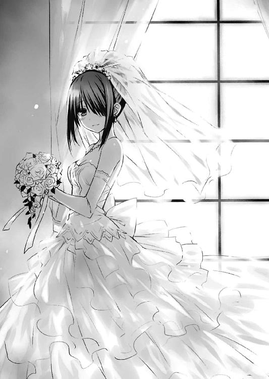
「......ん、んー」
いいのかなあ、と思った士道だったが、ここまできて「全部噓でした」だなんて言えるはずもないし、そもそも狂三の意に添わない行動をするほどの理由もない。
士道は女性に促されるまま、狂三と一緒に廊下を歩いていった。
そうして建物の裏手に出ると、そこが広い中庭のようなスペースになっていることがわかった。
街の喧騒から隔絶されたように静かな空間である。そしてその中央に──沈みかけた太陽が放つ燃えるような夕日によってオレンジ色に染められたチャペルが建っていた。
小さいながらも、手入れの行き届いた綺麗な礼拝堂である。チョコレート色の扉を開けると、列をなした長椅子の間にのびた絨毯に、その最奥に設えられた祭壇と巨大な十字架、そして煌びやかなステンドグラスが見て取れた。
「ささっ！ 祭壇の前へ！ 写真はお任せを！」
「は、はあ、どうも」
「うふふ、ありがとうございます」
仰々しいデジタル一眼レフを手にした女性の指示に従い、士道と狂三は祭壇の前に並んで立った。
「さ、ではこちらを向いてください。ほら、もっとくっついて。新郎さん、笑顔笑顔」
「は、はは......」
言われて、士道がぎこちない笑顔を作ると同時、パシャッとシャッターが切られた。
◇
結婚式場からどれくらい走った頃だろうか、四糸乃は不意にドン！ と何か柔らかいものにぶつかってしまった。
「きゃ......っ！」
「四糸乃？ どうしたのだ、そんなに慌てて」
どうやらぶつかったのは十香らしかった。不思議そうな顔をしながら、首を傾げてくる。
「と、十香......さん。士道、さん......が......っ」
「うぬ？ シドーがどうかしたのか？」
四糸乃が息も絶え絶えといった様子で言うと、少女──十香が眉をひそめてきた。
「は、はい......それが......」
四糸乃はどうにか呼吸を整えると、十香に今見てきたことを説明した。
「む、むう......？ シドーが、スカートを捲り上げる女とけっこん......？」
十香が困惑したように眉根を寄せる。
まあ、無理もない。実際に現場を見てきた四糸乃でさえ、どうしてあんなことになっているのかわからなかったのである。
と、
「あ......十香、四糸乃。そっちはどう？ 士道は見つかった？」
そこで、顔を見合わせて困惑する二人に、そんな声がかけられた。──琴里だ。
「おお、琴里。実は、四糸乃がシドーを見たというのだが」
「！ 本当？ どこにいるの？」
「うむ、それなのだが。なんでも、可愛い女の子のスカートを捲り上げて熱い夜を過ごしたシドーが、責任を取ってけっこんというのをするらしい」
「は......？」
十香が言うと、琴里がポカンと目と口を開いた。
だが次第に顔に赤みが差していき、表情が憤怒に染まっていく。
「な......ッ、なんじゃそりゃーっ！ し、士道が結婚⁉ ど、どどどういうことよ⁉」
「わ、私にもよくわからんのだが......」
「ッざけやがってェ！ ドコの馬の骨よ！ 私のおにーちゃんを誑かしたのはァッ！」
叫び、地団駄を踏むと、琴里はキッと四糸乃に目を向けた。その鋭い視線に、四糸乃が「ひっ」と息を詰まらせる。
「どこよ四糸乃！ 案内して！」
「は、はい......！」
若干十香の説明は趣旨が違う気がしないでもなかった四糸乃だが......もとより二人に助けを求めるつもりであったことに変わりはなかった。
四糸乃は、十香と琴里を伴いながら、もと来た道を戻っていった。
◇
写真を撮り終え、着替えを済ませてから式場を出ると、既に辺りは暗くなっていた。
とはいえ、そこではいさようならといくわけはなかった。まだ、狂三さんの特別デートコースは終わっていない。
そう。士道は今、短冊を書いてみたいという狂三の希望もあって、夜道を商店街に向かって進んでいたのである。
「............」
士道は、無言のまま、隣を歩く狂三に目をやった。
狂三は先ほどの式場で渡された写真（しかも、本物の結婚写真のように豪華な台紙までサービスしてくれた）を大事そうに抱えながら、機嫌良さそうに鼻歌なぞ歌っていた。
そして時折思い出したように台紙を開き、二人が並んだ写真を見ては、嬉しそうに微笑んでいるのである。
......なんだか、余計に訳がわからなくなる士道だった。
相手は最悪の精霊。最厳重の警戒が必要な少女である。
だが少なくとも、今の狂三を見る限り、本当に士道とデートをしにきたようにしか思えなかったのだ。
「あ、士道さん。見てくださいまし」
と、そんな士道の思案を搔き消すように、狂三が声を上げてくる。
「ん......？」
言われて、顔を上げる。商店街の建物に沿うように、大きな笹が幾つも並べられ、夜空に葉を広げていた。既にそこには何枚もの短冊がくくりつけられ、妙にカラフルな様相になっている。
「まあ、綺麗なものですわね」
「ああ......ほら、あそこで短冊配ってるみたいだぞ。書いてきたらどうだ？」
「ええ、そうさせていただきますわ。──士道さんは書きませんの？」
「え、いや、俺は......」
「せっかくですし、一緒に書きませんこと？」
狂三は優しく微笑むと、士道の手を取ってきた。そのまま手を引かれるようにして、笹の方へ歩いていく。
笹の葉のカーテンの下には長机が並べられており、その場で短冊をしたためられるようになっていた。
士道は狂三とともに係の人に短冊をもらうと、ペットボトルの頭を切り取ったペン立てからサインペンを拝借し、ううむと小さくうなった。
「願い事......か」
別にないことはないのだが......改まって書こうとすると、パッと思い浮かばない。
他の人はどんなお願いをしているのだろうと、何とはなしに士道は視線を上にやった。
「ん......？」
と、目の前の短冊に、見知った名前を発見する。
『今日の夕飯はカツカレーが食べたい。 夜刀神十香』
「あ、あいつ......いつの間にここに来たんだ？」
特徴のある筆跡から見ても、本人が書いたものに間違いなかった。士道はポリポリと頰をかきながら、帰りにカツカレーの材料を買っていこうと密かに決意した。
と、その隣に視線を向けると、今度は別の短冊が目に入る。
『人の目を見て話せるようになりますように。 四糸乃』
『四糸乃が幸せになれますように。 よしのん』
「はは......」
なんとも微笑ましいお願いに、思わず頰を緩めてしまう。どうやら、四糸乃と『よしのん』も十香と一緒にここを訪れたらしい。
「ということは、もしかして......」
士道はさらにその隣に目をやった。
『士道がもうちょっと使える人間になりますように。 五河琴里』
「あ、あんにゃろう......」
それは間違いなく士道の妹・琴里の短冊だった。頰をぴくつかせながら眉根を寄せ──ふと、その願い事の右側に、何やらペンで文字を塗りつぶしたような跡があることに気付く。
「............」
あの妹様が書き損じをするとも考えづらい。大方、人目に晒すのも憚られるような口汚い罵倒語を書いてしまい、書き直さざるを得なくなったとか、そういう口だろう。
士道はため息混じりにぽりぽりと頰をかくと、自分の短冊に視線を戻した。
どうやら、そう気張って書く必要もないらしい。士道は『精霊がみんな幸せになれますように』と書きかけ──すぐに、『精霊』が秘匿存在であることを思い出した。
「ええと......」
改めて、『空間震がなくなりますように。平和的に』と書き直す。まあ、少々婉曲な表現にはなったが、間違ってはいないだろう。
「ま、こんなとこか......」
言って、士道は狂三の方に目を向けた。
正直、彼女がどんな願い事をするのか、興味がないといえば噓になってしまう。
「狂三は、何て書いたんだ？」
言って、手元を覗き込もうとすると、さっと狂三が短冊を裏返した。
「うふふ、士道さんたら。乙女の秘密を覗こうとするなんて、いけない人ですわ」
狂三が妖しく微笑んで人差し指を立て、士道の唇にちょん、と触れさせてくる。
「な......！」
「ふふっ、可愛い反応ですわね」
「か、からかうなよ」
士道が腕で唇を拭うと、狂三は一層おかしそうにくすくすと笑った。
「まあいいや。とにかく、書き終わったんだな？ じゃあ短冊を笹にくくりつけるぞ」
言うと、狂三がうなずいた。
「ええ、どちらにいたしますの？」
「ああ......なんかよく、空に近いところにくくりつけると願いが叶いやすいとはいうけど......」
「空に近い......というと、あちらですの？」
狂三が上方を指さす。そこには、建物の屋根を越えるくらい巨大な笹がそびえ立っていた。さすがに皆そこまでは手が届かないのか、上部には短冊が一枚もかかっていない。
「まあ、確かに高いけど......さすがに危ないだろ。ほら、向こうの笹はまだ空いてるみたいだし、あっちにしよう」
「ええ、構いませんわ」
士道と狂三は、願いをしたためた短冊を手に、笹のカーテンを辿って歩いていった。
少し大通りから外れたところまで至ると、まだ十分に短冊をつけるスペースが残っていることがわかる。
「ん、じゃあこの辺にするか」
言って手を伸ばし、笹に短冊をくくりつける。
と、そこで士道は首を傾げた。
狂三が、短冊を手にしたまま、その場に立ち尽くしていたのである。
「狂三？ どうしたんだ？」
すると狂三は力無くふふっと笑うと、小さく唇を動かしてきた。
「士道さん......先ほど、仰いましたわよね。織姫と彦星は、たとえ何年雨が続いても、互いを忘れることはないと」
「え？ ああ......言ったけど」
士道が答えると、狂三はその言葉を嚙みしめるように目を伏せてから、唇を開いてきた。
「ねえ......士道さん。士道さんは、もし何年も雨が続いても、わたくしを忘れずにいてくださいまして？」
「え？」
突然の問いに、士道は首を傾げた。
だが、狂三にこちらを茶化している様子はない。
士道は数秒の間考えを巡らせてから、「ああ」とうなずいた。
「忘れないさ。ていうか......忘れられるはずがないだろ。おまえみたいに強烈な女の子をよ」
苦笑しながら言うと、
「そうですの」
と、狂三は、満足げに微笑んだ。
「なんだよ......変な奴だな。ほら、短冊結ばないのか？ もし内容を見られたくないならあっちに行ってるから──」
「いえ」
と。狂三は、静かに首を振った。
「どうやら......時間切れのようですわ」
「時間......切れ？」
士道は、意味ありげな狂三の言葉に眉をひそめた。
すると、その瞬間──
「──ようやく見つけましたわよ、『わたくし』」
狂三の背後。大通りの喧噪から隔絶された暗い路地裏から、そんな声が聞こえてきた。
「な......」
そして、いつの間にかそこに立っていた人影を見て、士道は言葉を詰まらせた。
血のような紅と影のような黒に彩られたドレスを纏った、美しい少女である。左右不均等に結われた黒髪に、色違いの双眸。そしてその貌は──
間違いなく、狂三のものだった。
そう。狂三の背後に、霊装を纏ったもう一人の狂三が立っていたのである。
新たに現れた、影の中に立つ狂三が、薄く唇を開く。
「随分と好き勝手に動き回ってくれたようですわね。......ですが、ここまでですわよ。わたくしの意に添わない分身体だなんて、存在しても邪魔なだけですわ」
「分身、体......⁉」
士道は目を見開くと、短冊を手にした狂三に視線をやった。
狂三は、己の過去を切り取った分身体を何人も影の中に潜ませている。それは、先月既に知っていたことだった。
──だが、まさか、今日今までずっと過ごしていた狂三が、分身体だったというのか。
士道が頭を混乱させていると、影の中の──『本物』の狂三がスカートの裾を摘んで膝をかがめてみせた。
「お久しぶりですわね、士道さん。申し訳ありませんわ。──わたくしの出来損ないがご迷惑をかけたようで」
「......ど、どういうことだよ」
困惑を語気に乗せ、問うと、本物の狂三は気怠げに、分身体の狂三を一瞥してから言葉を続けてきた。
「以前、申し上げましたわよねぇ。わたくしの分身体は、わたくしの過去であり、わたくしの履歴であると。そこにいる『時崎狂三』も例に漏れず、わたくしのとある一瞬を切り取った疑似人格なのですわ。──ただし、そのタイミングが最悪だったのですけれど」
「最悪......？」
本物の狂三が、「ええ」とうなずく。
「その『わたくし』は、わたくしが分身体を補充している際......先月士道さんと高校の屋上で話していた個体が誤って再現されてしまったモノですわ。......如何な神の悪戯があったのかはわかりませんけれど」
「な──」
士道はのどを絞った。
記憶は鮮明に残っている。
先月、来禅高校の屋上で、確かに士道は狂三と話していた。
学校に結界を張り、さらには空間震を起こそうとした狂三を説得し、狂三がそれに応じかけたところで──
本物の狂三が現れ、その狂三は殺されてしまったのだ。
「おまえが、あのときの、狂三だっていうのか......？」
「............」
狂三は、悲しそうに微笑むだけだった。
そんな様子を見て、本物の狂三が鬱陶しげに息を吐く。
「悪いですけれど、わたくしの命令を聞かない分身体を放置しておくわけにはまいりませんわ。──特に、士道さんに絆された『わたくし』だなんて」
言って、本物の狂三がゆらりと右腕を上げ──くい、と手を握る。
すると、狂三の足元から幾本もの生白い手が生え、彼女を影の中へと引きずり込んでいった。
「く──狂三......ッ！」
士道は咄嗟に狂三の手を取ろうと腕を伸ばしたが──遅かった。
「士道さん。──今日は、楽しかったですわ。本当に......」
狂三は、抵抗らしい抵抗を見せることもなく、ただ白い手にされるがままに、影に吞まれていった。
まるで......最初からこうなることがわかっていたかのように。
「狂、三......」
「......同じ『わたくし』を二度殺すというのも、あまり気分のいいものではありませんわねぇ」
本物の狂三はそう言うと、先ほどと同じようにスカートの裾を持ち上げ、お辞儀をしてみせた。
「今日の用件は済みましたわ。本当なら士道さんともっとお話ししたいのですけれど......」
言いながら、本物の狂三がちらと士道の後方を一瞥する。
と、それと同時に、
「シドー！」
「退きなさい！」
聞き知った声が響き渡ったかと思うと、すぐに、士道の前方に、十香と琴里が躍り出た。
「と、十香──琴里？」
士道が驚きの声を上げていると、一拍遅れて四糸乃が駆け寄ってきた。四糸乃は一瞬状況が把握できないといった様子で目を白黒させていたが、十香と琴里の反応を見てか、士道を守るように手を引いてきた。
「狂三......！ シドーには指一本触れさせんぞ！」
「また性懲りもなく現れたわね。今日は何の用？ 大人しく降伏するっていうなら話を聞かないでもないけれど？」
十香と琴里が言うと、狂三はやれやれと首を振り、士道に視線を戻してきた。
「──今日は怖い怖い炎の精霊さんがいらっしゃるようですし、退散しておきますわ。──ごきげんよう、士道さん」
そう言って、狂三は闇に溶け消えていった。
一拍おいて、辺りを支配していた緊張感が霧散する。
それと同時、士道の前に立っていた十香がくるんと方向を転換してきた。
「し、シドー！ 大丈夫か！」
「............ああ、大丈夫だ」
士道は押し殺した声でそう答えると、奥歯をギリと嚙みしめ、拳を地面に叩きつけた。
「狂三......ッ！」
先月、本物の狂三に殺されたはずの分身体。
それが、どんな理由があって再現されたのかはわからない。
一体、彼女にどんな真意があったのかも、今となっては知る由もない。
だが──ひとつだけ確かなことがある。
あの狂三は、本物の狂三に再度殺されることを理解した上で、士道に会いにきたのだ。
わずか数時間の思い出のために、絶対である『自分』に背いたのだ。
「............ッ‼」
士道は、言い知れない感情の奔流を抑えることができず、再度拳を打ち付けた。
「し、シドー......」
十香が、心配そうな声を発してくる。
だが、士道はまだ頭の整理がつかずにいた。様々な感情が渦となって、思考を纏めさせてくれない。
と、そこで。
「......士道、あれは？」
背後から、琴里の声が聞こえてきた。
その声に士道は小さく顔を上げ──目を見開いた。
分身体の狂三が影に吞まれた場所。そこに、写真を収めた台紙と──一枚の紙が落ちていたのである。
「短、冊......」
それを認識すると、士道はよろよろとその場に立ち上がり、地面に落ちた短冊を拾った。
そして、その文面に目を這わせる。
「............っ」
士道は血が出んばかりに歯を嚙みしめると、その短冊を手にしたまま、大通りの方へと走っていった。
「あ......っ、シドー！ どこへ行くのだ！」
十香の声が背にかけられるが、構うことなく人混みをかき分けて進んでいく。
そして、先ほど狂三が指し示した、もっとも大きな笹の近くにまで至ると、士道は短冊を口にくわえて、すぐそばの電柱に足をかけ、建物の屋根の上に登っていった。
その行動はすぐに、辺りにごった返していた買い物客たちにも気付かれたらしい。下方からざわざわと声が聞こえてくる。
だが、士道はそんなもの気にも留めず、屋根を伝って、一番大きな笹に手をかけた。
そして、不自然な体勢になりながらも、口にくわえていた短冊をそのてっぺんにくくりつける。
が、
「わ......っ！」
短冊を笹につけ終えた瞬間、士道はバランスを崩し、屋根の上から落下してしまった。視界がぐるんと揺れ、辺りに満ちていたざわめきが悲鳴に変わる。
「シドー！」
しかし、そんな声が響いたかと思うと同時、士道の身体は地面に落ちる寸前でしっかと受け止められた。どうやら、駆けつけた十香が助けてくれたらしい。
「大丈夫か、シドー！」
「お、おう......助かったよ、十香」
「一体どうしたのだ、急に走り出したものだから驚いたぞ」
「ああ......短冊を、つけようと思って」
「む？」
十香が眉をひそめ、顔を上方に向ける。
一番背の高い笹の頂上に、一枚だけ、短冊が揺れていた。
「あそこにか？ むう、危ないぞ」
「ん......悪い。でも......あの願いだけは、叶ってくれなきゃ困るんだ」
言って、士道は十香の視線を追うように視線を上に向け──風に揺れる短冊の小さな影を見つめた。
『士道さんと、またいつか、会えますように。 時崎狂三』
「忘れない......忘れてなんて、やるもんか」
士道はぐっと拳を握ると、空に向かって突き上げた。
空には満天の星。天の川を飛び越えるように、ひとすじの流れ星が瞬いた。
あとがき
お久しぶりです。もしくは初めまして橘公司です。
『デート・ア・ライブ アンコール』をお届けいたします。いかがでしたでしょうか。お気に召したなら幸いです。
もうお気づきとは思われますが、今回はナンバリングタイトルではありません。とはいえもちろん、『デート・ア・ライブ』本編が終了し、新シリーズが始まったわけでもありません。
そう。短編集です！ 富士見の伝統、短編集をついに出すことができました！
七巻のあとがきにも書きましたが、『デート・ア・ライブ』はお話の性質上、本編では一度登場したヒロインの日常を描ききれない部分が出てきます。
そこで今回は、各ヒロインに焦点を当てた短編集という形式を取らせていただき、不足していたヒロイン分を補給しようと画策したわけです。
具体的には、ドラゴンマガジンに掲載されていた、十香、折紙、四糸乃、琴里、八舞姉妹の短編。そして、短編集用に書き下ろした狂三の短編が収録されております。
さて、そういうわけなので、短編集のあとがきというのは初めてなのです。
とはいえ、小説の内容はまだしも、あとがきはそう変わりません。私も、別にいつも通り書けばいいかなあと思っていました。
が、そこで問題が。
私は基本的に、初稿を多めに書き、改稿時に削っていくことで原稿を完成させています。それゆえ、ページ数は毎回あとがきが取れるギリギリの数になることが多く、あとがきの分量は毎回少なめになります。
しかし今回は、書き下ろしはあるものの、ドラマガに掲載されていた短編を収録ということでいつもと勝手が違い......まあ要するに、あとがきが八ページもあるわけです。
うん。そんな長さ書いたことない。
というわけで、せっかくの短編集なので、各話の簡単な解説でもしようかと思います。
以下、ゆるめの各話解説となります。若干のネタバレが含まれますので、何も情報を入れずに読みたい方は、小説を読んでからどうぞ。
○十香ゲームセンター
『デート』一巻のすぐあとに書いた、最初の短編となります。メインはもちろん十香なのですが、ドラマガの読者さんたちに読んでもらう初めての『デート』という側面もあったため、基本的なキャラクターの役割や、デートシステムの紹介などが盛り込まれています。制約が多い話ではありましたが、楽しく書けました。勘違いネタは大好きです。
実はこのお話に登場する夢パンダのパンダローネ、二巻の口絵にも登場しており、様々なグッズ展開がされていることを窺わせます。ちなみに顔はつなこさんの自画像そっくりだったりします。
余談ですが、夢パンダのパンダローネ、虹オットセイのオットーレには、星アルパカのアルパッキーノと、花カエルのケロンビーヌという友達がいます。
○折紙インポッシブル
この短編が載ったドラゴンマガジンで、初めて『デート』は表紙を飾らせていただきました。そして、アニメ化の発表も同時に行われました。
十香の次は折紙の話をしよう！ ということでいろいろ構想してみたのですが、なんだか士道が取って食われるような想像しかできません。確か最初の案は、十香とデートしている士道を、折紙がターミネーターT-1000の如く追いかけてくる話だった気がします。
さすがにそれは怖すぎるということで、「折紙の好感度を下げるための逆デート」という話にしました。折紙のシーンを書いているときは筆が乗りに乗るためあまり自覚症状がないのですが、ドラマガで折紙の挿絵を見たときの「もしかして私はとんでもないことをしてしまったんじゃないだろうか」感は異常でした。
○四糸乃ファイヤーワークス
十香、折紙よりもすんなりとプロットが決まったお話だった記憶があります。さすが四糸乃。書く側にも優しいのです。
しかし、それに反して入稿の際にもっともドタバタした話でもありました。
というのも、入稿直前に担当氏から突然電話がかかってきまして、何を思ったのか「これでは入稿できない」と言ったのです。
公「どういうことですか。あれでＯＫって言ったじゃないですか」
担「駄目なんです。最後、雨に濡れた四糸乃の姿を見て士道がドキッとするシーンあるでしょう。あれでは駄目なんです。足りないんです」
公「どういうことですか」
担「ここは、お尻ペンペンするべきではないかと......ッ！」
公「............！」
......天才じゃったか！
あの挿絵は、担当氏のファインプレーの賜物です。ブラボー。
○琴里バースデー
満を持して登場の琴里短編。何を書こうかと思ったときに最初に思い当たったのが『誕生日』でした。
絶対に外せない大イベントではあるのですが、本編に挟むには尺を取りすぎます。かといって、気付かぬうちに年齢が上がっているというのも寂しいものです。
というわけで、みんなでお祝いする琴里のバースデー話と相成りました。お話の進行上、長編では黒リボンでいることの多い琴里ですが、今回は日頃描けないヒロイン分の補充ということで、白多めでお送りさせていただきました。
○八舞ランチタイム
ついに夏休みも明けて八舞耶俱矢・夕弦姉妹が参戦です。二人はバカップルみたいで書いていて楽しいのですが、台詞の言い回しや二次熟語を考えるのが面倒くさいため、時間をとられるキャラでもあります。
と、基本的にこれまでの短編は既存のキャラだけで回してきたのですが、今回になって初めて、長編未登場キャラが登場しました。そう、購買四天王です。
私のデビュー作『蒼穹のカルマ』をご存じの方はわかるかもしれませんが、こういう馬鹿たちは大好きです。彼らのようなキャラを出せるのも、短編の魅力だと思っています。
○狂三スターフェスティバル
短編集を出そうというお話をいただいたときから、書き下ろしに狂三を書こうというのは何となく決まっていました。彼女自身、長編でまだ士道にデレきっていないので、本編のみならずドラマガでも、その日常を書きづらいキャラではあるのですが、ヒロイン分補充といっているのに、狂三が出てこないのは噓じゃないですかー。かー。
時期的にちょうどよかったので、スターフェスティバル──つまり七夕ネタと相成りました。最初は『狂三スター』だったのですが、なんだかそのサブタイトルだと、狂三が歌手デビューとかしそうだったのでお蔵入りに。
基本的に『デート』の短編は、楽しく可愛く面白く、が信条なのですが、今回は少し趣向を変えて切ない感じになりました。個人的には結構好きな話です。
さて、本書も、長編と変わらず、様々な方々に助けられながら作られています。
いつも素晴らしいイラストを描いてくださるつなこさんはもちろん、担当氏や編集部の皆様、出版や販売に関わる多くの皆様、本当にありがとうございます。
まだまだ補完したいヒロインのお話はたくさんありますので、ご興味のある方は、ドラゴンマガジンをチェックしていただければと思います。
それでは、次は『デート・ア・ライブ８』でお会いできれば幸いです。
二〇一三年三月 橘 公司
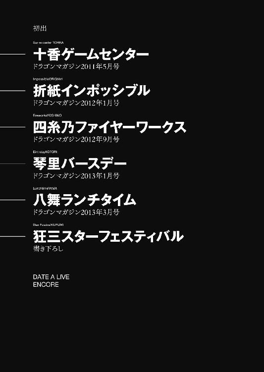
デート・ア・ライブ アンコール
橘 公司
平成25年5月25日 発行
発行者 山下直久
発行所 株式会社 富士見書房
〒102-8144 東京都千代田区富士見1-12-14
http://www.fujimishobo.co.jp/
(C) 2013 Koushi Tachibana, Tsunako/Fujimishobo
本電子書籍は下記にもとづいて制作しました
富士見ファンタジア文庫『デート・ア・ライブ アンコール』平成25年5月25日初版発行